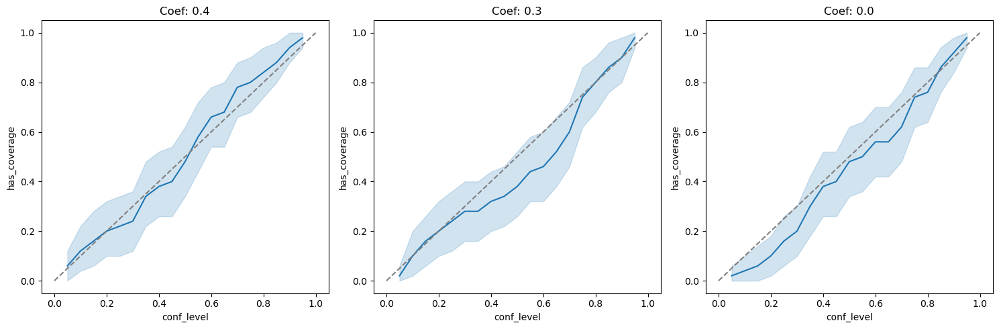

Contents
import jax.numpy as jnp
import jax
import numpy as np
import pandas as pd
import d3p
from twinify.napsu_mq.napsu_mq import NapsuMQModel
from twinify.napsu_mq import rubins_rules as rubin
from twinify.napsu_mq import marginal_query
from twinify.napsu_mq.markov_network import MarkovNetwork
from twinify.napsu_mq import maximum_entropy_inference as mei
from twinify.napsu_mq import privacy_accounting
from tests.napsu_mq.binary_logistic_regression_generator import BinaryLogisticRegressionDataGenerator
import seaborn as sns
import matplotlib.pyplot as plt
import statsmodels.api as sm
from statsmodels.tools.sm_exceptions import PerfectSeparationError
from tqdm import tqdm
n = 2000
d = 4
n_syn_datasets = 100
n_syn_dataset = n
epsilon = 1.0
delta = n**(-2)
conf_levels = np.linspace(0.05, 0.95, 19)
true_params = jnp.array((0.4, 0.3, 0.0))
def gen_data(rng):
data_gen = BinaryLogisticRegressionDataGenerator(true_params)
data = data_gen.generate_data(n, rng)
x_values = data_gen.x_values
values_by_feature = data_gen.values_by_feature
return data, x_values, values_by_feature
def get_dp_suff_stat(rng, queries, data):
suff_stat = jnp.sum(queries.flatten()(data), axis=0)
sensitivity = np.sqrt(suff_stat.shape[0])
sigma_DP = privacy_accounting.sigma(epsilon, delta, sensitivity)
dp_suff_stat = suff_stat + sigma_DP * jax.random.normal(key=rng, shape=suff_stat.shape)
return dp_suff_stat, sigma_DP
def record(ci, conf_level, dim, repeat_ind):
return {
"has_coverage": int(ci[0] <= true_params[dim].item() <= ci[1]),
"conf_level": conf_level,
"dim": dim,
"repeat_ind": repeat_ind
}
def logistic_regression(datasets, col_to_predict=None, add_constant=True):
m, n, d = datasets.shape
if col_to_predict is None: col_to_predict = d - 1
feature_cols = set(range(d))
feature_cols.remove(col_to_predict)
feature_cols = list(feature_cols)
num_coefs = d if add_constant else d - 1
q = np.zeros((m, num_coefs))
u = np.zeros((m, num_coefs))
for i in range(m):
dataset = datasets[i,:,:]
feature_array = sm.add_constant(dataset[:, feature_cols], has_constant="add") if add_constant else dataset[:, feature_cols]
y_array = dataset[:, col_to_predict]
try:
syn_model = sm.GLM(y_array, feature_array, family=sm.families.Binomial())
syn_result = syn_model.fit()
q[i, :] = syn_result.params
u[i, :] = syn_result.bse**2
except PerfectSeparationError:
q[i, :] = np.full(num_coefs, np.nan)
u[i, :] = np.full(num_coefs, np.nan)
return q, u
n_repeats = 50
records = []
rng = d3p.random.PRNGKey(74249069)
rngs = d3p.random.split(rng, n_repeats)
for i in tqdm(range(n_repeats)):
data_rng, inference_rng, sampling_rng = d3p.random.split(rngs[i], 3)
data_rng = d3p.random.convert_to_jax_rng_key(data_rng)
data, x_values, values_by_feature = gen_data(data_rng)
data = pd.DataFrame(data, dtype="int")
model = NapsuMQModel(column_feature_set=[tuple(range(d))], use_laplace_approximation=False)
result = model.fit(
data=data,
rng=inference_rng,
epsilon=epsilon,
delta=delta,
query_sets=[tuple(range(d))]
)
synthetic_dfs = result.generate(
rng=sampling_rng,
num_data_per_parameter_sample=n_syn_dataset,
num_parameter_samples=n_syn_datasets,
single_dataframe=False
)
syn_datasets = np.stack(synthetic_dfs, axis=0)
q, u = logistic_regression(syn_datasets, add_constant=False)
for j in range(d - 1):
for conf_level in conf_levels:
qi = q[:,j]
ui = u[:,j]
inds = (np.isfinite(qi) & np.isfinite(ui))
qi = qi[inds]
ui = ui[inds]
ci = rubin.conf_int(qi, ui, conf_level)
records.append(record(ci, conf_level, j, i))
df = pd.DataFrame.from_records(records)
0%| | 0/50 [00:00<?, ?it/s]
0%| | 0/16 [00:00<?, ?it/s]
4it [00:00, 22826.14it/s]
4it [00:00, 13981.01it/s]
2it [00:00, 4586.45it/s]
4it [00:00, 17260.51it/s]
8it [00:00, 5984.38it/s]
8it [00:00, 17349.76it/s]
4it [00:00, 7247.18it/s]
8it [00:00, 17697.49it/s]
8it [00:00, 9672.65it/s]
4it [00:00, 24528.09it/s]
2it [00:00, 14074.85it/s]
4it [00:00, 15563.28it/s]
16it [00:00, 9668.47it/s]
2it [00:00, 22982.49it/s]
2it [00:00, 7436.71it/s]
100%|█████████████████████████████████████████████████████████████████████████████████████████████████████████████████████████████████████████████████████████████████████████████| 16/16 [00:00<00:00, 418.86it/s]
100%|█████████████████████████████████████████████████████████████████████████████████████████████████████████████████████████████████████████████████████████████████████████████| 1/1 [00:00<00:00, 30393.51it/s]
100%|███████████████████████████████████████████████████████████████████████████████████████████████████████████████████████████████████████████████████████████████████████████| 14/14 [00:00<00:00, 36723.11it/s]
0%| | 0/2800 [00:00<?, ?it/s]
warmup: 0%| | 1/2800 [00:07<5:51:14, 7.53s/it, 1 steps of size 2.34e+00. acc. prob=0.00]
warmup: 14%|████████████████▍ | 384/2800 [00:07<00:33, 71.44it/s, 31 steps of size 5.59e-01. acc. prob=0.79]
sample: 29%|██████████████████████████████████▋ | 809/2800 [00:07<00:11, 179.70it/s, 7 steps of size 4.15e-01. acc. prob=0.83]
sample: 43%|██████████████████████████████████████████████████▉ | 1198/2800 [00:07<00:05, 312.10it/s, 7 steps of size 4.15e-01. acc. prob=0.85]
sample: 57%|███████████████████████████████████████████████████████████████████▋ | 1593/2800 [00:07<00:02, 488.53it/s, 7 steps of size 4.15e-01. acc. prob=0.86]
sample: 72%|█████████████████████████████████████████████████████████████████████████████████████▊ | 2019/2800 [00:08<00:01, 732.89it/s, 7 steps of size 4.15e-01. acc. prob=0.86]
sample: 100%|███████████████████████████████████████████████████████████████████████████████████████████████████████████████████████| 2800/2800 [00:08<00:00, 341.08it/s, 7 steps of size 4.15e-01. acc. prob=0.86]
0%| | 0/2800 [00:00<?, ?it/s]
warmup: 14%|████████████████▊ | 400/2800 [00:00<00:00, 3997.37it/s, 15 steps of size 2.99e-01. acc. prob=0.79]
sample: 29%|██████████████████████████████████▋ | 816/2800 [00:00<00:00, 4091.09it/s, 7 steps of size 3.50e-01. acc. prob=0.86]
sample: 44%|████████████████████████████████████████████████████▏ | 1238/2800 [00:00<00:00, 4148.61it/s, 7 steps of size 3.50e-01. acc. prob=0.88]
sample: 59%|█████████████████████████████████████████████████████████████████████▉ | 1661/2800 [00:00<00:00, 4179.63it/s, 7 steps of size 3.50e-01. acc. prob=0.88]
sample: 74%|███████████████████████████████████████████████████████████████████████████████████████▉ | 2086/2800 [00:00<00:00, 4202.33it/s, 7 steps of size 3.50e-01. acc. prob=0.87]
sample: 100%|██████████████████████████████████████████████████████████████████████████████████████████████████████████████████████| 2800/2800 [00:00<00:00, 4168.35it/s, 7 steps of size 3.50e-01. acc. prob=0.87]
0%| | 0/2800 [00:00<?, ?it/s]
warmup: 12%|██████████████▍ | 343/2800 [00:00<00:00, 3429.32it/s, 15 steps of size 7.70e-01. acc. prob=0.79]
warmup: 25%|██████████████████████████████▎ | 713/2800 [00:00<00:00, 3586.91it/s, 3 steps of size 3.29e-01. acc. prob=0.79]
sample: 40%|███████████████████████████████████████████████▍ | 1126/2800 [00:00<00:00, 3834.46it/s, 7 steps of size 2.98e-01. acc. prob=0.88]
sample: 56%|█████████████████████████████████████████████████████████████████▉ | 1565/2800 [00:00<00:00, 4053.09it/s, 7 steps of size 2.98e-01. acc. prob=0.87]
sample: 72%|████████████████████████████████████████████████████████████████████████████████████▋ | 2011/2800 [00:00<00:00, 4197.36it/s, 7 steps of size 2.98e-01. acc. prob=0.87]
sample: 100%|██████████████████████████████████████████████████████████████████████████████████████████████████████████████████████| 2800/2800 [00:00<00:00, 4107.77it/s, 7 steps of size 2.98e-01. acc. prob=0.87]
0%| | 0/2800 [00:00<?, ?it/s]
warmup: 12%|██████████████▌ | 342/2800 [00:00<00:00, 3414.43it/s, 7 steps of size 2.90e-01. acc. prob=0.78]
warmup: 24%|█████████████████████████████ | 684/2800 [00:00<00:00, 3307.39it/s, 7 steps of size 2.73e-01. acc. prob=0.79]
sample: 38%|█████████████████████████████████████████████ | 1070/2800 [00:00<00:00, 3551.83it/s, 7 steps of size 3.16e-01. acc. prob=0.88]
sample: 54%|███████████████████████████████████████████████████████████████▎ | 1501/2800 [00:00<00:00, 3845.83it/s, 7 steps of size 3.16e-01. acc. prob=0.87]
sample: 69%|█████████████████████████████████████████████████████████████████████████████████▎ | 1929/2800 [00:00<00:00, 4000.69it/s, 7 steps of size 3.16e-01. acc. prob=0.87]
sample: 84%|██████████████████████████████████████████████████████████████████████████████████████████████████ | 2346/2800 [00:00<00:00, 4056.52it/s, 15 steps of size 3.16e-01. acc. prob=0.87]
sample: 100%|█████████████████████████████████████████████████████████████████████████████████████████████████████████████████████| 2800/2800 [00:00<00:00, 3914.87it/s, 23 steps of size 3.16e-01. acc. prob=0.87]
2%|███▌ | 1/50 [00:18<14:58, 18.33s/it]
0%| | 0/16 [00:00<?, ?it/s]
4it [00:00, 16611.10it/s]
4it [00:00, 10727.12it/s]
2it [00:00, 19972.88it/s]
4it [00:00, 20213.51it/s]
8it [00:00, 30174.85it/s]
8it [00:00, 21550.69it/s]
4it [00:00, 31011.49it/s]
8it [00:00, 16594.67it/s]
8it [00:00, 23464.64it/s]
4it [00:00, 14181.92it/s]
2it [00:00, 26296.58it/s]
4it [00:00, 25003.30it/s]
16it [00:00, 6972.35it/s]
2it [00:00, 19645.45it/s]
2it [00:00, 29330.80it/s]
100%|█████████████████████████████████████████████████████████████████████████████████████████████████████████████████████████████████████████████████████████████████████████████| 16/16 [00:00<00:00, 591.52it/s]
100%|█████████████████████████████████████████████████████████████████████████████████████████████████████████████████████████████████████████████████████████████████████████████| 1/1 [00:00<00:00, 52428.80it/s]
100%|███████████████████████████████████████████████████████████████████████████████████████████████████████████████████████████████████████████████████████████████████████████| 14/14 [00:00<00:00, 54270.11it/s]
0%| | 0/2800 [00:00<?, ?it/s]
warmup: 0%| | 1/2800 [00:07<5:49:23, 7.49s/it, 1 steps of size 2.34e+00. acc. prob=0.00]
warmup: 11%|█████████████▊ | 321/2800 [00:07<00:41, 60.02it/s, 15 steps of size 1.82e-01. acc. prob=0.78]
warmup: 23%|███████████████████████████▉ | 656/2800 [00:07<00:14, 145.69it/s, 15 steps of size 3.42e-01. acc. prob=0.79]
sample: 36%|██████████████████████████████████████████▌ | 994/2800 [00:07<00:06, 261.68it/s, 7 steps of size 2.94e-01. acc. prob=0.87]
sample: 48%|█████████████████████████████████████████████████████████▏ | 1357/2800 [00:07<00:03, 425.75it/s, 23 steps of size 2.94e-01. acc. prob=0.88]
sample: 61%|█████████████████████████████████████████████████████████████████████████▏ | 1721/2800 [00:07<00:01, 634.90it/s, 7 steps of size 2.94e-01. acc. prob=0.88]
sample: 73%|███████████████████████████████████████████████████████████████████████████████████████▏ | 2052/2800 [00:08<00:00, 862.44it/s, 7 steps of size 2.94e-01. acc. prob=0.88]
sample: 86%|█████████████████████████████████████████████████████████████████████████████████████████████████████▌ | 2410/2800 [00:08<00:00, 1156.83it/s, 7 steps of size 2.94e-01. acc. prob=0.88]
sample: 100%|███████████████████████████████████████████████████████████████████████████████████████████████████████████████████████| 2800/2800 [00:08<00:00, 337.49it/s, 7 steps of size 2.94e-01. acc. prob=0.88]
0%| | 0/2800 [00:00<?, ?it/s]
warmup: 12%|██████████████▌ | 342/2800 [00:00<00:00, 3414.99it/s, 7 steps of size 3.82e-01. acc. prob=0.78]
warmup: 24%|█████████████████████████████ | 684/2800 [00:00<00:00, 3309.60it/s, 7 steps of size 4.29e-01. acc. prob=0.79]
sample: 36%|██████████████████████████████████████████▊ | 1016/2800 [00:00<00:00, 2901.69it/s, 7 steps of size 2.47e-01. acc. prob=0.88]
sample: 47%|███████████████████████████████████████████████████████▎ | 1312/2800 [00:00<00:00, 1991.63it/s, 7 steps of size 2.47e-01. acc. prob=0.89]
sample: 59%|█████████████████████████████████████████████████████████████████████▉ | 1659/2800 [00:00<00:00, 2373.85it/s, 7 steps of size 2.47e-01. acc. prob=0.89]
sample: 72%|█████████████████████████████████████████████████████████████████████████████████████▎ | 2023/2800 [00:00<00:00, 2714.92it/s, 7 steps of size 2.47e-01. acc. prob=0.89]
sample: 83%|██████████████████████████████████████████████████████████████████████████████████████████████████ | 2326/2800 [00:00<00:00, 2624.02it/s, 7 steps of size 2.47e-01. acc. prob=0.89]
sample: 100%|██████████████████████████████████████████████████████████████████████████████████████████████████████████████████████| 2800/2800 [00:01<00:00, 2697.48it/s, 7 steps of size 2.47e-01. acc. prob=0.89]
0%| | 0/2800 [00:00<?, ?it/s]
warmup: 12%|█████████████▌ | 322/2800 [00:00<00:00, 3208.32it/s, 31 steps of size 2.72e-01. acc. prob=0.78]
warmup: 24%|████████████████████████████▊ | 684/2800 [00:00<00:00, 3448.50it/s, 15 steps of size 4.09e-01. acc. prob=0.79]
sample: 37%|███████████████████████████████████████████▎ | 1029/2800 [00:00<00:00, 3355.47it/s, 7 steps of size 3.03e-01. acc. prob=0.86]
sample: 49%|█████████████████████████████████████████████████████████▌ | 1365/2800 [00:00<00:00, 2994.76it/s, 7 steps of size 3.03e-01. acc. prob=0.86]
sample: 60%|███████████████████████████████████████████████████████████████████████▎ | 1693/2800 [00:00<00:00, 3088.05it/s, 7 steps of size 3.03e-01. acc. prob=0.86]
sample: 74%|███████████████████████████████████████████████████████████████████████████████████████▍ | 2074/2800 [00:00<00:00, 3317.73it/s, 7 steps of size 3.03e-01. acc. prob=0.86]
sample: 100%|█████████████████████████████████████████████████████████████████████████████████████████████████████████████████████| 2800/2800 [00:00<00:00, 3381.43it/s, 15 steps of size 3.03e-01. acc. prob=0.86]
0%| | 0/2800 [00:00<?, ?it/s]
warmup: 12%|██████████████▏ | 333/2800 [00:00<00:00, 3323.79it/s, 7 steps of size 4.01e-01. acc. prob=0.78]
warmup: 24%|████████████████████████████▎ | 666/2800 [00:00<00:00, 3195.85it/s, 7 steps of size 2.90e-01. acc. prob=0.79]
sample: 36%|███████████████████████████████████████████ | 1022/2800 [00:00<00:00, 3355.50it/s, 7 steps of size 2.31e-01. acc. prob=0.88]
sample: 49%|██████████████████████████████████████████████████████████ | 1378/2800 [00:00<00:00, 3434.12it/s, 7 steps of size 2.31e-01. acc. prob=0.87]
sample: 63%|██████████████████████████████████████████████████████████████████████████▎ | 1762/2800 [00:00<00:00, 3578.93it/s, 7 steps of size 2.31e-01. acc. prob=0.87]
sample: 77%|███████████████████████████████████████████████████████████████████████████████████████████▏ | 2163/2800 [00:00<00:00, 3722.64it/s, 7 steps of size 2.31e-01. acc. prob=0.87]
sample: 100%|██████████████████████████████████████████████████████████████████████████████████████████████████████████████████████| 2800/2800 [00:00<00:00, 3629.10it/s, 7 steps of size 2.31e-01. acc. prob=0.87]
4%|███████ | 2/50 [00:37<15:04, 18.85s/it]
0%| | 0/16 [00:00<?, ?it/s]
4it [00:00, 36711.63it/s]
4it [00:00, 30066.70it/s]
2it [00:00, 36472.21it/s]
4it [00:00, 37701.61it/s]
8it [00:00, 33621.68it/s]
8it [00:00, 28244.47it/s]
4it [00:00, 33893.37it/s]
8it [00:00, 32109.50it/s]
8it [00:00, 33621.68it/s]
4it [00:00, 33893.37it/s]
2it [00:00, 32640.50it/s]
4it [00:00, 25614.07it/s]
16it [00:00, 18162.07it/s]
2it [00:00, 39383.14it/s]
2it [00:00, 36954.22it/s]
100%|████████████████████████████████████████████████████████████████████████████████████████████████████████████████████████████████████████████████████████████████████████████| 16/16 [00:00<00:00, 1062.99it/s]
100%|█████████████████████████████████████████████████████████████████████████████████████████████████████████████████████████████████████████████████████████████████████████████| 1/1 [00:00<00:00, 58254.22it/s]
100%|███████████████████████████████████████████████████████████████████████████████████████████████████████████████████████████████████████████████████████████████████████████| 14/14 [00:00<00:00, 54878.74it/s]
0%| | 0/2800 [00:00<?, ?it/s]
warmup: 0%| | 1/2800 [00:07<5:51:52, 7.54s/it, 1 steps of size 2.34e+00. acc. prob=0.00]
warmup: 10%|████████████ | 280/2800 [00:07<00:48, 51.99it/s, 7 steps of size 3.64e-01. acc. prob=0.78]
warmup: 23%|███████████████████████████▍ | 646/2800 [00:07<00:14, 145.30it/s, 15 steps of size 3.37e-01. acc. prob=0.79]
sample: 37%|████████████████████████████████████████████▏ | 1048/2800 [00:07<00:06, 283.35it/s, 15 steps of size 2.45e-01. acc. prob=0.88]
sample: 52%|█████████████████████████████████████████████████████████████▎ | 1443/2800 [00:07<00:02, 460.90it/s, 7 steps of size 2.45e-01. acc. prob=0.88]
sample: 67%|███████████████████████████████████████████████████████████████████████████████▍ | 1868/2800 [00:08<00:01, 706.03it/s, 7 steps of size 2.45e-01. acc. prob=0.88]
sample: 82%|████████████████████████████████████████████████████████████████████████████████████████████████▉ | 2282/2800 [00:08<00:00, 996.41it/s, 7 steps of size 2.45e-01. acc. prob=0.88]
sample: 100%|██████████████████████████████████████████████████████████████████████████████████████████████████████████████████████| 2800/2800 [00:08<00:00, 336.98it/s, 15 steps of size 2.45e-01. acc. prob=0.88]
0%| | 0/2800 [00:00<?, ?it/s]
warmup: 12%|█████████████▊ | 326/2800 [00:00<00:00, 3257.60it/s, 3 steps of size 6.17e-01. acc. prob=0.78]
warmup: 26%|███████████████████████████████ | 730/2800 [00:00<00:00, 3713.69it/s, 7 steps of size 2.64e-01. acc. prob=0.79]
sample: 41%|████████████████████████████████████████████████ | 1139/2800 [00:00<00:00, 3884.51it/s, 7 steps of size 1.71e-01. acc. prob=0.90]
sample: 56%|█████████████████████████████████████████████████████████████████ | 1558/2800 [00:00<00:00, 4002.97it/s, 15 steps of size 1.71e-01. acc. prob=0.89]
sample: 70%|██████████████████████████████████████████████████████████████████████████████████▎ | 1970/2800 [00:00<00:00, 4039.22it/s, 31 steps of size 1.71e-01. acc. prob=0.90]
sample: 100%|█████████████████████████████████████████████████████████████████████████████████████████████████████████████████████| 2800/2800 [00:00<00:00, 3989.94it/s, 31 steps of size 1.71e-01. acc. prob=0.90]
0%| | 0/2800 [00:00<?, ?it/s]
warmup: 13%|███████████████▏ | 356/2800 [00:00<00:00, 3556.94it/s, 7 steps of size 3.73e-01. acc. prob=0.78]
warmup: 27%|███████████████████████████████▎ | 744/2800 [00:00<00:00, 3744.91it/s, 23 steps of size 4.93e-01. acc. prob=0.79]
sample: 40%|███████████████████████████████████████████████▏ | 1119/2800 [00:00<00:00, 3746.46it/s, 7 steps of size 2.80e-01. acc. prob=0.86]
sample: 54%|████████████████████████████████████████████████████████████████▏ | 1524/2800 [00:00<00:00, 3865.38it/s, 7 steps of size 2.80e-01. acc. prob=0.87]
sample: 68%|████████████████████████████████████████████████████████████████████████████████▌ | 1911/2800 [00:00<00:00, 3644.87it/s, 7 steps of size 2.80e-01. acc. prob=0.87]
sample: 81%|████████████████████████████████████████████████████████████████████████████████████████████████ | 2278/2800 [00:00<00:00, 3546.02it/s, 7 steps of size 2.80e-01. acc. prob=0.87]
sample: 100%|██████████████████████████████████████████████████████████████████████████████████████████████████████████████████████| 2800/2800 [00:00<00:00, 3537.28it/s, 7 steps of size 2.80e-01. acc. prob=0.87]
0%| | 0/2800 [00:00<?, ?it/s]
warmup: 9%|██████████▊ | 256/2800 [00:00<00:00, 2554.16it/s, 15 steps of size 2.28e-01. acc. prob=0.78]
warmup: 20%|███████████████████████▏ | 546/2800 [00:00<00:00, 2754.00it/s, 7 steps of size 3.21e-01. acc. prob=0.79]
sample: 30%|███████████████████████████████████ | 832/2800 [00:00<00:00, 2800.09it/s, 15 steps of size 2.25e-01. acc. prob=0.87]
sample: 41%|████████████████████████████████████████████████▋ | 1154/2800 [00:00<00:00, 2963.09it/s, 7 steps of size 2.25e-01. acc. prob=0.85]
sample: 54%|███████████████████████████████████████████████████████████████ | 1508/2800 [00:00<00:00, 3169.10it/s, 15 steps of size 2.25e-01. acc. prob=0.85]
sample: 66%|█████████████████████████████████████████████████████████████████████████████▋ | 1844/2800 [00:00<00:00, 3231.73it/s, 7 steps of size 2.25e-01. acc. prob=0.85]
sample: 77%|███████████████████████████████████████████████████████████████████████████████████████████▎ | 2168/2800 [00:00<00:00, 3175.17it/s, 7 steps of size 2.25e-01. acc. prob=0.85]
sample: 100%|██████████████████████████████████████████████████████████████████████████████████████████████████████████████████████| 2800/2800 [00:00<00:00, 3219.40it/s, 7 steps of size 2.25e-01. acc. prob=0.85]
6%|██████████▌ | 3/50 [00:56<14:41, 18.75s/it]
0%| | 0/16 [00:00<?, ?it/s]
4it [00:00, 32263.88it/s]
4it [00:00, 43351.98it/s]
2it [00:00, 27685.17it/s]
4it [00:00, 35772.32it/s]
8it [00:00, 30393.51it/s]
8it [00:00, 27594.11it/s]
4it [00:00, 40427.03it/s]
8it [00:00, 30643.32it/s]
8it [00:00, 35544.95it/s]
4it [00:00, 33026.02it/s]
2it [00:00, 39199.10it/s]
4it [00:00, 44979.13it/s]
16it [00:00, 20919.22it/s]
2it [00:00, 37117.73it/s]
2it [00:00, 39945.75it/s]
100%|████████████████████████████████████████████████████████████████████████████████████████████████████████████████████████████████████████████████████████████████████████████| 16/16 [00:00<00:00, 1097.55it/s]
100%|█████████████████████████████████████████████████████████████████████████████████████████████████████████████████████████████████████████████████████████████████████████████| 1/1 [00:00<00:00, 50533.78it/s]
100%|███████████████████████████████████████████████████████████████████████████████████████████████████████████████████████████████████████████████████████████████████████████| 14/14 [00:00<00:00, 56245.46it/s]
0%| | 0/2800 [00:00<?, ?it/s]
warmup: 0%| | 1/2800 [00:07<6:08:26, 7.90s/it, 1 steps of size 2.34e+00. acc. prob=0.00]
warmup: 10%|████████████▍ | 290/2800 [00:07<00:48, 51.47it/s, 15 steps of size 2.87e-01. acc. prob=0.78]
warmup: 24%|█████████████████████████████▍ | 686/2800 [00:08<00:14, 148.21it/s, 7 steps of size 3.36e-01. acc. prob=0.79]
sample: 38%|█████████████████████████████████████████████▋ | 1074/2800 [00:08<00:06, 275.65it/s, 7 steps of size 3.29e-01. acc. prob=0.86]
sample: 53%|██████████████████████████████████████████████████████████████▋ | 1475/2800 [00:08<00:02, 449.32it/s, 7 steps of size 3.29e-01. acc. prob=0.86]
sample: 67%|████████████████████████████████████████████████████████████████████████████████ | 1883/2800 [00:08<00:01, 675.52it/s, 7 steps of size 3.29e-01. acc. prob=0.87]
sample: 82%|█████████████████████████████████████████████████████████████████████████████████████████████████▋ | 2298/2800 [00:08<00:00, 959.37it/s, 7 steps of size 3.29e-01. acc. prob=0.87]
sample: 100%|███████████████████████████████████████████████████████████████████████████████████████████████████████████████████████| 2800/2800 [00:08<00:00, 324.73it/s, 7 steps of size 3.29e-01. acc. prob=0.87]
0%| | 0/2800 [00:00<?, ?it/s]
warmup: 14%|████████████████ | 382/2800 [00:00<00:00, 3814.36it/s, 15 steps of size 4.79e-01. acc. prob=0.79]
warmup: 28%|████████████████████████████████▌ | 772/2800 [00:00<00:00, 3855.21it/s, 15 steps of size 1.67e-01. acc. prob=0.79]
sample: 42%|████████████████████████████████████████████████▉ | 1170/2800 [00:00<00:00, 3904.64it/s, 31 steps of size 2.67e-01. acc. prob=0.90]
sample: 56%|██████████████████████████████████████████████████████████████████ | 1568/2800 [00:00<00:00, 3933.68it/s, 7 steps of size 2.67e-01. acc. prob=0.90]
sample: 70%|██████████████████████████████████████████████████████████████████████████████████▋ | 1962/2800 [00:00<00:00, 3787.62it/s, 7 steps of size 2.67e-01. acc. prob=0.90]
sample: 84%|███████████████████████████████████████████████████████████████████████████████████████████████████ | 2352/2800 [00:00<00:00, 3822.58it/s, 7 steps of size 2.67e-01. acc. prob=0.90]
sample: 100%|██████████████████████████████████████████████████████████████████████████████████████████████████████████████████████| 2800/2800 [00:00<00:00, 3850.34it/s, 7 steps of size 2.67e-01. acc. prob=0.90]
0%| | 0/2800 [00:00<?, ?it/s]
warmup: 12%|██████████████▎ | 337/2800 [00:00<00:00, 3363.14it/s, 7 steps of size 3.40e-01. acc. prob=0.78]
warmup: 26%|██████████████████████████████▌ | 718/2800 [00:00<00:00, 3622.05it/s, 7 steps of size 3.89e-01. acc. prob=0.79]
sample: 39%|█████████████████████████████████████████████▊ | 1086/2800 [00:00<00:00, 3645.11it/s, 7 steps of size 2.63e-01. acc. prob=0.92]
sample: 52%|█████████████████████████████████████████████████████████████▏ | 1451/2800 [00:00<00:00, 3559.02it/s, 7 steps of size 2.63e-01. acc. prob=0.92]
sample: 66%|█████████████████████████████████████████████████████████████████████████████▋ | 1843/2800 [00:00<00:00, 3685.63it/s, 7 steps of size 2.63e-01. acc. prob=0.92]
sample: 80%|█████████████████████████████████████████████████████████████████████████████████████████████▉ | 2230/2800 [00:00<00:00, 3745.69it/s, 7 steps of size 2.63e-01. acc. prob=0.92]
sample: 100%|██████████████████████████████████████████████████████████████████████████████████████████████████████████████████████| 2800/2800 [00:00<00:00, 3730.98it/s, 7 steps of size 2.63e-01. acc. prob=0.92]
0%| | 0/2800 [00:00<?, ?it/s]
warmup: 13%|███████████████▌ | 366/2800 [00:00<00:00, 3655.65it/s, 7 steps of size 2.40e-01. acc. prob=0.78]
warmup: 27%|████████████████████████████████▎ | 759/2800 [00:00<00:00, 3814.26it/s, 7 steps of size 3.99e-01. acc. prob=0.79]
sample: 41%|████████████████████████████████████████████████▍ | 1158/2800 [00:00<00:00, 3886.19it/s, 23 steps of size 3.22e-01. acc. prob=0.83]
sample: 56%|██████████████████████████████████████████████████████████████████ | 1568/2800 [00:00<00:00, 3967.81it/s, 7 steps of size 3.22e-01. acc. prob=0.83]
sample: 71%|███████████████████████████████████████████████████████████████████████████████████▋ | 1985/2800 [00:00<00:00, 4039.87it/s, 7 steps of size 3.22e-01. acc. prob=0.83]
sample: 85%|████████████████████████████████████████████████████████████████████████████████████████████████████▋ | 2389/2800 [00:00<00:00, 3962.64it/s, 7 steps of size 3.22e-01. acc. prob=0.83]
sample: 100%|██████████████████████████████████████████████████████████████████████████████████████████████████████████████████████| 2800/2800 [00:00<00:00, 3942.76it/s, 7 steps of size 3.22e-01. acc. prob=0.83]
8%|██████████████ | 4/50 [01:14<14:23, 18.77s/it]
0%| | 0/16 [00:00<?, ?it/s]
4it [00:00, 21732.15it/s]
4it [00:00, 22733.36it/s]
2it [00:00, 16946.68it/s]
4it [00:00, 21024.08it/s]
8it [00:00, 18345.78it/s]
8it [00:00, 30643.32it/s]
4it [00:00, 30012.91it/s]
8it [00:00, 24157.26it/s]
8it [00:00, 28876.45it/s]
4it [00:00, 23399.19it/s]
2it [00:00, 35696.20it/s]
4it [00:00, 40524.68it/s]
16it [00:00, 17508.18it/s]
2it [00:00, 7781.64it/s]
2it [00:00, 2902.63it/s]
100%|█████████████████████████████████████████████████████████████████████████████████████████████████████████████████████████████████████████████████████████████████████████████| 16/16 [00:00<00:00, 691.44it/s]
100%|█████████████████████████████████████████████████████████████████████████████████████████████████████████████████████████████████████████████████████████████████████████████| 1/1 [00:00<00:00, 43240.25it/s]
100%|███████████████████████████████████████████████████████████████████████████████████████████████████████████████████████████████████████████████████████████████████████████| 14/14 [00:00<00:00, 25310.46it/s]
0%| | 0/2800 [00:00<?, ?it/s]
warmup: 0%| | 1/2800 [00:07<6:00:38, 7.73s/it, 1 steps of size 2.34e+00. acc. prob=0.00]
warmup: 12%|███████████████▏ | 350/2800 [00:07<00:38, 63.45it/s, 7 steps of size 4.58e-01. acc. prob=0.79]
warmup: 27%|███████████████████████████████▉ | 746/2800 [00:07<00:12, 161.89it/s, 7 steps of size 3.30e-01. acc. prob=0.79]
sample: 41%|█████████████████████████████████████████████████▎ | 1159/2800 [00:08<00:05, 300.09it/s, 7 steps of size 1.89e-01. acc. prob=0.89]
sample: 56%|██████████████████████████████████████████████████████████████████▏ | 1558/2800 [00:08<00:02, 474.96it/s, 7 steps of size 1.89e-01. acc. prob=0.89]
sample: 70%|██████████████████████████████████████████████████████████████████████████████████▊ | 1964/2800 [00:08<00:01, 702.26it/s, 15 steps of size 1.89e-01. acc. prob=0.89]
sample: 100%|███████████████████████████████████████████████████████████████████████████████████████████████████████████████████████| 2800/2800 [00:08<00:00, 332.21it/s, 7 steps of size 1.89e-01. acc. prob=0.89]
0%| | 0/2800 [00:00<?, ?it/s]
warmup: 12%|█████████████▋ | 324/2800 [00:00<00:00, 3227.41it/s, 31 steps of size 3.50e-01. acc. prob=0.78]
warmup: 24%|████████████████████████████▏ | 664/2800 [00:00<00:00, 3324.40it/s, 7 steps of size 2.71e-01. acc. prob=0.79]
sample: 36%|██████████████████████████████████████████▎ | 997/2800 [00:00<00:00, 3322.62it/s, 7 steps of size 1.37e-01. acc. prob=0.91]
sample: 50%|██████████████████████████████████████████████████████████ | 1389/2800 [00:00<00:00, 3551.83it/s, 23 steps of size 1.37e-01. acc. prob=0.91]
sample: 64%|██████████████████████████████████████████████████████████████████████████▋ | 1786/2800 [00:00<00:00, 3696.57it/s, 23 steps of size 1.37e-01. acc. prob=0.92]
sample: 78%|███████████████████████████████████████████████████████████████████████████████████████████▊ | 2179/2800 [00:00<00:00, 3774.33it/s, 7 steps of size 1.37e-01. acc. prob=0.91]
sample: 100%|██████████████████████████████████████████████████████████████████████████████████████████████████████████████████████| 2800/2800 [00:00<00:00, 3671.79it/s, 7 steps of size 1.37e-01. acc. prob=0.91]
0%| | 0/2800 [00:00<?, ?it/s]
warmup: 11%|█████████████ | 308/2800 [00:00<00:00, 3074.50it/s, 7 steps of size 2.01e-01. acc. prob=0.78]
warmup: 25%|█████████████████████████████▎ | 689/2800 [00:00<00:00, 3504.23it/s, 7 steps of size 2.95e-01. acc. prob=0.79]
sample: 39%|██████████████████████████████████████████████▎ | 1099/2800 [00:00<00:00, 3775.47it/s, 7 steps of size 2.17e-01. acc. prob=0.88]
sample: 54%|███████████████████████████████████████████████████████████████▌ | 1509/2800 [00:00<00:00, 3901.66it/s, 7 steps of size 2.17e-01. acc. prob=0.87]
sample: 68%|████████████████████████████████████████████████████████████████████████████████▋ | 1916/2800 [00:00<00:00, 3959.37it/s, 7 steps of size 2.17e-01. acc. prob=0.88]
sample: 83%|████████████████████████████████████████████████████████████████████████████████████████████████▊ | 2317/2800 [00:00<00:00, 3972.59it/s, 47 steps of size 2.17e-01. acc. prob=0.88]
sample: 100%|██████████████████████████████████████████████████████████████████████████████████████████████████████████████████████| 2800/2800 [00:00<00:00, 3894.16it/s, 7 steps of size 2.17e-01. acc. prob=0.88]
0%| | 0/2800 [00:00<?, ?it/s]
warmup: 13%|███████████████▊ | 375/2800 [00:00<00:00, 3743.77it/s, 15 steps of size 1.45e-01. acc. prob=0.78]
warmup: 27%|████████████████████████████████▌ | 767/2800 [00:00<00:00, 3845.09it/s, 3 steps of size 4.25e-02. acc. prob=0.79]
sample: 43%|██████████████████████████████████████████████████▎ | 1193/2800 [00:00<00:00, 4033.40it/s, 7 steps of size 2.28e-01. acc. prob=0.89]
sample: 58%|████████████████████████████████████████████████████████████████████▉ | 1637/2800 [00:00<00:00, 4190.44it/s, 7 steps of size 2.28e-01. acc. prob=0.89]
sample: 73%|██████████████████████████████████████████████████████████████████████████████████████▋ | 2057/2800 [00:00<00:00, 4178.42it/s, 7 steps of size 2.28e-01. acc. prob=0.89]
sample: 100%|██████████████████████████████████████████████████████████████████████████████████████████████████████████████████████| 2800/2800 [00:00<00:00, 3865.61it/s, 7 steps of size 2.28e-01. acc. prob=0.89]
10%|█████████████████▌ | 5/50 [01:33<13:57, 18.62s/it]
0%| | 0/16 [00:00<?, ?it/s]
4it [00:00, 24244.53it/s]
4it [00:00, 28149.69it/s]
2it [00:00, 16644.06it/s]
4it [00:00, 21399.51it/s]
8it [00:00, 31388.62it/s]
8it [00:00, 26317.20it/s]
4it [00:00, 38479.85it/s]
8it [00:00, 24618.07it/s]
8it [00:00, 30066.70it/s]
4it [00:00, 32326.04it/s]
2it [00:00, 29852.70it/s]
4it [00:00, 41221.66it/s]
16it [00:00, 12811.93it/s]
2it [00:00, 10645.44it/s]
2it [00:00, 14488.10it/s]
100%|█████████████████████████████████████████████████████████████████████████████████████████████████████████████████████████████████████████████████████████████████████████████| 16/16 [00:00<00:00, 596.95it/s]
100%|█████████████████████████████████████████████████████████████████████████████████████████████████████████████████████████████████████████████████████████████████████████████| 1/1 [00:00<00:00, 52428.80it/s]
100%|███████████████████████████████████████████████████████████████████████████████████████████████████████████████████████████████████████████████████████████████████████████| 14/14 [00:00<00:00, 52195.78it/s]
0%| | 0/2800 [00:00<?, ?it/s]
warmup: 0%| | 1/2800 [00:07<5:44:24, 7.38s/it, 1 steps of size 2.34e+00. acc. prob=0.00]
warmup: 12%|██████████████▍ | 333/2800 [00:07<00:39, 63.15it/s, 3 steps of size 1.94e-01. acc. prob=0.78]
warmup: 25%|██████████████████████████████▏ | 704/2800 [00:07<00:13, 159.43it/s, 7 steps of size 2.30e-01. acc. prob=0.79]
sample: 39%|██████████████████████████████████████████████▌ | 1105/2800 [00:07<00:05, 299.34it/s, 31 steps of size 2.09e-01. acc. prob=0.87]
sample: 53%|███████████████████████████████████████████████████████████████▌ | 1497/2800 [00:07<00:02, 478.01it/s, 7 steps of size 2.09e-01. acc. prob=0.87]
sample: 66%|███████████████████████████████████████████████████████████████████████████████▏ | 1862/2800 [00:07<00:01, 686.78it/s, 7 steps of size 2.09e-01. acc. prob=0.87]
sample: 79%|██████████████████████████████████████████████████████████████████████████████████████████████▏ | 2216/2800 [00:07<00:00, 928.47it/s, 7 steps of size 2.09e-01. acc. prob=0.87]
sample: 100%|███████████████████████████████████████████████████████████████████████████████████████████████████████████████████████| 2800/2800 [00:08<00:00, 343.58it/s, 7 steps of size 2.09e-01. acc. prob=0.87]
0%| | 0/2800 [00:00<?, ?it/s]
warmup: 12%|█████████████▉ | 332/2800 [00:00<00:00, 3316.40it/s, 11 steps of size 2.89e-01. acc. prob=0.78]
warmup: 25%|█████████████████████████████▍ | 692/2800 [00:00<00:00, 3479.94it/s, 7 steps of size 2.62e-01. acc. prob=0.79]
sample: 38%|████████████████████████████████████████████▍ | 1053/2800 [00:00<00:00, 3536.85it/s, 7 steps of size 2.12e-01. acc. prob=0.89]
sample: 52%|█████████████████████████████████████████████████████████████▏ | 1453/2800 [00:00<00:00, 3716.50it/s, 7 steps of size 2.12e-01. acc. prob=0.89]
sample: 66%|██████████████████████████████████████████████████████████████████████████████▍ | 1861/2800 [00:00<00:00, 3846.46it/s, 7 steps of size 2.12e-01. acc. prob=0.89]
sample: 81%|███████████████████████████████████████████████████████████████████████████████████████████████▏ | 2258/2800 [00:00<00:00, 3887.03it/s, 7 steps of size 2.12e-01. acc. prob=0.89]
sample: 100%|██████████████████████████████████████████████████████████████████████████████████████████████████████████████████████| 2800/2800 [00:00<00:00, 3822.68it/s, 7 steps of size 2.12e-01. acc. prob=0.89]
0%| | 0/2800 [00:00<?, ?it/s]
warmup: 12%|██████████████▎ | 340/2800 [00:00<00:00, 3396.97it/s, 27 steps of size 4.23e-01. acc. prob=0.78]
warmup: 25%|█████████████████████████████ | 689/2800 [00:00<00:00, 3449.10it/s, 11 steps of size 2.45e-01. acc. prob=0.79]
sample: 37%|███████████████████████████████████████████▋ | 1038/2800 [00:00<00:00, 3466.60it/s, 3 steps of size 2.69e-01. acc. prob=0.86]
sample: 51%|████████████████████████████████████████████████████████████▏ | 1428/2800 [00:00<00:00, 3635.05it/s, 7 steps of size 2.69e-01. acc. prob=0.86]
sample: 65%|████████████████████████████████████████████████████████████████████████████▍ | 1828/2800 [00:00<00:00, 3756.50it/s, 39 steps of size 2.69e-01. acc. prob=0.86]
sample: 79%|█████████████████████████████████████████████████████████████████████████████████████████████▋ | 2223/2800 [00:00<00:00, 3820.47it/s, 7 steps of size 2.69e-01. acc. prob=0.87]
sample: 100%|██████████████████████████████████████████████████████████████████████████████████████████████████████████████████████| 2800/2800 [00:00<00:00, 3753.46it/s, 7 steps of size 2.69e-01. acc. prob=0.86]
0%| | 0/2800 [00:00<?, ?it/s]
warmup: 13%|███████████████▎ | 362/2800 [00:00<00:00, 3619.60it/s, 15 steps of size 2.72e-01. acc. prob=0.78]
warmup: 27%|████████████████████████████████▌ | 766/2800 [00:00<00:00, 3862.86it/s, 7 steps of size 4.63e-01. acc. prob=0.79]
sample: 42%|█████████████████████████████████████████████████▎ | 1169/2800 [00:00<00:00, 3936.80it/s, 7 steps of size 2.54e-01. acc. prob=0.90]
sample: 56%|█████████████████████████████████████████████████████████████████▌ | 1568/2800 [00:00<00:00, 3953.89it/s, 15 steps of size 2.54e-01. acc. prob=0.90]
sample: 70%|██████████████████████████████████████████████████████████████████████████████████▊ | 1964/2800 [00:00<00:00, 3826.11it/s, 7 steps of size 2.54e-01. acc. prob=0.90]
sample: 84%|███████████████████████████████████████████████████████████████████████████████████████████████████▍ | 2359/2800 [00:00<00:00, 3865.72it/s, 7 steps of size 2.54e-01. acc. prob=0.90]
sample: 100%|██████████████████████████████████████████████████████████████████████████████████████████████████████████████████████| 2800/2800 [00:00<00:00, 3895.71it/s, 7 steps of size 2.54e-01. acc. prob=0.90]
12%|█████████████████████ | 6/50 [01:51<13:30, 18.42s/it]
0%| | 0/16 [00:00<?, ?it/s]
4it [00:00, 24855.13it/s]
4it [00:00, 30283.78it/s]
2it [00:00, 23831.27it/s]
4it [00:00, 38130.04it/s]
8it [00:00, 23448.24it/s]
8it [00:00, 22339.83it/s]
4it [00:00, 38479.85it/s]
8it [00:00, 26214.40it/s]
8it [00:00, 28752.73it/s]
4it [00:00, 20311.40it/s]
2it [00:00, 32896.50it/s]
4it [00:00, 36711.63it/s]
16it [00:00, 16496.77it/s]
2it [00:00, 25040.62it/s]
2it [00:00, 36954.22it/s]
100%|█████████████████████████████████████████████████████████████████████████████████████████████████████████████████████████████████████████████████████████████████████████████| 16/16 [00:00<00:00, 765.81it/s]
100%|█████████████████████████████████████████████████████████████████████████████████████████████████████████████████████████████████████████████████████████████████████████████| 1/1 [00:00<00:00, 50533.78it/s]
100%|███████████████████████████████████████████████████████████████████████████████████████████████████████████████████████████████████████████████████████████████████████████| 14/14 [00:00<00:00, 31068.92it/s]
0%| | 0/2800 [00:00<?, ?it/s]
warmup: 0%| | 1/2800 [00:07<5:49:32, 7.49s/it, 1 steps of size 2.34e+00. acc. prob=0.00]
warmup: 9%|███████████▎ | 265/2800 [00:07<00:51, 49.52it/s, 31 steps of size 1.31e-01. acc. prob=0.78]
warmup: 21%|█████████████████████████▌ | 600/2800 [00:07<00:16, 135.41it/s, 23 steps of size 1.20e-01. acc. prob=0.79]
sample: 34%|████████████████████████████████████████▎ | 949/2800 [00:07<00:07, 255.62it/s, 39 steps of size 1.24e-01. acc. prob=0.89]
sample: 46%|██████████████████████████████████████████████████████▋ | 1297/2800 [00:07<00:03, 412.66it/s, 15 steps of size 1.24e-01. acc. prob=0.89]
sample: 60%|███████████████████████████████████████████████████████████████████████▏ | 1676/2800 [00:07<00:01, 632.36it/s, 7 steps of size 1.24e-01. acc. prob=0.89]
sample: 73%|██████████████████████████████████████████████████████████████████████████████████████▉ | 2046/2800 [00:08<00:00, 893.19it/s, 7 steps of size 1.24e-01. acc. prob=0.89]
sample: 85%|████████████████████████████████████████████████████████████████████████████████████████████████████▋ | 2389/2800 [00:08<00:00, 1164.79it/s, 7 steps of size 1.24e-01. acc. prob=0.88]
sample: 100%|███████████████████████████████████████████████████████████████████████████████████████████████████████████████████████| 2800/2800 [00:08<00:00, 337.12it/s, 7 steps of size 1.24e-01. acc. prob=0.89]
0%| | 0/2800 [00:00<?, ?it/s]
warmup: 12%|██████████████▏ | 336/2800 [00:00<00:00, 3352.59it/s, 15 steps of size 1.38e-01. acc. prob=0.78]
warmup: 24%|█████████████████████████████ | 684/2800 [00:00<00:00, 3424.41it/s, 7 steps of size 1.57e-01. acc. prob=0.79]
sample: 38%|████████████████████████████████████████████▎ | 1051/2800 [00:00<00:00, 3533.20it/s, 7 steps of size 2.33e-01. acc. prob=0.83]
sample: 50%|███████████████████████████████████████████████████████████▏ | 1405/2800 [00:00<00:00, 3502.57it/s, 7 steps of size 2.33e-01. acc. prob=0.84]
sample: 63%|█████████████████████████████████████████████████████████████████████████▍ | 1756/2800 [00:00<00:00, 3452.77it/s, 31 steps of size 2.33e-01. acc. prob=0.83]
sample: 75%|████████████████████████████████████████████████████████████████████████████████████████▌ | 2102/2800 [00:00<00:00, 3350.15it/s, 7 steps of size 2.33e-01. acc. prob=0.83]
sample: 87%|█████████████████████████████████████████████████████████████████████████████████████████████████████▉ | 2439/2800 [00:00<00:00, 3352.20it/s, 39 steps of size 2.33e-01. acc. prob=0.83]
sample: 100%|██████████████████████████████████████████████████████████████████████████████████████████████████████████████████████| 2800/2800 [00:00<00:00, 3393.33it/s, 7 steps of size 2.33e-01. acc. prob=0.83]
0%| | 0/2800 [00:00<?, ?it/s]
warmup: 12%|█████████████▊ | 324/2800 [00:00<00:00, 3239.80it/s, 7 steps of size 3.37e-01. acc. prob=0.78]
warmup: 24%|████████████████████████████▎ | 667/2800 [00:00<00:00, 3347.70it/s, 7 steps of size 3.40e-01. acc. prob=0.79]
sample: 36%|██████████████████████████████████████████ | 1008/2800 [00:00<00:00, 3372.10it/s, 23 steps of size 1.59e-01. acc. prob=0.89]
sample: 50%|██████████████████████████████████████████████████████████▉ | 1398/2800 [00:00<00:00, 3578.46it/s, 7 steps of size 1.59e-01. acc. prob=0.90]
sample: 63%|██████████████████████████████████████████████████████████████████████████▊ | 1776/2800 [00:00<00:00, 3648.30it/s, 7 steps of size 1.59e-01. acc. prob=0.90]
sample: 77%|███████████████████████████████████████████████████████████████████████████████████████████ | 2162/2800 [00:00<00:00, 3718.23it/s, 7 steps of size 1.59e-01. acc. prob=0.90]
sample: 100%|█████████████████████████████████████████████████████████████████████████████████████████████████████████████████████| 2800/2800 [00:00<00:00, 3578.29it/s, 79 steps of size 1.59e-01. acc. prob=0.90]
0%| | 0/2800 [00:00<?, ?it/s]
warmup: 11%|█████████████▏ | 309/2800 [00:00<00:00, 3084.45it/s, 7 steps of size 8.37e-02. acc. prob=0.78]
warmup: 24%|████████████████████████████▌ | 672/2800 [00:00<00:00, 3404.95it/s, 7 steps of size 1.75e-01. acc. prob=0.79]
sample: 37%|███████████████████████████████████████████▌ | 1044/2800 [00:00<00:00, 3540.59it/s, 47 steps of size 1.88e-01. acc. prob=0.87]
sample: 52%|█████████████████████████████████████████████████████████████ | 1462/2800 [00:00<00:00, 3789.90it/s, 39 steps of size 1.88e-01. acc. prob=0.88]
sample: 66%|█████████████████████████████████████████████████████████████████████████████▊ | 1847/2800 [00:00<00:00, 3809.40it/s, 7 steps of size 1.88e-01. acc. prob=0.88]
sample: 81%|███████████████████████████████████████████████████████████████████████████████████████████████ | 2255/2800 [00:00<00:00, 3899.33it/s, 7 steps of size 1.88e-01. acc. prob=0.87]
sample: 100%|██████████████████████████████████████████████████████████████████████████████████████████████████████████████████████| 2800/2800 [00:00<00:00, 3747.18it/s, 7 steps of size 1.88e-01. acc. prob=0.87]
14%|████████████████████████▌ | 7/50 [02:09<13:13, 18.46s/it]
0%| | 0/16 [00:00<?, ?it/s]
4it [00:00, 40041.09it/s]
4it [00:00, 29228.60it/s]
2it [00:00, 12122.27it/s]
4it [00:00, 20945.34it/s]
8it [00:00, 19130.23it/s]
8it [00:00, 19328.59it/s]
4it [00:00, 20945.34it/s]
8it [00:00, 23188.96it/s]
8it [00:00, 25477.93it/s]
4it [00:00, 38479.85it/s]
2it [00:00, 29852.70it/s]
4it [00:00, 20610.83it/s]
16it [00:00, 13695.69it/s]
2it [00:00, 33288.13it/s]
2it [00:00, 32896.50it/s]
100%|█████████████████████████████████████████████████████████████████████████████████████████████████████████████████████████████████████████████████████████████████████████████| 16/16 [00:00<00:00, 710.55it/s]
100%|█████████████████████████████████████████████████████████████████████████████████████████████████████████████████████████████████████████████████████████████████████████████| 1/1 [00:00<00:00, 53092.46it/s]
100%|███████████████████████████████████████████████████████████████████████████████████████████████████████████████████████████████████████████████████████████████████████████| 14/14 [00:00<00:00, 24105.20it/s]
0%| | 0/2800 [00:00<?, ?it/s]
warmup: 0%| | 1/2800 [00:07<6:00:49, 7.73s/it, 1 steps of size 2.34e+00. acc. prob=0.00]
warmup: 12%|██████████████▊ | 344/2800 [00:07<00:39, 62.33it/s, 7 steps of size 2.75e-01. acc. prob=0.78]
warmup: 27%|████████████████████████████████▍ | 762/2800 [00:07<00:12, 166.30it/s, 31 steps of size 1.14e-01. acc. prob=0.79]
sample: 42%|██████████████████████████████████████████████████▍ | 1187/2800 [00:08<00:05, 308.48it/s, 7 steps of size 3.09e-01. acc. prob=0.89]
sample: 58%|████████████████████████████████████████████████████████████████████▋ | 1616/2800 [00:08<00:02, 497.10it/s, 7 steps of size 3.09e-01. acc. prob=0.89]
sample: 74%|███████████████████████████████████████████████████████████████████████████████████████▋ | 2062/2800 [00:08<00:00, 748.29it/s, 7 steps of size 3.09e-01. acc. prob=0.89]
sample: 100%|███████████████████████████████████████████████████████████████████████████████████████████████████████████████████████| 2800/2800 [00:08<00:00, 332.76it/s, 7 steps of size 3.09e-01. acc. prob=0.90]
0%| | 0/2800 [00:00<?, ?it/s]
warmup: 12%|██████████████▏ | 335/2800 [00:00<00:00, 3345.35it/s, 7 steps of size 5.42e-01. acc. prob=0.78]
warmup: 26%|███████████████████████████████ | 731/2800 [00:00<00:00, 3705.49it/s, 3 steps of size 4.64e-01. acc. prob=0.79]
sample: 41%|████████████████████████████████████████████████▊ | 1157/2800 [00:00<00:00, 3955.14it/s, 7 steps of size 3.50e-01. acc. prob=0.89]
sample: 56%|██████████████████████████████████████████████████████████████████ | 1580/2800 [00:00<00:00, 4061.38it/s, 31 steps of size 3.50e-01. acc. prob=0.89]
sample: 71%|███████████████████████████████████████████████████████████████████████████████████▍ | 1998/2800 [00:00<00:00, 4102.27it/s, 15 steps of size 3.50e-01. acc. prob=0.89]
sample: 100%|██████████████████████████████████████████████████████████████████████████████████████████████████████████████████████| 2800/2800 [00:00<00:00, 4079.93it/s, 7 steps of size 3.50e-01. acc. prob=0.89]
0%| | 0/2800 [00:00<?, ?it/s]
warmup: 13%|███████████████▊ | 371/2800 [00:00<00:00, 3703.58it/s, 7 steps of size 3.00e-01. acc. prob=0.78]
warmup: 28%|█████████████████████████████████ | 778/2800 [00:00<00:00, 3918.37it/s, 7 steps of size 3.17e-01. acc. prob=0.79]
sample: 42%|█████████████████████████████████████████████████▌ | 1176/2800 [00:00<00:00, 3945.11it/s, 7 steps of size 3.50e-01. acc. prob=0.86]
sample: 56%|██████████████████████████████████████████████████████████████████▏ | 1571/2800 [00:00<00:00, 3839.00it/s, 7 steps of size 3.50e-01. acc. prob=0.86]
sample: 71%|██████████████████████████████████████████████████████████████████████████████████▉ | 1986/2800 [00:00<00:00, 3948.37it/s, 15 steps of size 3.50e-01. acc. prob=0.86]
sample: 100%|██████████████████████████████████████████████████████████████████████████████████████████████████████████████████████| 2800/2800 [00:00<00:00, 3978.10it/s, 7 steps of size 3.50e-01. acc. prob=0.86]
0%| | 0/2800 [00:00<?, ?it/s]
warmup: 14%|████████████████▎ | 383/2800 [00:00<00:00, 3827.51it/s, 3 steps of size 8.39e-01. acc. prob=0.79]
warmup: 27%|████████████████████████████████▎ | 768/2800 [00:00<00:00, 3837.66it/s, 15 steps of size 2.86e-01. acc. prob=0.79]
sample: 42%|█████████████████████████████████████████████████▏ | 1178/2800 [00:00<00:00, 3952.73it/s, 15 steps of size 3.09e-01. acc. prob=0.89]
sample: 57%|███████████████████████████████████████████████████████████████████▌ | 1603/2800 [00:00<00:00, 4067.11it/s, 7 steps of size 3.09e-01. acc. prob=0.89]
sample: 72%|████████████████████████████████████████████████████████████████████████████████████▋ | 2010/2800 [00:00<00:00, 4002.03it/s, 7 steps of size 3.09e-01. acc. prob=0.89]
sample: 100%|██████████████████████████████████████████████████████████████████████████████████████████████████████████████████████| 2800/2800 [00:00<00:00, 3939.85it/s, 7 steps of size 3.09e-01. acc. prob=0.89]
16%|████████████████████████████ | 8/50 [02:28<12:50, 18.35s/it]
0%| | 0/16 [00:00<?, ?it/s]
4it [00:00, 31536.12it/s]
4it [00:00, 16810.84it/s]
2it [00:00, 5038.20it/s]
4it [00:00, 22982.49it/s]
8it [00:00, 17024.06it/s]
8it [00:00, 21509.25it/s]
4it [00:00, 33893.37it/s]
8it [00:00, 29641.72it/s]
8it [00:00, 26504.29it/s]
4it [00:00, 32263.88it/s]
2it [00:00, 33288.13it/s]
4it [00:00, 16946.68it/s]
16it [00:00, 16312.32it/s]
2it [00:00, 13617.87it/s]
2it [00:00, 8338.58it/s]
100%|█████████████████████████████████████████████████████████████████████████████████████████████████████████████████████████████████████████████████████████████████████████████| 16/16 [00:00<00:00, 628.68it/s]
100%|█████████████████████████████████████████████████████████████████████████████████████████████████████████████████████████████████████████████████████████████████████████████| 1/1 [00:00<00:00, 38479.85it/s]
100%|███████████████████████████████████████████████████████████████████████████████████████████████████████████████████████████████████████████████████████████████████████████| 14/14 [00:00<00:00, 45875.20it/s]
0%| | 0/2800 [00:00<?, ?it/s]
warmup: 0%| | 1/2800 [00:07<5:59:28, 7.71s/it, 1 steps of size 2.34e+00. acc. prob=0.00]
warmup: 12%|█████████████▊ | 323/2800 [00:07<00:42, 58.73it/s, 63 steps of size 1.74e-01. acc. prob=0.78]
warmup: 26%|██████████████████████████████▊ | 725/2800 [00:07<00:13, 159.10it/s, 15 steps of size 3.29e-01. acc. prob=0.79]
sample: 40%|███████████████████████████████████████████████▊ | 1125/2800 [00:08<00:05, 293.28it/s, 7 steps of size 2.46e-01. acc. prob=0.89]
sample: 54%|████████████████████████████████████████████████████████████████▌ | 1519/2800 [00:08<00:02, 466.61it/s, 7 steps of size 2.46e-01. acc. prob=0.89]
sample: 67%|███████████████████████████████████████████████████████████████████████████████▊ | 1878/2800 [00:08<00:01, 665.20it/s, 7 steps of size 2.46e-01. acc. prob=0.89]
sample: 81%|████████████████████████████████████████████████████████████████████████████████████████████████▍ | 2268/2800 [00:08<00:00, 934.43it/s, 7 steps of size 2.46e-01. acc. prob=0.89]
sample: 100%|███████████████████████████████████████████████████████████████████████████████████████████████████████████████████████| 2800/2800 [00:08<00:00, 331.93it/s, 7 steps of size 2.46e-01. acc. prob=0.89]
0%| | 0/2800 [00:00<?, ?it/s]
warmup: 13%|██████████████▉ | 351/2800 [00:00<00:00, 3509.36it/s, 7 steps of size 2.70e-01. acc. prob=0.78]
warmup: 27%|███████████████████████████████▊ | 756/2800 [00:00<00:00, 3817.91it/s, 31 steps of size 2.58e-01. acc. prob=0.79]
sample: 42%|█████████████████████████████████████████████████ | 1163/2800 [00:00<00:00, 3931.64it/s, 7 steps of size 2.85e-01. acc. prob=0.88]
sample: 56%|█████████████████████████████████████████████████████████████████▊ | 1576/2800 [00:00<00:00, 4005.54it/s, 15 steps of size 2.85e-01. acc. prob=0.88]
sample: 71%|███████████████████████████████████████████████████████████████████████████████████ | 1989/2800 [00:00<00:00, 4048.72it/s, 15 steps of size 2.85e-01. acc. prob=0.88]
sample: 100%|██████████████████████████████████████████████████████████████████████████████████████████████████████████████████████| 2800/2800 [00:00<00:00, 4023.77it/s, 7 steps of size 2.85e-01. acc. prob=0.88]
0%| | 0/2800 [00:00<?, ?it/s]
warmup: 11%|█████████████▏ | 313/2800 [00:00<00:00, 3119.49it/s, 15 steps of size 1.50e-01. acc. prob=0.78]
warmup: 25%|██████████████████████████████▏ | 711/2800 [00:00<00:00, 3623.46it/s, 7 steps of size 1.97e-01. acc. prob=0.79]
sample: 39%|██████████████████████████████████████████████▌ | 1105/2800 [00:00<00:00, 3767.82it/s, 7 steps of size 2.58e-01. acc. prob=0.87]
sample: 54%|██████████████████████████████████████████████████████████████▋ | 1501/2800 [00:00<00:00, 3838.18it/s, 23 steps of size 2.58e-01. acc. prob=0.86]
sample: 68%|███████████████████████████████████████████████████████████████████████████████▋ | 1891/2800 [00:00<00:00, 3858.97it/s, 7 steps of size 2.58e-01. acc. prob=0.86]
sample: 82%|███████████████████████████████████████████████████████████████████████████████████████████████▌ | 2286/2800 [00:00<00:00, 3885.01it/s, 31 steps of size 2.58e-01. acc. prob=0.86]
sample: 100%|██████████████████████████████████████████████████████████████████████████████████████████████████████████████████████| 2800/2800 [00:00<00:00, 3854.23it/s, 7 steps of size 2.58e-01. acc. prob=0.86]
0%| | 0/2800 [00:00<?, ?it/s]
warmup: 12%|██████████████▋ | 346/2800 [00:00<00:00, 3451.98it/s, 7 steps of size 4.26e-01. acc. prob=0.78]
warmup: 25%|█████████████████████████████▉ | 704/2800 [00:00<00:00, 3523.79it/s, 3 steps of size 3.66e-01. acc. prob=0.79]
sample: 38%|████████████████████████████████████████████▊ | 1073/2800 [00:00<00:00, 3597.44it/s, 15 steps of size 3.16e-01. acc. prob=0.85]
sample: 52%|█████████████████████████████████████████████████████████████▌ | 1462/2800 [00:00<00:00, 3710.81it/s, 7 steps of size 3.16e-01. acc. prob=0.84]
sample: 66%|██████████████████████████████████████████████████████████████████████████████▏ | 1854/2800 [00:00<00:00, 3783.90it/s, 7 steps of size 3.16e-01. acc. prob=0.84]
sample: 80%|██████████████████████████████████████████████████████████████████████████████████████████████▉ | 2253/2800 [00:00<00:00, 3852.37it/s, 7 steps of size 3.16e-01. acc. prob=0.84]
sample: 100%|██████████████████████████████████████████████████████████████████████████████████████████████████████████████████████| 2800/2800 [00:00<00:00, 3810.86it/s, 7 steps of size 3.16e-01. acc. prob=0.83]
18%|███████████████████████████████▌ | 9/50 [02:46<12:33, 18.37s/it]
0%| | 0/16 [00:00<?, ?it/s]
4it [00:00, 27822.91it/s]
4it [00:00, 17242.77it/s]
2it [00:00, 24314.81it/s]
4it [00:00, 30283.78it/s]
8it [00:00, 22982.49it/s]
8it [00:00, 27869.13it/s]
4it [00:00, 42048.16it/s]
8it [00:00, 23530.46it/s]
8it [00:00, 22354.72it/s]
4it [00:00, 42908.48it/s]
2it [00:00, 30283.78it/s]
4it [00:00, 35469.80it/s]
16it [00:00, 8430.76it/s]
2it [00:00, 15363.75it/s]
2it [00:00, 15169.27it/s]
100%|█████████████████████████████████████████████████████████████████████████████████████████████████████████████████████████████████████████████████████████████████████████████| 16/16 [00:00<00:00, 658.38it/s]
100%|█████████████████████████████████████████████████████████████████████████████████████████████████████████████████████████████████████████████████████████████████████████████| 1/1 [00:00<00:00, 36792.14it/s]
100%|███████████████████████████████████████████████████████████████████████████████████████████████████████████████████████████████████████████████████████████████████████████| 14/14 [00:00<00:00, 25925.06it/s]
0%| | 0/2800 [00:00<?, ?it/s]
warmup: 0%| | 1/2800 [00:07<5:53:29, 7.58s/it, 1 steps of size 2.34e+00. acc. prob=0.00]
warmup: 12%|██████████████▊ | 344/2800 [00:07<00:38, 63.60it/s, 7 steps of size 2.95e-01. acc. prob=0.78]
warmup: 26%|███████████████████████████████▎ | 730/2800 [00:07<00:12, 161.37it/s, 7 steps of size 3.88e-01. acc. prob=0.79]
sample: 40%|███████████████████████████████████████████████▏ | 1111/2800 [00:07<00:05, 290.83it/s, 7 steps of size 2.91e-01. acc. prob=0.87]
sample: 54%|████████████████████████████████████████████████████████████████▊ | 1524/2800 [00:07<00:02, 476.02it/s, 7 steps of size 2.91e-01. acc. prob=0.87]
sample: 68%|█████████████████████████████████████████████████████████████████████████████████▍ | 1917/2800 [00:08<00:01, 698.65it/s, 7 steps of size 2.91e-01. acc. prob=0.87]
sample: 82%|█████████████████████████████████████████████████████████████████████████████████████████████████ | 2285/2800 [00:08<00:00, 937.89it/s, 3 steps of size 2.91e-01. acc. prob=0.87]
sample: 100%|███████████████████████████████████████████████████████████████████████████████████████████████████████████████████████| 2800/2800 [00:08<00:00, 336.39it/s, 7 steps of size 2.91e-01. acc. prob=0.87]
0%| | 0/2800 [00:00<?, ?it/s]
warmup: 11%|█████████████ | 309/2800 [00:00<00:00, 3083.83it/s, 15 steps of size 2.04e-01. acc. prob=0.78]
warmup: 24%|████████████████████████████▍ | 676/2800 [00:00<00:00, 3428.21it/s, 15 steps of size 5.21e-01. acc. prob=0.79]
sample: 38%|████████████████████████████████████████████▌ | 1058/2800 [00:00<00:00, 3603.16it/s, 7 steps of size 1.46e-01. acc. prob=0.91]
sample: 52%|█████████████████████████████████████████████████████████████▏ | 1453/2800 [00:00<00:00, 3735.81it/s, 7 steps of size 1.46e-01. acc. prob=0.90]
sample: 65%|████████████████████████████████████████████████████████████████████████████▉ | 1827/2800 [00:00<00:00, 3722.33it/s, 7 steps of size 1.46e-01. acc. prob=0.91]
sample: 80%|██████████████████████████████████████████████████████████████████████████████████████████████ | 2231/2800 [00:00<00:00, 3827.01it/s, 7 steps of size 1.46e-01. acc. prob=0.91]
sample: 100%|██████████████████████████████████████████████████████████████████████████████████████████████████████████████████████| 2800/2800 [00:00<00:00, 3756.00it/s, 7 steps of size 1.46e-01. acc. prob=0.91]
0%| | 0/2800 [00:00<?, ?it/s]
warmup: 12%|██████████████▎ | 340/2800 [00:00<00:00, 3395.25it/s, 15 steps of size 5.42e-01. acc. prob=0.78]
warmup: 26%|██████████████████████████████▋ | 723/2800 [00:00<00:00, 3649.75it/s, 3 steps of size 3.04e-01. acc. prob=0.79]
sample: 40%|██████████████████████████████████████████████▎ | 1109/2800 [00:00<00:00, 3745.59it/s, 31 steps of size 2.49e-01. acc. prob=0.87]
sample: 54%|███████████████████████████████████████████████████████████████▌ | 1521/2800 [00:00<00:00, 3893.07it/s, 23 steps of size 2.49e-01. acc. prob=0.87]
sample: 68%|████████████████████████████████████████████████████████████████████████████████▌ | 1911/2800 [00:00<00:00, 3797.68it/s, 7 steps of size 2.49e-01. acc. prob=0.87]
sample: 82%|████████████████████████████████████████████████████████████████████████████████████████████████▌ | 2292/2800 [00:00<00:00, 3788.14it/s, 7 steps of size 2.49e-01. acc. prob=0.87]
sample: 100%|██████████████████████████████████████████████████████████████████████████████████████████████████████████████████████| 2800/2800 [00:00<00:00, 3788.30it/s, 7 steps of size 2.49e-01. acc. prob=0.87]
0%| | 0/2800 [00:00<?, ?it/s]
warmup: 13%|███████████████▍ | 364/2800 [00:00<00:00, 3634.80it/s, 7 steps of size 3.10e-01. acc. prob=0.78]
warmup: 28%|████████████████████████████████▌ | 773/2800 [00:00<00:00, 3895.60it/s, 15 steps of size 1.34e-01. acc. prob=0.79]
sample: 42%|█████████████████████████████████████████████████ | 1165/2800 [00:00<00:00, 3904.34it/s, 7 steps of size 2.20e-01. acc. prob=0.89]
sample: 56%|██████████████████████████████████████████████████████████████████▋ | 1582/2800 [00:00<00:00, 4006.19it/s, 7 steps of size 2.20e-01. acc. prob=0.88]
sample: 72%|████████████████████████████████████████████████████████████████████████████████████▍ | 2003/2800 [00:00<00:00, 4076.89it/s, 7 steps of size 2.20e-01. acc. prob=0.88]
sample: 100%|██████████████████████████████████████████████████████████████████████████████████████████████████████████████████████| 2800/2800 [00:00<00:00, 4042.43it/s, 7 steps of size 2.20e-01. acc. prob=0.88]
20%|██████████████████████████████████▊ | 10/50 [03:05<12:20, 18.51s/it]
0%| | 0/16 [00:00<?, ?it/s]
4it [00:00, 23663.21it/s]
4it [00:00, 16677.15it/s]
2it [00:00, 28244.47it/s]
4it [00:00, 8116.70it/s]
8it [00:00, 14538.32it/s]
8it [00:00, 28581.29it/s]
4it [00:00, 30615.36it/s]
8it [00:00, 26609.38it/s]
8it [00:00, 26132.74it/s]
4it [00:00, 19043.38it/s]
2it [00:00, 7869.24it/s]
4it [00:00, 28008.71it/s]
16it [00:00, 14404.13it/s]
2it [00:00, 31300.78it/s]
2it [00:00, 33825.03it/s]
100%|█████████████████████████████████████████████████████████████████████████████████████████████████████████████████████████████████████████████████████████████████████████████| 16/16 [00:00<00:00, 685.22it/s]
100%|█████████████████████████████████████████████████████████████████████████████████████████████████████████████████████████████████████████████████████████████████████████████| 1/1 [00:00<00:00, 51781.53it/s]
100%|███████████████████████████████████████████████████████████████████████████████████████████████████████████████████████████████████████████████████████████████████████████| 14/14 [00:00<00:00, 54674.35it/s]
0%| | 0/2800 [00:00<?, ?it/s]
warmup: 0%| | 1/2800 [00:07<5:57:15, 7.66s/it, 1 steps of size 2.34e+00. acc. prob=0.00]
warmup: 12%|█████████████▊ | 323/2800 [00:07<00:41, 59.09it/s, 11 steps of size 2.21e-01. acc. prob=0.78]
warmup: 26%|██████████████████████████████▊ | 719/2800 [00:07<00:13, 158.53it/s, 7 steps of size 3.24e-01. acc. prob=0.79]
sample: 39%|██████████████████████████████████████████████▎ | 1091/2800 [00:07<00:06, 283.67it/s, 7 steps of size 3.18e-01. acc. prob=0.81]
sample: 53%|██████████████████████████████████████████████████████████████▋ | 1474/2800 [00:08<00:02, 453.14it/s, 7 steps of size 3.18e-01. acc. prob=0.81]
sample: 65%|█████████████████████████████████████████████████████████████████████████████▎ | 1819/2800 [00:08<00:01, 644.66it/s, 7 steps of size 3.18e-01. acc. prob=0.82]
sample: 77%|████████████████████████████████████████████████████████████████████████████████████████████▏ | 2169/2800 [00:08<00:00, 883.42it/s, 7 steps of size 3.18e-01. acc. prob=0.82]
sample: 100%|███████████████████████████████████████████████████████████████████████████████████████████████████████████████████████| 2800/2800 [00:08<00:00, 332.14it/s, 7 steps of size 3.18e-01. acc. prob=0.82]
0%| | 0/2800 [00:00<?, ?it/s]
warmup: 13%|██████████████▉ | 351/2800 [00:00<00:00, 3506.17it/s, 7 steps of size 4.03e-01. acc. prob=0.78]
warmup: 27%|███████████████████████████████▌ | 748/2800 [00:00<00:00, 3776.81it/s, 23 steps of size 2.80e-01. acc. prob=0.79]
sample: 40%|███████████████████████████████████████████████▍ | 1126/2800 [00:00<00:00, 3770.83it/s, 7 steps of size 2.09e-01. acc. prob=0.90]
sample: 54%|███████████████████████████████████████████████████████████████▍ | 1504/2800 [00:00<00:00, 3692.96it/s, 7 steps of size 2.09e-01. acc. prob=0.90]
sample: 67%|██████████████████████████████████████████████████████████████████████████████▉ | 1874/2800 [00:00<00:00, 3684.18it/s, 7 steps of size 2.09e-01. acc. prob=0.90]
sample: 81%|███████████████████████████████████████████████████████████████████████████████████████████████▉ | 2277/2800 [00:00<00:00, 3798.68it/s, 7 steps of size 2.09e-01. acc. prob=0.90]
sample: 100%|██████████████████████████████████████████████████████████████████████████████████████████████████████████████████████| 2800/2800 [00:00<00:00, 3796.34it/s, 7 steps of size 2.09e-01. acc. prob=0.90]
0%| | 0/2800 [00:00<?, ?it/s]
warmup: 12%|██████████████▌ | 344/2800 [00:00<00:00, 3438.68it/s, 7 steps of size 3.07e-01. acc. prob=0.78]
warmup: 26%|███████████████████████████████▎ | 737/2800 [00:00<00:00, 3727.45it/s, 7 steps of size 2.48e-01. acc. prob=0.79]
sample: 40%|██████████████████████████████████████████████▊ | 1110/2800 [00:00<00:00, 3654.05it/s, 7 steps of size 2.79e-01. acc. prob=0.84]
sample: 53%|██████████████████████████████████████████████████████████████▊ | 1490/2800 [00:00<00:00, 3710.48it/s, 7 steps of size 2.79e-01. acc. prob=0.83]
sample: 68%|████████████████████████████████████████████████████████████████████████████████▏ | 1902/2800 [00:00<00:00, 3855.72it/s, 7 steps of size 2.79e-01. acc. prob=0.83]
sample: 83%|████████████████████████████████████████████████████████████████████████████████████████████████▋ | 2314/2800 [00:00<00:00, 3940.88it/s, 23 steps of size 2.79e-01. acc. prob=0.84]
sample: 100%|██████████████████████████████████████████████████████████████████████████████████████████████████████████████████████| 2800/2800 [00:00<00:00, 3847.23it/s, 7 steps of size 2.79e-01. acc. prob=0.84]
0%| | 0/2800 [00:00<?, ?it/s]
warmup: 13%|███████████████▎ | 359/2800 [00:00<00:00, 3582.56it/s, 7 steps of size 3.18e-01. acc. prob=0.78]
warmup: 26%|███████████████████████████████▎ | 737/2800 [00:00<00:00, 3696.69it/s, 7 steps of size 3.26e-01. acc. prob=0.79]
sample: 40%|██████████████████████████████████████████████▊ | 1110/2800 [00:00<00:00, 3708.54it/s, 7 steps of size 2.31e-01. acc. prob=0.88]
sample: 54%|████████████████████████████████████████████████████████████████▏ | 1523/2800 [00:00<00:00, 3874.68it/s, 7 steps of size 2.31e-01. acc. prob=0.88]
sample: 69%|█████████████████████████████████████████████████████████████████████████████████▉ | 1945/2800 [00:00<00:00, 3999.04it/s, 7 steps of size 2.31e-01. acc. prob=0.88]
sample: 84%|██████████████████████████████████████████████████████████████████████████████████████████████████▉ | 2348/2800 [00:00<00:00, 4007.93it/s, 7 steps of size 2.31e-01. acc. prob=0.87]
sample: 100%|██████████████████████████████████████████████████████████████████████████████████████████████████████████████████████| 2800/2800 [00:00<00:00, 3898.98it/s, 7 steps of size 2.31e-01. acc. prob=0.88]
22%|██████████████████████████████████████▎ | 11/50 [03:23<12:01, 18.49s/it]
0%| | 0/16 [00:00<?, ?it/s]
4it [00:00, 18436.50it/s]
4it [00:00, 31011.49it/s]
2it [00:00, 22733.36it/s]
4it [00:00, 43018.50it/s]
8it [00:00, 34344.35it/s]
8it [00:00, 28173.33it/s]
4it [00:00, 25497.29it/s]
8it [00:00, 19362.05it/s]
8it [00:00, 20410.24it/s]
4it [00:00, 26843.55it/s]
2it [00:00, 6737.84it/s]
4it [00:00, 29026.33it/s]
16it [00:00, 16827.70it/s]
2it [00:00, 21076.90it/s]
2it [00:00, 35848.75it/s]
100%|█████████████████████████████████████████████████████████████████████████████████████████████████████████████████████████████████████████████████████████████████████████████| 16/16 [00:00<00:00, 679.46it/s]
100%|█████████████████████████████████████████████████████████████████████████████████████████████████████████████████████████████████████████████████████████████████████████████| 1/1 [00:00<00:00, 49932.19it/s]
100%|███████████████████████████████████████████████████████████████████████████████████████████████████████████████████████████████████████████████████████████████████████████| 14/14 [00:00<00:00, 48974.36it/s]
0%| | 0/2800 [00:00<?, ?it/s]
warmup: 0%| | 1/2800 [00:07<6:05:19, 7.83s/it, 1 steps of size 2.34e+00. acc. prob=0.00]
warmup: 11%|█████████████▋ | 318/2800 [00:07<00:43, 56.91it/s, 7 steps of size 3.30e-01. acc. prob=0.78]
warmup: 24%|████████████████████████████▌ | 673/2800 [00:08<00:14, 144.07it/s, 23 steps of size 4.22e-01. acc. prob=0.79]
sample: 38%|████████████████████████████████████████████▋ | 1051/2800 [00:08<00:06, 269.19it/s, 7 steps of size 3.02e-01. acc. prob=0.84]
sample: 52%|█████████████████████████████████████████████████████████████▊ | 1455/2800 [00:08<00:03, 445.90it/s, 7 steps of size 3.02e-01. acc. prob=0.84]
sample: 65%|█████████████████████████████████████████████████████████████████████████████▏ | 1815/2800 [00:08<00:01, 643.73it/s, 7 steps of size 3.02e-01. acc. prob=0.85]
sample: 78%|█████████████████████████████████████████████████████████████████████████████████████████████▎ | 2196/2800 [00:08<00:00, 904.12it/s, 7 steps of size 3.02e-01. acc. prob=0.85]
sample: 100%|███████████████████████████████████████████████████████████████████████████████████████████████████████████████████████| 2800/2800 [00:08<00:00, 326.10it/s, 7 steps of size 3.02e-01. acc. prob=0.85]
0%| | 0/2800 [00:00<?, ?it/s]
warmup: 12%|██████████████▊ | 348/2800 [00:00<00:00, 3473.37it/s, 7 steps of size 2.53e-01. acc. prob=0.78]
warmup: 27%|███████████████████████████████▋ | 746/2800 [00:00<00:00, 3770.67it/s, 7 steps of size 1.27e-01. acc. prob=0.79]
sample: 40%|███████████████████████████████████████████████▋ | 1131/2800 [00:00<00:00, 3806.65it/s, 7 steps of size 2.13e-01. acc. prob=0.86]
sample: 55%|████████████████████████████████████████████████████████████████▍ | 1543/2800 [00:00<00:00, 3928.13it/s, 15 steps of size 2.13e-01. acc. prob=0.86]
sample: 69%|████████████████████████████████████████████████████████████████████████████████▉ | 1938/2800 [00:00<00:00, 3932.96it/s, 15 steps of size 2.13e-01. acc. prob=0.85]
sample: 84%|███████████████████████████████████████████████████████████████████████████████████████████████████ | 2350/2800 [00:00<00:00, 3993.93it/s, 7 steps of size 2.13e-01. acc. prob=0.85]
sample: 100%|█████████████████████████████████████████████████████████████████████████████████████████████████████████████████████| 2800/2800 [00:00<00:00, 3883.97it/s, 23 steps of size 2.13e-01. acc. prob=0.85]
0%| | 0/2800 [00:00<?, ?it/s]
warmup: 11%|████████████▉ | 308/2800 [00:00<00:00, 3076.40it/s, 39 steps of size 1.57e-01. acc. prob=0.78]
warmup: 24%|████████████████████████████▋ | 676/2800 [00:00<00:00, 3428.83it/s, 7 steps of size 3.01e-01. acc. prob=0.79]
sample: 38%|█████████████████████████████████████████████▎ | 1075/2800 [00:00<00:00, 3684.47it/s, 7 steps of size 2.41e-01. acc. prob=0.89]
sample: 54%|███████████████████████████████████████████████████████████████▏ | 1499/2800 [00:00<00:00, 3900.45it/s, 7 steps of size 2.41e-01. acc. prob=0.89]
sample: 68%|███████████████████████████████████████████████████████████████████████████████▊ | 1894/2800 [00:00<00:00, 3917.71it/s, 7 steps of size 2.41e-01. acc. prob=0.89]
sample: 82%|████████████████████████████████████████████████████████████████████████████████████████████████▎ | 2286/2800 [00:00<00:00, 3858.46it/s, 3 steps of size 2.41e-01. acc. prob=0.89]
sample: 100%|██████████████████████████████████████████████████████████████████████████████████████████████████████████████████████| 2800/2800 [00:00<00:00, 3769.57it/s, 7 steps of size 2.41e-01. acc. prob=0.89]
0%| | 0/2800 [00:00<?, ?it/s]
warmup: 12%|██████████████▏ | 335/2800 [00:00<00:00, 3347.28it/s, 3 steps of size 1.58e-01. acc. prob=0.78]
warmup: 26%|███████████████████████████████▍ | 740/2800 [00:00<00:00, 3756.65it/s, 7 steps of size 4.28e-01. acc. prob=0.79]
sample: 41%|████████████████████████████████████████████████ | 1139/2800 [00:00<00:00, 3859.72it/s, 7 steps of size 2.39e-01. acc. prob=0.88]
sample: 55%|█████████████████████████████████████████████████████████████████▏ | 1548/2800 [00:00<00:00, 3947.02it/s, 7 steps of size 2.39e-01. acc. prob=0.87]
sample: 70%|██████████████████████████████████████████████████████████████████████████████████▋ | 1961/2800 [00:00<00:00, 4012.61it/s, 7 steps of size 2.39e-01. acc. prob=0.87]
sample: 84%|███████████████████████████████████████████████████████████████████████████████████████████████████▋ | 2365/2800 [00:00<00:00, 4019.15it/s, 7 steps of size 2.39e-01. acc. prob=0.87]
sample: 100%|██████████████████████████████████████████████████████████████████████████████████████████████████████████████████████| 2800/2800 [00:00<00:00, 3959.93it/s, 7 steps of size 2.39e-01. acc. prob=0.87]
24%|█████████████████████████████████████████▊ | 12/50 [03:42<11:47, 18.61s/it]
0%| | 0/16 [00:00<?, ?it/s]
4it [00:00, 20610.83it/s]
4it [00:00, 21050.46it/s]
2it [00:00, 3210.34it/s]
4it [00:00, 19901.80it/s]
8it [00:00, 22857.24it/s]
8it [00:00, 25890.77it/s]
4it [00:00, 33091.16it/s]
8it [00:00, 32768.00it/s]
8it [00:00, 24855.13it/s]
4it [00:00, 23663.21it/s]
2it [00:00, 29026.33it/s]
4it [00:00, 29433.71it/s]
16it [00:00, 17876.63it/s]
2it [00:00, 11507.01it/s]
2it [00:00, 16225.55it/s]
100%|█████████████████████████████████████████████████████████████████████████████████████████████████████████████████████████████████████████████████████████████████████████████| 16/16 [00:00<00:00, 661.38it/s]
100%|█████████████████████████████████████████████████████████████████████████████████████████████████████████████████████████████████████████████████████████████████████████████| 1/1 [00:00<00:00, 49932.19it/s]
100%|███████████████████████████████████████████████████████████████████████████████████████████████████████████████████████████████████████████████████████████████████████████| 14/14 [00:00<00:00, 52010.86it/s]
0%| | 0/2800 [00:00<?, ?it/s]
warmup: 0%| | 1/2800 [00:07<5:53:03, 7.57s/it, 1 steps of size 2.34e+00. acc. prob=0.00]
warmup: 12%|██████████████▌ | 339/2800 [00:07<00:39, 62.74it/s, 15 steps of size 3.48e-01. acc. prob=0.78]
warmup: 27%|███████████████████████████████▉ | 745/2800 [00:07<00:12, 165.80it/s, 7 steps of size 3.68e-01. acc. prob=0.79]
sample: 41%|████████████████████████████████████████████████▍ | 1149/2800 [00:07<00:05, 303.39it/s, 15 steps of size 2.59e-01. acc. prob=0.87]
sample: 56%|██████████████████████████████████████████████████████████████████▌ | 1565/2800 [00:07<00:02, 489.62it/s, 7 steps of size 2.59e-01. acc. prob=0.87]
sample: 71%|████████████████████████████████████████████████████████████████████████████████████ | 1994/2800 [00:08<00:01, 734.66it/s, 23 steps of size 2.59e-01. acc. prob=0.87]
sample: 100%|███████████████████████████████████████████████████████████████████████████████████████████████████████████████████████| 2800/2800 [00:08<00:00, 338.95it/s, 7 steps of size 2.59e-01. acc. prob=0.87]
0%| | 0/2800 [00:00<?, ?it/s]
warmup: 12%|██████████████▋ | 349/2800 [00:00<00:00, 3472.43it/s, 23 steps of size 4.08e-01. acc. prob=0.78]
warmup: 25%|██████████████████████████████ | 712/2800 [00:00<00:00, 3557.01it/s, 31 steps of size 4.79e-01. acc. prob=0.79]
sample: 39%|█████████████████████████████████████████████▋ | 1093/2800 [00:00<00:00, 3669.45it/s, 15 steps of size 2.24e-01. acc. prob=0.90]
sample: 53%|██████████████████████████████████████████████████████████████ | 1472/2800 [00:00<00:00, 3713.99it/s, 7 steps of size 2.24e-01. acc. prob=0.91]
sample: 66%|█████████████████████████████████████████████████████████████████████████████▋ | 1844/2800 [00:00<00:00, 3712.08it/s, 7 steps of size 2.24e-01. acc. prob=0.91]
sample: 79%|█████████████████████████████████████████████████████████████████████████████████████████████▍ | 2216/2800 [00:00<00:00, 3632.27it/s, 7 steps of size 2.24e-01. acc. prob=0.91]
sample: 100%|██████████████████████████████████████████████████████████████████████████████████████████████████████████████████████| 2800/2800 [00:00<00:00, 3690.16it/s, 7 steps of size 2.24e-01. acc. prob=0.91]
0%| | 0/2800 [00:00<?, ?it/s]
warmup: 12%|██████████████▋ | 348/2800 [00:00<00:00, 3460.16it/s, 31 steps of size 7.07e-01. acc. prob=0.78]
warmup: 26%|███████████████████████████████▍ | 740/2800 [00:00<00:00, 3727.24it/s, 7 steps of size 5.68e-01. acc. prob=0.79]
sample: 41%|████████████████████████████████████████████████▉ | 1161/2800 [00:00<00:00, 3945.83it/s, 7 steps of size 2.64e-01. acc. prob=0.88]
sample: 57%|███████████████████████████████████████████████████████████████████▏ | 1594/2800 [00:00<00:00, 4094.84it/s, 7 steps of size 2.64e-01. acc. prob=0.88]
sample: 72%|████████████████████████████████████████████████████████████████████████████████████▎ | 2017/2800 [00:00<00:00, 4142.57it/s, 23 steps of size 2.64e-01. acc. prob=0.88]
sample: 100%|██████████████████████████████████████████████████████████████████████████████████████████████████████████████████████| 2800/2800 [00:00<00:00, 4046.88it/s, 7 steps of size 2.64e-01. acc. prob=0.88]
0%| | 0/2800 [00:00<?, ?it/s]
warmup: 11%|█████████████▏ | 312/2800 [00:00<00:00, 3113.72it/s, 31 steps of size 4.96e-01. acc. prob=0.78]
warmup: 25%|█████████████████████████████▊ | 701/2800 [00:00<00:00, 3567.54it/s, 7 steps of size 5.30e-01. acc. prob=0.79]
sample: 40%|███████████████████████████████████████████████ | 1116/2800 [00:00<00:00, 3831.99it/s, 7 steps of size 2.84e-01. acc. prob=0.88]
sample: 54%|████████████████████████████████████████████████████████████████▎ | 1525/2800 [00:00<00:00, 3931.96it/s, 7 steps of size 2.84e-01. acc. prob=0.89]
sample: 69%|█████████████████████████████████████████████████████████████████████████████████▋ | 1937/2800 [00:00<00:00, 3999.66it/s, 7 steps of size 2.84e-01. acc. prob=0.88]
sample: 84%|█████████████████████████████████████████████████████████████████████████████████████████████████▉ | 2344/2800 [00:00<00:00, 4020.09it/s, 15 steps of size 2.84e-01. acc. prob=0.88]
sample: 100%|██████████████████████████████████████████████████████████████████████████████████████████████████████████████████████| 2800/2800 [00:00<00:00, 3949.94it/s, 7 steps of size 2.84e-01. acc. prob=0.88]
26%|█████████████████████████████████████████████▏ | 13/50 [04:00<11:23, 18.48s/it]
0%| | 0/16 [00:00<?, ?it/s]
4it [00:00, 31011.49it/s]
4it [00:00, 17403.75it/s]
2it [00:00, 20410.24it/s]
4it [00:00, 28630.06it/s]
8it [00:00, 24244.53it/s]
8it [00:00, 19854.69it/s]
4it [00:00, 26504.29it/s]
8it [00:00, 23967.45it/s]
8it [00:00, 24087.89it/s]
4it [00:00, 40820.48it/s]
2it [00:00, 17225.07it/s]
4it [00:00, 33156.55it/s]
16it [00:00, 16085.54it/s]
2it [00:00, 18001.30it/s]
2it [00:00, 18682.87it/s]
100%|█████████████████████████████████████████████████████████████████████████████████████████████████████████████████████████████████████████████████████████████████████████████| 16/16 [00:00<00:00, 618.91it/s]
100%|█████████████████████████████████████████████████████████████████████████████████████████████████████████████████████████████████████████████████████████████████████████████| 1/1 [00:00<00:00, 25575.02it/s]
100%|███████████████████████████████████████████████████████████████████████████████████████████████████████████████████████████████████████████████████████████████████████████| 14/14 [00:00<00:00, 34663.67it/s]
0%| | 0/2800 [00:00<?, ?it/s]
warmup: 0%| | 1/2800 [00:07<6:00:54, 7.74s/it, 1 steps of size 2.34e+00. acc. prob=0.00]
warmup: 11%|████████████▋ | 297/2800 [00:07<00:46, 53.79it/s, 31 steps of size 5.78e-01. acc. prob=0.78]
warmup: 23%|███████████████████████████▋ | 645/2800 [00:07<00:15, 140.28it/s, 7 steps of size 3.32e-01. acc. prob=0.79]
sample: 36%|██████████████████████████████████████████▌ | 994/2800 [00:08<00:07, 256.87it/s, 7 steps of size 2.73e-01. acc. prob=0.86]
sample: 49%|██████████████████████████████████████████████████████████▌ | 1378/2800 [00:08<00:03, 426.58it/s, 7 steps of size 2.73e-01. acc. prob=0.86]
sample: 64%|███████████████████████████████████████████████████████████████████████████▊ | 1784/2800 [00:08<00:01, 656.85it/s, 7 steps of size 2.73e-01. acc. prob=0.86]
sample: 79%|█████████████████████████████████████████████████████████████████████████████████████████████▍ | 2199/2800 [00:08<00:00, 946.70it/s, 7 steps of size 2.73e-01. acc. prob=0.86]
sample: 100%|███████████████████████████████████████████████████████████████████████████████████████████████████████████████████████| 2800/2800 [00:08<00:00, 329.98it/s, 3 steps of size 2.73e-01. acc. prob=0.86]
0%| | 0/2800 [00:00<?, ?it/s]
warmup: 13%|███████████████▏ | 360/2800 [00:00<00:00, 3586.43it/s, 19 steps of size 5.06e-01. acc. prob=0.78]
warmup: 26%|██████████████████████████████▋ | 729/2800 [00:00<00:00, 3636.43it/s, 31 steps of size 4.60e-01. acc. prob=0.79]
sample: 41%|███████████████████████████████████████████████▉ | 1137/2800 [00:00<00:00, 3836.55it/s, 7 steps of size 2.26e-01. acc. prob=0.88]
sample: 55%|████████████████████████████████████████████████████████████████▎ | 1539/2800 [00:00<00:00, 3906.63it/s, 15 steps of size 2.26e-01. acc. prob=0.88]
sample: 69%|█████████████████████████████████████████████████████████████████████████████████▎ | 1930/2800 [00:00<00:00, 3812.18it/s, 7 steps of size 2.26e-01. acc. prob=0.87]
sample: 83%|█████████████████████████████████████████████████████████████████████████████████████████████████▍ | 2312/2800 [00:00<00:00, 3746.67it/s, 7 steps of size 2.26e-01. acc. prob=0.87]
sample: 100%|██████████████████████████████████████████████████████████████████████████████████████████████████████████████████████| 2800/2800 [00:00<00:00, 3819.87it/s, 7 steps of size 2.26e-01. acc. prob=0.87]
0%| | 0/2800 [00:00<?, ?it/s]
warmup: 13%|███████████████▋ | 368/2800 [00:00<00:00, 3679.09it/s, 7 steps of size 3.58e-01. acc. prob=0.78]
warmup: 27%|████████████████████████████████ | 760/2800 [00:00<00:00, 3812.83it/s, 23 steps of size 2.24e-01. acc. prob=0.79]
sample: 41%|████████████████████████████████████████████████▉ | 1160/2800 [00:00<00:00, 3895.47it/s, 7 steps of size 2.40e-01. acc. prob=0.86]
sample: 56%|██████████████████████████████████████████████████████████████████▌ | 1578/2800 [00:00<00:00, 4005.00it/s, 7 steps of size 2.40e-01. acc. prob=0.86]
sample: 71%|████████████████████████████████████████████████████████████████████████████████████▏ | 1997/2800 [00:00<00:00, 4071.49it/s, 7 steps of size 2.40e-01. acc. prob=0.86]
sample: 100%|██████████████████████████████████████████████████████████████████████████████████████████████████████████████████████| 2800/2800 [00:00<00:00, 3996.83it/s, 7 steps of size 2.40e-01. acc. prob=0.86]
0%| | 0/2800 [00:00<?, ?it/s]
warmup: 12%|██████████████ | 332/2800 [00:00<00:00, 3314.70it/s, 7 steps of size 3.44e-01. acc. prob=0.78]
warmup: 26%|███████████████████████████████ | 732/2800 [00:00<00:00, 3716.79it/s, 7 steps of size 2.69e-01. acc. prob=0.79]
sample: 40%|███████████████████████████████████████████████▋ | 1131/2800 [00:00<00:00, 3839.53it/s, 7 steps of size 2.85e-01. acc. prob=0.86]
sample: 54%|███████████████████████████████████████████████████████████████▊ | 1515/2800 [00:00<00:00, 2872.87it/s, 7 steps of size 2.85e-01. acc. prob=0.86]
sample: 68%|████████████████████████████████████████████████████████████████████████████████▌ | 1913/2800 [00:00<00:00, 3200.61it/s, 7 steps of size 2.85e-01. acc. prob=0.86]
sample: 82%|████████████████████████████████████████████████████████████████████████████████████████████████▍ | 2307/2800 [00:00<00:00, 3417.95it/s, 15 steps of size 2.85e-01. acc. prob=0.86]
sample: 100%|██████████████████████████████████████████████████████████████████████████████████████████████████████████████████████| 2800/2800 [00:00<00:00, 3452.17it/s, 7 steps of size 2.85e-01. acc. prob=0.85]
28%|████████████████████████████████████████████████▋ | 14/50 [04:19<11:10, 18.64s/it]
0%| | 0/16 [00:00<?, ?it/s]
4it [00:00, 32513.98it/s]
4it [00:00, 24385.49it/s]
2it [00:00, 21509.25it/s]
4it [00:00, 35098.78it/s]
8it [00:00, 21988.49it/s]
8it [00:00, 27503.63it/s]
4it [00:00, 35320.45it/s]
8it [00:00, 22236.20it/s]
8it [00:00, 25712.21it/s]
4it [00:00, 21509.25it/s]
2it [00:00, 33961.98it/s]
4it [00:00, 24855.13it/s]
16it [00:00, 10294.35it/s]
2it [00:00, 26379.27it/s]
2it [00:00, 36314.32it/s]
100%|█████████████████████████████████████████████████████████████████████████████████████████████████████████████████████████████████████████████████████████████████████████████| 16/16 [00:00<00:00, 705.84it/s]
100%|█████████████████████████████████████████████████████████████████████████████████████████████████████████████████████████████████████████████████████████████████████████████| 1/1 [00:00<00:00, 52428.80it/s]
100%|███████████████████████████████████████████████████████████████████████████████████████████████████████████████████████████████████████████████████████████████████████████| 14/14 [00:00<00:00, 52103.16it/s]
0%| | 0/2800 [00:00<?, ?it/s]
warmup: 0%| | 1/2800 [00:07<5:50:03, 7.50s/it, 1 steps of size 2.34e+00. acc. prob=0.00]
warmup: 11%|█████████████▊ | 319/2800 [00:07<00:41, 59.54it/s, 7 steps of size 3.07e-01. acc. prob=0.78]
warmup: 23%|███████████████████████████▌ | 649/2800 [00:07<00:14, 143.76it/s, 15 steps of size 3.55e-01. acc. prob=0.79]
sample: 36%|███████████████████████████████████████████ | 1012/2800 [00:07<00:06, 268.56it/s, 7 steps of size 2.54e-01. acc. prob=0.88]
sample: 50%|███████████████████████████████████████████████████████████▏ | 1405/2800 [00:07<00:03, 446.64it/s, 39 steps of size 2.54e-01. acc. prob=0.88]
sample: 64%|████████████████████████████████████████████████████████████████████████████▌ | 1802/2800 [00:08<00:01, 675.54it/s, 7 steps of size 2.54e-01. acc. prob=0.87]
sample: 79%|████████████████████████████████████████████████████████████████████████████████████████████▋ | 2199/2800 [00:08<00:00, 955.20it/s, 15 steps of size 2.54e-01. acc. prob=0.88]
sample: 100%|███████████████████████████████████████████████████████████████████████████████████████████████████████████████████████| 2800/2800 [00:08<00:00, 339.17it/s, 7 steps of size 2.54e-01. acc. prob=0.88]
0%| | 0/2800 [00:00<?, ?it/s]
warmup: 12%|██████████████ | 335/2800 [00:00<00:00, 3340.41it/s, 23 steps of size 2.31e-01. acc. prob=0.78]
warmup: 25%|█████████████████████████████▉ | 703/2800 [00:00<00:00, 3537.86it/s, 7 steps of size 2.08e-01. acc. prob=0.79]
sample: 39%|█████████████████████████████████████████████▌ | 1082/2800 [00:00<00:00, 3651.78it/s, 7 steps of size 2.59e-01. acc. prob=0.88]
sample: 52%|████████████████████████████████████████████████████████████▋ | 1453/2800 [00:00<00:00, 3671.05it/s, 15 steps of size 2.59e-01. acc. prob=0.89]
sample: 66%|█████████████████████████████████████████████████████████████████████████████▎ | 1836/2800 [00:00<00:00, 3726.36it/s, 7 steps of size 2.59e-01. acc. prob=0.89]
sample: 80%|██████████████████████████████████████████████████████████████████████████████████████████████▋ | 2247/2800 [00:00<00:00, 3854.47it/s, 7 steps of size 2.59e-01. acc. prob=0.89]
sample: 100%|██████████████████████████████████████████████████████████████████████████████████████████████████████████████████████| 2800/2800 [00:00<00:00, 3795.06it/s, 7 steps of size 2.59e-01. acc. prob=0.89]
0%| | 0/2800 [00:00<?, ?it/s]
warmup: 12%|██████████████▏ | 334/2800 [00:00<00:00, 3337.83it/s, 3 steps of size 3.04e-01. acc. prob=0.78]
warmup: 25%|██████████████████████████████▏ | 711/2800 [00:00<00:00, 3590.29it/s, 7 steps of size 2.54e-01. acc. prob=0.79]
sample: 39%|██████████████████████████████████████████████▎ | 1100/2800 [00:00<00:00, 3724.13it/s, 7 steps of size 2.57e-01. acc. prob=0.87]
sample: 54%|███████████████████████████████████████████████████████████████▊ | 1514/2800 [00:00<00:00, 3885.95it/s, 7 steps of size 2.57e-01. acc. prob=0.86]
sample: 68%|████████████████████████████████████████████████████████████████████████████████▏ | 1903/2800 [00:00<00:00, 3886.52it/s, 7 steps of size 2.57e-01. acc. prob=0.86]
sample: 82%|████████████████████████████████████████████████████████████████████████████████████████████████▌ | 2292/2800 [00:00<00:00, 3747.85it/s, 7 steps of size 2.57e-01. acc. prob=0.87]
sample: 100%|██████████████████████████████████████████████████████████████████████████████████████████████████████████████████████| 2800/2800 [00:00<00:00, 3717.93it/s, 7 steps of size 2.57e-01. acc. prob=0.87]
0%| | 0/2800 [00:00<?, ?it/s]
warmup: 12%|██████████████▏ | 334/2800 [00:00<00:00, 3333.87it/s, 7 steps of size 2.60e-01. acc. prob=0.78]
warmup: 26%|██████████████████████████████▌ | 725/2800 [00:00<00:00, 3667.71it/s, 15 steps of size 4.11e-01. acc. prob=0.79]
sample: 40%|███████████████████████████████████████████████▍ | 1125/2800 [00:00<00:00, 3815.42it/s, 7 steps of size 1.87e-01. acc. prob=0.89]
sample: 54%|███████████████████████████████████████████████████████████████▋ | 1523/2800 [00:00<00:00, 3873.87it/s, 31 steps of size 1.87e-01. acc. prob=0.90]
sample: 69%|█████████████████████████████████████████████████████████████████████████████████▎ | 1930/2800 [00:00<00:00, 3944.28it/s, 7 steps of size 1.87e-01. acc. prob=0.90]
sample: 83%|██████████████████████████████████████████████████████████████████████████████████████████████████▏ | 2331/2800 [00:00<00:00, 3966.35it/s, 7 steps of size 1.87e-01. acc. prob=0.90]
sample: 100%|██████████████████████████████████████████████████████████████████████████████████████████████████████████████████████| 2800/2800 [00:00<00:00, 3847.77it/s, 7 steps of size 1.87e-01. acc. prob=0.90]
30%|████████████████████████████████████████████████████▏ | 15/50 [04:37<10:47, 18.49s/it]
0%| | 0/16 [00:00<?, ?it/s]
4it [00:00, 31068.92it/s]
4it [00:00, 11366.68it/s]
2it [00:00, 22192.08it/s]
4it [00:00, 11467.68it/s]
8it [00:00, 26588.30it/s]
8it [00:00, 26567.25it/s]
4it [00:00, 27548.79it/s]
8it [00:00, 23882.16it/s]
8it [00:00, 13241.69it/s]
4it [00:00, 29382.16it/s]
2it [00:00, 23301.69it/s]
4it [00:00, 37365.74it/s]
16it [00:00, 17110.88it/s]
2it [00:00, 21959.71it/s]
2it [00:00, 17549.39it/s]
100%|█████████████████████████████████████████████████████████████████████████████████████████████████████████████████████████████████████████████████████████████████████████████| 16/16 [00:00<00:00, 655.80it/s]
100%|█████████████████████████████████████████████████████████████████████████████████████████████████████████████████████████████████████████████████████████████████████████████| 1/1 [00:00<00:00, 43240.25it/s]
100%|███████████████████████████████████████████████████████████████████████████████████████████████████████████████████████████████████████████████████████████████████████████| 14/14 [00:00<00:00, 52616.72it/s]
0%| | 0/2800 [00:00<?, ?it/s]
warmup: 0%| | 1/2800 [00:07<5:49:42, 7.50s/it, 1 steps of size 2.34e+00. acc. prob=0.00]
warmup: 12%|██████████████▏ | 332/2800 [00:07<00:39, 62.03it/s, 15 steps of size 2.38e-01. acc. prob=0.78]
warmup: 26%|███████████████████████████████▋ | 738/2800 [00:07<00:12, 166.05it/s, 7 steps of size 3.54e-01. acc. prob=0.79]
sample: 42%|█████████████████████████████████████████████████▍ | 1164/2800 [00:07<00:05, 312.76it/s, 7 steps of size 3.07e-01. acc. prob=0.88]
sample: 57%|███████████████████████████████████████████████████████████████████▊ | 1595/2800 [00:07<00:02, 507.43it/s, 7 steps of size 3.07e-01. acc. prob=0.87]
sample: 72%|█████████████████████████████████████████████████████████████████████████████████████▋ | 2017/2800 [00:07<00:01, 748.87it/s, 7 steps of size 3.07e-01. acc. prob=0.87]
sample: 100%|███████████████████████████████████████████████████████████████████████████████████████████████████████████████████████| 2800/2800 [00:08<00:00, 342.29it/s, 7 steps of size 3.07e-01. acc. prob=0.87]
0%| | 0/2800 [00:00<?, ?it/s]
warmup: 12%|██████████████▍ | 341/2800 [00:00<00:00, 3409.86it/s, 7 steps of size 4.69e-01. acc. prob=0.78]
warmup: 26%|██████████████████████████████▎ | 714/2800 [00:00<00:00, 3597.67it/s, 7 steps of size 3.90e-01. acc. prob=0.79]
sample: 39%|██████████████████████████████████████████████▏ | 1096/2800 [00:00<00:00, 3697.49it/s, 7 steps of size 2.83e-01. acc. prob=0.90]
sample: 54%|████████████████████████████████████████████████████████████████▏ | 1523/2800 [00:00<00:00, 3920.71it/s, 7 steps of size 2.83e-01. acc. prob=0.89]
sample: 69%|█████████████████████████████████████████████████████████████████████████████████▊ | 1941/2800 [00:00<00:00, 4013.57it/s, 7 steps of size 2.83e-01. acc. prob=0.89]
sample: 84%|██████████████████████████████████████████████████████████████████████████████████████████████████▉ | 2349/2800 [00:00<00:00, 4034.72it/s, 7 steps of size 2.83e-01. acc. prob=0.89]
sample: 100%|██████████████████████████████████████████████████████████████████████████████████████████████████████████████████████| 2800/2800 [00:00<00:00, 3967.74it/s, 7 steps of size 2.83e-01. acc. prob=0.89]
0%| | 0/2800 [00:00<?, ?it/s]
warmup: 14%|████████████████▏ | 382/2800 [00:00<00:00, 3819.04it/s, 3 steps of size 2.37e-01. acc. prob=0.78]
warmup: 28%|█████████████████████████████████▋ | 792/2800 [00:00<00:00, 3982.89it/s, 3 steps of size 2.18e-01. acc. prob=0.79]
sample: 44%|████████████████████████████████████████████████████ | 1236/2800 [00:00<00:00, 4189.27it/s, 7 steps of size 3.18e-01. acc. prob=0.89]
sample: 59%|█████████████████████████████████████████████████████████████████████▍ | 1661/2800 [00:00<00:00, 4207.95it/s, 15 steps of size 3.18e-01. acc. prob=0.89]
sample: 74%|███████████████████████████████████████████████████████████████████████████████████████▉ | 2086/2800 [00:00<00:00, 4220.42it/s, 7 steps of size 3.18e-01. acc. prob=0.88]
sample: 100%|██████████████████████████████████████████████████████████████████████████████████████████████████████████████████████| 2800/2800 [00:00<00:00, 4108.83it/s, 7 steps of size 3.18e-01. acc. prob=0.88]
0%| | 0/2800 [00:00<?, ?it/s]
warmup: 13%|███████████████▊ | 371/2800 [00:00<00:00, 3703.74it/s, 7 steps of size 3.33e-01. acc. prob=0.78]
warmup: 28%|█████████████████████████████████ | 784/2800 [00:00<00:00, 3944.20it/s, 31 steps of size 1.55e-01. acc. prob=0.79]
sample: 43%|██████████████████████████████████████████████████▍ | 1197/2800 [00:00<00:00, 4027.75it/s, 3 steps of size 3.13e-01. acc. prob=0.86]
sample: 58%|████████████████████████████████████████████████████████████████████▏ | 1618/2800 [00:00<00:00, 4099.42it/s, 7 steps of size 3.13e-01. acc. prob=0.86]
sample: 73%|██████████████████████████████████████████████████████████████████████████████████████ | 2042/2800 [00:00<00:00, 4149.89it/s, 7 steps of size 3.13e-01. acc. prob=0.85]
sample: 100%|██████████████████████████████████████████████████████████████████████████████████████████████████████████████████████| 2800/2800 [00:00<00:00, 4082.11it/s, 7 steps of size 3.13e-01. acc. prob=0.85]
32%|███████████████████████████████████████████████████████▋ | 16/50 [04:55<10:22, 18.31s/it]
0%| | 0/16 [00:00<?, ?it/s]
4it [00:00, 8661.44it/s]
4it [00:00, 3850.63it/s]
2it [00:00, 20262.34it/s]
4it [00:00, 33893.37it/s]
8it [00:00, 26400.03it/s]
8it [00:00, 30897.27it/s]
4it [00:00, 22951.05it/s]
8it [00:00, 27191.60it/s]
8it [00:00, 26400.03it/s]
4it [00:00, 14388.69it/s]
2it [00:00, 28149.69it/s]
4it [00:00, 9950.90it/s]
16it [00:00, 16861.52it/s]
2it [00:00, 24314.81it/s]
2it [00:00, 25731.93it/s]
100%|█████████████████████████████████████████████████████████████████████████████████████████████████████████████████████████████████████████████████████████████████████████████| 16/16 [00:00<00:00, 588.91it/s]
100%|█████████████████████████████████████████████████████████████████████████████████████████████████████████████████████████████████████████████████████████████████████████████| 1/1 [00:00<00:00, 50533.78it/s]
100%|███████████████████████████████████████████████████████████████████████████████████████████████████████████████████████████████████████████████████████████████████████████| 14/14 [00:00<00:00, 52428.80it/s]
0%| | 0/2800 [00:00<?, ?it/s]
warmup: 0%| | 1/2800 [00:07<6:01:57, 7.76s/it, 1 steps of size 2.34e+00. acc. prob=0.00]
warmup: 12%|█████████████▉ | 324/2800 [00:07<00:42, 58.52it/s, 15 steps of size 2.43e-01. acc. prob=0.78]
warmup: 26%|██████████████████████████████▎ | 714/2800 [00:07<00:13, 155.21it/s, 15 steps of size 3.97e-01. acc. prob=0.79]
sample: 41%|████████████████████████████████████████████████▎ | 1145/2800 [00:08<00:05, 299.42it/s, 15 steps of size 3.80e-01. acc. prob=0.86]
sample: 56%|███████████████████████████████████████████████████████████████████ | 1577/2800 [00:08<00:02, 489.30it/s, 7 steps of size 3.80e-01. acc. prob=0.85]
sample: 72%|█████████████████████████████████████████████████████████████████████████████████████▊ | 2020/2800 [00:08<00:01, 738.34it/s, 7 steps of size 3.80e-01. acc. prob=0.86]
sample: 100%|██████████████████████████████████████████████████████████████████████████████████████████████████████████████████████| 2800/2800 [00:08<00:00, 331.72it/s, 15 steps of size 3.80e-01. acc. prob=0.85]
0%| | 0/2800 [00:00<?, ?it/s]
warmup: 14%|████████████████▌ | 390/2800 [00:00<00:00, 3899.14it/s, 3 steps of size 1.75e-01. acc. prob=0.78]
sample: 29%|██████████████████████████████████▎ | 814/2800 [00:00<00:00, 4097.29it/s, 15 steps of size 3.40e-01. acc. prob=0.82]
sample: 45%|████████████████████████████████████████████████████▋ | 1251/2800 [00:00<00:00, 4219.20it/s, 7 steps of size 3.40e-01. acc. prob=0.88]
sample: 60%|██████████████████████████████████████████████████████████████████████▌ | 1673/2800 [00:00<00:00, 4193.33it/s, 7 steps of size 3.40e-01. acc. prob=0.87]
sample: 75%|████████████████████████████████████████████████████████████████████████████████████████▍ | 2099/2800 [00:00<00:00, 4216.40it/s, 7 steps of size 3.40e-01. acc. prob=0.87]
sample: 100%|██████████████████████████████████████████████████████████████████████████████████████████████████████████████████████| 2800/2800 [00:00<00:00, 4095.05it/s, 7 steps of size 3.40e-01. acc. prob=0.87]
0%| | 0/2800 [00:00<?, ?it/s]
warmup: 13%|███████████████▎ | 361/2800 [00:00<00:00, 3607.26it/s, 7 steps of size 5.21e-01. acc. prob=0.79]
warmup: 27%|███████████████████████████████▉ | 757/2800 [00:00<00:00, 3810.26it/s, 15 steps of size 2.87e-01. acc. prob=0.79]
sample: 42%|█████████████████████████████████████████████████▎ | 1169/2800 [00:00<00:00, 3949.63it/s, 7 steps of size 3.35e-01. acc. prob=0.86]
sample: 57%|██████████████████████████████████████████████████████████████████▊ | 1586/2800 [00:00<00:00, 4033.75it/s, 7 steps of size 3.35e-01. acc. prob=0.87]
sample: 72%|████████████████████████████████████████████████████████████████████████████████████▎ | 2002/2800 [00:00<00:00, 4076.44it/s, 7 steps of size 3.35e-01. acc. prob=0.86]
sample: 100%|█████████████████████████████████████████████████████████████████████████████████████████████████████████████████████| 2800/2800 [00:00<00:00, 3974.42it/s, 15 steps of size 3.35e-01. acc. prob=0.86]
0%| | 0/2800 [00:00<?, ?it/s]
warmup: 14%|████████████████ | 379/2800 [00:00<00:00, 3787.92it/s, 7 steps of size 4.19e-01. acc. prob=0.79]
sample: 29%|█████████████████████████████████▉ | 805/2800 [00:00<00:00, 4058.43it/s, 15 steps of size 4.13e-01. acc. prob=0.90]
sample: 45%|████████████████████████████████████████████████████▌ | 1247/2800 [00:00<00:00, 4220.87it/s, 7 steps of size 4.13e-01. acc. prob=0.88]
sample: 60%|███████████████████████████████████████████████████████████████████████▏ | 1689/2800 [00:00<00:00, 4298.16it/s, 7 steps of size 4.13e-01. acc. prob=0.87]
sample: 76%|█████████████████████████████████████████████████████████████████████████████████████████▋ | 2127/2800 [00:00<00:00, 4325.48it/s, 7 steps of size 4.13e-01. acc. prob=0.86]
sample: 100%|██████████████████████████████████████████████████████████████████████████████████████████████████████████████████████| 2800/2800 [00:00<00:00, 4252.90it/s, 7 steps of size 4.13e-01. acc. prob=0.86]
34%|███████████████████████████████████████████████████████████▏ | 17/50 [05:14<10:08, 18.45s/it]
0%| | 0/16 [00:00<?, ?it/s]
4it [00:00, 10255.02it/s]
4it [00:00, 12122.27it/s]
2it [00:00, 13086.75it/s]
4it [00:00, 14230.04it/s]
8it [00:00, 16100.98it/s]
8it [00:00, 23109.11it/s]
4it [00:00, 24244.53it/s]
8it [00:00, 26420.81it/s]
8it [00:00, 8367.69it/s]
4it [00:00, 21481.71it/s]
2it [00:00, 19239.93it/s]
4it [00:00, 17242.77it/s]
16it [00:00, 13320.54it/s]
2it [00:00, 21509.25it/s]
2it [00:00, 26051.58it/s]
100%|█████████████████████████████████████████████████████████████████████████████████████████████████████████████████████████████████████████████████████████████████████████████| 16/16 [00:00<00:00, 496.10it/s]
100%|█████████████████████████████████████████████████████████████████████████████████████████████████████████████████████████████████████████████████████████████████████████████| 1/1 [00:00<00:00, 45100.04it/s]
100%|███████████████████████████████████████████████████████████████████████████████████████████████████████████████████████████████████████████████████████████████████████████| 14/14 [00:00<00:00, 50533.78it/s]
0%| | 0/2800 [00:00<?, ?it/s]
warmup: 0%| | 1/2800 [00:07<5:50:18, 7.51s/it, 1 steps of size 2.34e+00. acc. prob=0.00]
warmup: 9%|██████████▎ | 240/2800 [00:07<00:57, 44.74it/s, 55 steps of size 3.13e-01. acc. prob=0.78]
warmup: 19%|███████████████████████▎ | 543/2800 [00:07<00:18, 122.27it/s, 3 steps of size 1.58e-01. acc. prob=0.79]
sample: 32%|██████████████████████████████████████▏ | 891/2800 [00:07<00:07, 242.36it/s, 7 steps of size 1.69e-01. acc. prob=0.88]
sample: 46%|██████████████████████████████████████████████████████▍ | 1293/2800 [00:07<00:03, 425.98it/s, 23 steps of size 1.69e-01. acc. prob=0.89]
sample: 60%|██████████████████████████████████████████████████████████████████████▉ | 1682/2800 [00:08<00:01, 650.77it/s, 23 steps of size 1.69e-01. acc. prob=0.89]
sample: 75%|█████████████████████████████████████████████████████████████████████████████████████████ | 2097/2800 [00:08<00:00, 947.59it/s, 7 steps of size 1.69e-01. acc. prob=0.89]
sample: 100%|███████████████████████████████████████████████████████████████████████████████████████████████████████████████████████| 2800/2800 [00:08<00:00, 337.63it/s, 7 steps of size 1.69e-01. acc. prob=0.89]
0%| | 0/2800 [00:00<?, ?it/s]
warmup: 7%|████████▌ | 204/2800 [00:00<00:01, 2032.76it/s, 15 steps of size 1.89e-01. acc. prob=0.78]
warmup: 18%|█████████████████████▊ | 512/2800 [00:00<00:00, 2646.48it/s, 7 steps of size 2.11e-01. acc. prob=0.79]
warmup: 28%|█████████████████████████████████▎ | 791/2800 [00:00<00:00, 2703.21it/s, 31 steps of size 1.10e-01. acc. prob=0.79]
sample: 41%|████████████████████████████████████████████████▎ | 1145/2800 [00:00<00:00, 3032.68it/s, 7 steps of size 1.10e-01. acc. prob=0.84]
sample: 53%|██████████████████████████████████████████████████████████████▎ | 1478/2800 [00:00<00:00, 3137.30it/s, 7 steps of size 1.10e-01. acc. prob=0.84]
sample: 64%|███████████████████████████████████████████████████████████████████████████▌ | 1792/2800 [00:00<00:00, 2975.30it/s, 7 steps of size 1.10e-01. acc. prob=0.84]
sample: 75%|████████████████████████████████████████████████████████████████████████████████████████▏ | 2092/2800 [00:00<00:00, 2779.87it/s, 7 steps of size 1.10e-01. acc. prob=0.84]
sample: 87%|███████████████████████████████████████████████████████████████████████████████████████████████████████ | 2446/2800 [00:00<00:00, 3003.79it/s, 3 steps of size 1.10e-01. acc. prob=0.84]
sample: 100%|██████████████████████████████████████████████████████████████████████████████████████████████████████████████████████| 2800/2800 [00:00<00:00, 2842.71it/s, 7 steps of size 1.10e-01. acc. prob=0.84]
0%| | 0/2800 [00:00<?, ?it/s]
warmup: 10%|████████████▎ | 292/2800 [00:00<00:00, 2897.32it/s, 15 steps of size 1.51e-01. acc. prob=0.78]
warmup: 21%|████████████████████████▋ | 582/2800 [00:00<00:00, 2259.98it/s, 7 steps of size 3.56e-01. acc. prob=0.79]
sample: 32%|█████████████████████████████████████▊ | 890/2800 [00:00<00:00, 2583.64it/s, 7 steps of size 1.37e-01. acc. prob=0.89]
sample: 43%|██████████████████████████████████████████████████▊ | 1205/2800 [00:00<00:00, 2787.35it/s, 7 steps of size 1.37e-01. acc. prob=0.90]
sample: 56%|█████████████████████████████████████████████████████████████████▋ | 1572/2800 [00:00<00:00, 3079.95it/s, 55 steps of size 1.37e-01. acc. prob=0.90]
sample: 68%|████████████████████████████████████████████████████████████████████████████████▌ | 1911/2800 [00:00<00:00, 3179.05it/s, 7 steps of size 1.37e-01. acc. prob=0.90]
sample: 82%|████████████████████████████████████████████████████████████████████████████████████████████████▏ | 2283/2800 [00:00<00:00, 3349.69it/s, 7 steps of size 1.37e-01. acc. prob=0.90]
sample: 100%|██████████████████████████████████████████████████████████████████████████████████████████████████████████████████████| 2800/2800 [00:00<00:00, 3155.27it/s, 7 steps of size 1.37e-01. acc. prob=0.90]
0%| | 0/2800 [00:00<?, ?it/s]
warmup: 11%|████████████▊ | 301/2800 [00:00<00:00, 3006.06it/s, 7 steps of size 1.29e-01. acc. prob=0.78]
warmup: 23%|███████████████████████████▍ | 652/2800 [00:00<00:00, 3295.36it/s, 15 steps of size 1.14e-01. acc. prob=0.79]
sample: 35%|█████████████████████████████████████████▋ | 982/2800 [00:00<00:00, 3282.36it/s, 7 steps of size 1.69e-01. acc. prob=0.87]
sample: 48%|█████████████████████████████████████████████████████████▏ | 1356/2800 [00:00<00:00, 3460.14it/s, 7 steps of size 1.69e-01. acc. prob=0.88]
sample: 61%|████████████████████████████████████████████████████████████████████████ | 1711/2800 [00:00<00:00, 3490.39it/s, 7 steps of size 1.69e-01. acc. prob=0.88]
sample: 74%|██████████████████████████████████████████████████████████████████████████████████████▊ | 2061/2800 [00:00<00:00, 3478.14it/s, 7 steps of size 1.69e-01. acc. prob=0.88]
sample: 86%|█████████████████████████████████████████████████████████████████████████████████████████████████████▌ | 2409/2800 [00:00<00:00, 3205.82it/s, 7 steps of size 1.69e-01. acc. prob=0.88]
sample: 100%|██████████████████████████████████████████████████████████████████████████████████████████████████████████████████████| 2800/2800 [00:00<00:00, 3336.61it/s, 7 steps of size 1.69e-01. acc. prob=0.88]
36%|██████████████████████████████████████████████████████████████▋ | 18/50 [05:33<09:54, 18.58s/it]
0%| | 0/16 [00:00<?, ?it/s]
4it [00:00, 4957.81it/s]
4it [00:00, 14278.48it/s]
2it [00:00, 17225.07it/s]
4it [00:00, 28777.39it/s]
8it [00:00, 30093.66it/s]
8it [00:00, 23950.34it/s]
4it [00:00, 38043.57it/s]
8it [00:00, 26504.29it/s]
8it [00:00, 31625.29it/s]
4it [00:00, 31242.49it/s]
2it [00:00, 8200.01it/s]
4it [00:00, 28149.69it/s]
16it [00:00, 12363.46it/s]
2it [00:00, 29537.35it/s]
2it [00:00, 28926.23it/s]
100%|█████████████████████████████████████████████████████████████████████████████████████████████████████████████████████████████████████████████████████████████████████████████| 16/16 [00:00<00:00, 586.02it/s]
100%|█████████████████████████████████████████████████████████████████████████████████████████████████████████████████████████████████████████████████████████████████████████████| 1/1 [00:00<00:00, 29330.80it/s]
100%|███████████████████████████████████████████████████████████████████████████████████████████████████████████████████████████████████████████████████████████████████████████| 14/14 [00:00<00:00, 47585.30it/s]
0%| | 0/2800 [00:00<?, ?it/s]
warmup: 0%| | 1/2800 [00:07<6:07:13, 7.87s/it, 1 steps of size 2.34e+00. acc. prob=0.00]
warmup: 12%|███████████████ | 350/2800 [00:07<00:39, 62.33it/s, 15 steps of size 7.36e-01. acc. prob=0.79]
warmup: 27%|████████████████████████████████▎ | 760/2800 [00:08<00:12, 162.58it/s, 15 steps of size 2.44e-01. acc. prob=0.79]
sample: 42%|██████████████████████████████████████████████████▍ | 1187/2800 [00:08<00:05, 303.27it/s, 7 steps of size 2.92e-01. acc. prob=0.88]
sample: 58%|████████████████████████████████████████████████████████████████████▊ | 1618/2800 [00:08<00:02, 490.18it/s, 7 steps of size 2.92e-01. acc. prob=0.87]
sample: 74%|██████████████████████████████████████████████████████████████████████████████████████▉ | 2062/2800 [00:08<00:01, 736.93it/s, 15 steps of size 2.92e-01. acc. prob=0.87]
sample: 100%|███████████████████████████████████████████████████████████████████████████████████████████████████████████████████████| 2800/2800 [00:08<00:00, 327.83it/s, 7 steps of size 2.92e-01. acc. prob=0.87]
0%| | 0/2800 [00:00<?, ?it/s]
warmup: 13%|███████████████ | 357/2800 [00:00<00:00, 3566.82it/s, 15 steps of size 6.28e-01. acc. prob=0.79]
warmup: 26%|███████████████████████████████▏ | 739/2800 [00:00<00:00, 3715.15it/s, 23 steps of size 4.37e-01. acc. prob=0.79]
sample: 41%|████████████████████████████████████████████████▏ | 1144/2800 [00:00<00:00, 3864.85it/s, 7 steps of size 2.67e-01. acc. prob=0.89]
sample: 56%|██████████████████████████████████████████████████████████████████▍ | 1576/2800 [00:00<00:00, 4041.63it/s, 7 steps of size 2.67e-01. acc. prob=0.89]
sample: 71%|████████████████████████████████████████████████████████████████████████████████████▎ | 2000/2800 [00:00<00:00, 4109.94it/s, 7 steps of size 2.67e-01. acc. prob=0.89]
sample: 100%|██████████████████████████████████████████████████████████████████████████████████████████████████████████████████████| 2800/2800 [00:00<00:00, 4089.96it/s, 7 steps of size 2.67e-01. acc. prob=0.89]
0%| | 0/2800 [00:00<?, ?it/s]
warmup: 12%|██████████████▍ | 342/2800 [00:00<00:00, 3415.66it/s, 15 steps of size 2.58e-01. acc. prob=0.78]
warmup: 27%|███████████████████████████████▋ | 746/2800 [00:00<00:00, 3782.19it/s, 7 steps of size 3.22e-01. acc. prob=0.79]
sample: 41%|████████████████████████████████████████████████▉ | 1161/2800 [00:00<00:00, 3947.57it/s, 7 steps of size 2.94e-01. acc. prob=0.90]
sample: 57%|███████████████████████████████████████████████████████████████████▏ | 1595/2800 [00:00<00:00, 4101.08it/s, 7 steps of size 2.94e-01. acc. prob=0.90]
sample: 73%|█████████████████████████████████████████████████████████████████████████████████████▋ | 2034/2800 [00:00<00:00, 4203.51it/s, 7 steps of size 2.94e-01. acc. prob=0.90]
sample: 100%|██████████████████████████████████████████████████████████████████████████████████████████████████████████████████████| 2800/2800 [00:00<00:00, 4147.68it/s, 3 steps of size 2.94e-01. acc. prob=0.90]
0%| | 0/2800 [00:00<?, ?it/s]
warmup: 12%|█████████████▉ | 331/2800 [00:00<00:00, 3304.12it/s, 15 steps of size 2.07e-01. acc. prob=0.78]
warmup: 26%|███████████████████████████████▏ | 733/2800 [00:00<00:00, 3723.23it/s, 7 steps of size 2.46e-01. acc. prob=0.79]
sample: 41%|███████████████████████████████████████████████▌ | 1139/2800 [00:00<00:00, 3873.09it/s, 23 steps of size 2.51e-01. acc. prob=0.90]
sample: 56%|█████████████████████████████████████████████████████████████████▊ | 1563/2800 [00:00<00:00, 4014.66it/s, 7 steps of size 2.51e-01. acc. prob=0.89]
sample: 71%|███████████████████████████████████████████████████████████████████████████████████▉ | 1992/2800 [00:00<00:00, 4111.57it/s, 7 steps of size 2.51e-01. acc. prob=0.89]
sample: 100%|██████████████████████████████████████████████████████████████████████████████████████████████████████████████████████| 2800/2800 [00:00<00:00, 4038.18it/s, 7 steps of size 2.51e-01. acc. prob=0.89]
38%|██████████████████████████████████████████████████████████████████ | 19/50 [05:52<09:43, 18.82s/it]
0%| | 0/16 [00:00<?, ?it/s]
4it [00:00, 31714.96it/s]
4it [00:00, 42581.77it/s]
2it [00:00, 34379.54it/s]
4it [00:00, 32513.98it/s]
8it [00:00, 19011.01it/s]
8it [00:00, 29001.24it/s]
4it [00:00, 33621.68it/s]
8it [00:00, 27302.22it/s]
8it [00:00, 20841.26it/s]
4it [00:00, 41221.66it/s]
2it [00:00, 33961.98it/s]
4it [00:00, 43804.74it/s]
16it [00:00, 17471.72it/s]
2it [00:00, 31655.12it/s]
2it [00:00, 13508.23it/s]
100%|█████████████████████████████████████████████████████████████████████████████████████████████████████████████████████████████████████████████████████████████████████████████| 16/16 [00:00<00:00, 850.34it/s]
100%|█████████████████████████████████████████████████████████████████████████████████████████████████████████████████████████████████████████████████████████████████████████████| 1/1 [00:00<00:00, 47662.55it/s]
100%|███████████████████████████████████████████████████████████████████████████████████████████████████████████████████████████████████████████████████████████████████████████| 14/14 [00:00<00:00, 53188.64it/s]
0%| | 0/2800 [00:00<?, ?it/s]
warmup: 0%| | 1/2800 [00:07<5:48:17, 7.47s/it, 1 steps of size 2.34e+00. acc. prob=0.00]
warmup: 12%|██████████████ | 326/2800 [00:07<00:40, 61.15it/s, 7 steps of size 3.41e-01. acc. prob=0.78]
warmup: 24%|████████████████████████████▋ | 676/2800 [00:07<00:14, 150.96it/s, 31 steps of size 2.62e-01. acc. prob=0.79]
sample: 38%|████████████████████████████████████████████▋ | 1060/2800 [00:07<00:06, 283.63it/s, 15 steps of size 2.34e-01. acc. prob=0.88]
sample: 53%|███████████████████████████████████████████████████████████████ | 1483/2800 [00:07<00:02, 476.46it/s, 7 steps of size 2.34e-01. acc. prob=0.88]
sample: 68%|█████████████████████████████████████████████████████████████████████████████████▎ | 1912/2800 [00:07<00:01, 725.22it/s, 7 steps of size 2.34e-01. acc. prob=0.88]
sample: 83%|█████████████████████████████████████████████████████████████████████████████████████████████████▌ | 2316/2800 [00:08<00:00, 1007.66it/s, 7 steps of size 2.34e-01. acc. prob=0.88]
sample: 100%|███████████████████████████████████████████████████████████████████████████████████████████████████████████████████████| 2800/2800 [00:08<00:00, 342.20it/s, 7 steps of size 2.34e-01. acc. prob=0.88]
0%| | 0/2800 [00:00<?, ?it/s]
warmup: 13%|███████████████▎ | 363/2800 [00:00<00:00, 3609.98it/s, 39 steps of size 3.15e-01. acc. prob=0.78]
warmup: 28%|████████████████████████████████▍ | 770/2800 [00:00<00:00, 3879.16it/s, 19 steps of size 2.43e-01. acc. prob=0.79]
sample: 43%|██████████████████████████████████████████████████▍ | 1197/2800 [00:00<00:00, 4054.35it/s, 7 steps of size 2.36e-01. acc. prob=0.88]
sample: 57%|███████████████████████████████████████████████████████████████████▌ | 1603/2800 [00:00<00:00, 4027.17it/s, 7 steps of size 2.36e-01. acc. prob=0.88]
sample: 72%|████████████████████████████████████████████████████████████████████████████████████▌ | 2006/2800 [00:00<00:00, 3941.34it/s, 7 steps of size 2.36e-01. acc. prob=0.89]
sample: 100%|██████████████████████████████████████████████████████████████████████████████████████████████████████████████████████| 2800/2800 [00:00<00:00, 3959.54it/s, 7 steps of size 2.36e-01. acc. prob=0.88]
0%| | 0/2800 [00:00<?, ?it/s]
warmup: 13%|███████████████ | 355/2800 [00:00<00:00, 3543.38it/s, 7 steps of size 2.47e-01. acc. prob=0.78]
warmup: 26%|██████████████████████████████▉ | 733/2800 [00:00<00:00, 3675.79it/s, 15 steps of size 3.22e-01. acc. prob=0.79]
sample: 39%|██████████████████████████████████████████████▍ | 1101/2800 [00:00<00:00, 3593.89it/s, 7 steps of size 2.91e-01. acc. prob=0.85]
sample: 52%|█████████████████████████████████████████████████████████████▌ | 1461/2800 [00:00<00:00, 3552.90it/s, 7 steps of size 2.91e-01. acc. prob=0.85]
sample: 66%|██████████████████████████████████████████████████████████████████████████████▏ | 1854/2800 [00:00<00:00, 3684.87it/s, 7 steps of size 2.91e-01. acc. prob=0.85]
sample: 81%|███████████████████████████████████████████████████████████████████████████████████████████████▏ | 2260/2800 [00:00<00:00, 3808.58it/s, 7 steps of size 2.91e-01. acc. prob=0.85]
sample: 100%|██████████████████████████████████████████████████████████████████████████████████████████████████████████████████████| 2800/2800 [00:00<00:00, 3776.01it/s, 7 steps of size 2.91e-01. acc. prob=0.85]
0%| | 0/2800 [00:00<?, ?it/s]
warmup: 13%|███████████████▋ | 373/2800 [00:00<00:00, 3721.08it/s, 11 steps of size 2.32e-01. acc. prob=0.78]
warmup: 28%|████████████████████████████████▍ | 770/2800 [00:00<00:00, 3860.16it/s, 15 steps of size 3.44e-01. acc. prob=0.79]
sample: 42%|█████████████████████████████████████████████████▊ | 1181/2800 [00:00<00:00, 3973.74it/s, 3 steps of size 2.08e-01. acc. prob=0.89]
sample: 58%|████████████████████████████████████████████████████████████████████ | 1616/2800 [00:00<00:00, 4121.06it/s, 7 steps of size 2.08e-01. acc. prob=0.88]
sample: 73%|██████████████████████████████████████████████████████████████████████████████████████ | 2041/2800 [00:00<00:00, 4166.77it/s, 7 steps of size 2.08e-01. acc. prob=0.89]
sample: 100%|██████████████████████████████████████████████████████████████████████████████████████████████████████████████████████| 2800/2800 [00:00<00:00, 4123.42it/s, 7 steps of size 2.08e-01. acc. prob=0.89]
40%|█████████████████████████████████████████████████████████████████████▌ | 20/50 [06:10<09:15, 18.52s/it]
0%| | 0/16 [00:00<?, ?it/s]
4it [00:00, 33026.02it/s]
4it [00:00, 30504.03it/s]
2it [00:00, 29746.84it/s]
4it [00:00, 22075.28it/s]
8it [00:00, 31040.18it/s]
8it [00:00, 32928.79it/s]
4it [00:00, 45100.04it/s]
8it [00:00, 20140.72it/s]
8it [00:00, 13859.74it/s]
4it [00:00, 25266.89it/s]
2it [00:00, 23497.50it/s]
4it [00:00, 30338.55it/s]
16it [00:00, 16578.28it/s]
2it [00:00, 29746.84it/s]
2it [00:00, 34379.54it/s]
100%|█████████████████████████████████████████████████████████████████████████████████████████████████████████████████████████████████████████████████████████████████████████████| 16/16 [00:00<00:00, 809.80it/s]
100%|█████████████████████████████████████████████████████████████████████████████████████████████████████████████████████████████████████████████████████████████████████████████| 1/1 [00:00<00:00, 43690.67it/s]
100%|███████████████████████████████████████████████████████████████████████████████████████████████████████████████████████████████████████████████████████████████████████████| 14/14 [00:00<00:00, 52242.22it/s]
0%| | 0/2800 [00:00<?, ?it/s]
warmup: 0%| | 1/2800 [00:07<5:40:25, 7.30s/it, 1 steps of size 2.34e+00. acc. prob=0.00]
warmup: 13%|███████████████▊ | 370/2800 [00:07<00:34, 70.98it/s, 23 steps of size 1.81e-01. acc. prob=0.78]
warmup: 27%|████████████████████████████████▏ | 750/2800 [00:07<00:12, 170.54it/s, 3 steps of size 2.22e-01. acc. prob=0.79]
sample: 42%|█████████████████████████████████████████████████▋ | 1169/2800 [00:07<00:05, 318.20it/s, 7 steps of size 2.17e-01. acc. prob=0.86]
sample: 55%|█████████████████████████████████████████████████████████████████▉ | 1552/2800 [00:07<00:02, 493.27it/s, 7 steps of size 2.17e-01. acc. prob=0.87]
sample: 69%|██████████████████████████████████████████████████████████████████████████████████▏ | 1935/2800 [00:07<00:01, 715.12it/s, 7 steps of size 2.17e-01. acc. prob=0.87]
sample: 82%|█████████████████████████████████████████████████████████████████████████████████████████████████▊ | 2301/2800 [00:07<00:00, 969.45it/s, 7 steps of size 2.17e-01. acc. prob=0.87]
sample: 100%|███████████████████████████████████████████████████████████████████████████████████████████████████████████████████████| 2800/2800 [00:08<00:00, 348.71it/s, 7 steps of size 2.17e-01. acc. prob=0.87]
0%| | 0/2800 [00:00<?, ?it/s]
warmup: 12%|██████████████▎ | 337/2800 [00:00<00:00, 3362.37it/s, 7 steps of size 3.11e-01. acc. prob=0.78]
warmup: 26%|██████████████████████████████▊ | 724/2800 [00:00<00:00, 3656.25it/s, 7 steps of size 2.84e-01. acc. prob=0.79]
sample: 40%|███████████████████████████████████████████████ | 1116/2800 [00:00<00:00, 3773.65it/s, 7 steps of size 1.45e-01. acc. prob=0.87]
sample: 54%|███████████████████████████████████████████████████████████████▋ | 1511/2800 [00:00<00:00, 3841.63it/s, 7 steps of size 1.45e-01. acc. prob=0.88]
sample: 69%|█████████████████████████████████████████████████████████████████████████████████ | 1923/2800 [00:00<00:00, 3939.00it/s, 7 steps of size 1.45e-01. acc. prob=0.88]
sample: 84%|███████████████████████████████████████████████████████████████████████████████████████████████████▏ | 2355/2800 [00:00<00:00, 4068.21it/s, 3 steps of size 1.45e-01. acc. prob=0.88]
sample: 100%|██████████████████████████████████████████████████████████████████████████████████████████████████████████████████████| 2800/2800 [00:00<00:00, 3931.35it/s, 7 steps of size 1.45e-01. acc. prob=0.88]
0%| | 0/2800 [00:00<?, ?it/s]
warmup: 10%|████████████▎ | 291/2800 [00:00<00:00, 2886.97it/s, 47 steps of size 2.05e-01. acc. prob=0.78]
warmup: 23%|███████████████████████████▏ | 644/2800 [00:00<00:00, 3257.51it/s, 15 steps of size 2.53e-01. acc. prob=0.79]
sample: 38%|████████████████████████████████████████████▎ | 1052/2800 [00:00<00:00, 3631.67it/s, 7 steps of size 1.76e-01. acc. prob=0.87]
sample: 52%|████████████████████████████████████████████████████████████▋ | 1452/2800 [00:00<00:00, 3766.91it/s, 47 steps of size 1.76e-01. acc. prob=0.88]
sample: 67%|██████████████████████████████████████████████████████████████████████████████▌ | 1879/2800 [00:00<00:00, 3947.34it/s, 47 steps of size 1.76e-01. acc. prob=0.88]
sample: 82%|████████████████████████████████████████████████████████████████████████████████████████████████▌ | 2291/2800 [00:00<00:00, 4004.25it/s, 7 steps of size 1.76e-01. acc. prob=0.88]
sample: 100%|██████████████████████████████████████████████████████████████████████████████████████████████████████████████████████| 2800/2800 [00:00<00:00, 3874.30it/s, 7 steps of size 1.76e-01. acc. prob=0.88]
0%| | 0/2800 [00:00<?, ?it/s]
warmup: 12%|██████████████▍ | 344/2800 [00:00<00:00, 3438.49it/s, 15 steps of size 1.74e-01. acc. prob=0.78]
warmup: 25%|██████████████████████████████▏ | 709/2800 [00:00<00:00, 3562.50it/s, 7 steps of size 2.46e-01. acc. prob=0.79]
sample: 39%|█████████████████████████████████████████████▊ | 1087/2800 [00:00<00:00, 3661.11it/s, 7 steps of size 2.38e-01. acc. prob=0.89]
sample: 54%|███████████████████████████████████████████████████████████████▏ | 1511/2800 [00:00<00:00, 3886.90it/s, 23 steps of size 2.38e-01. acc. prob=0.88]
sample: 69%|█████████████████████████████████████████████████████████████████████████████████▏ | 1927/2800 [00:00<00:00, 3982.87it/s, 7 steps of size 2.38e-01. acc. prob=0.88]
sample: 84%|███████████████████████████████████████████████████████████████████████████████████████████████████▎ | 2356/2800 [00:00<00:00, 4085.02it/s, 7 steps of size 2.38e-01. acc. prob=0.88]
sample: 100%|██████████████████████████████████████████████████████████████████████████████████████████████████████████████████████| 2800/2800 [00:00<00:00, 3956.25it/s, 7 steps of size 2.38e-01. acc. prob=0.88]
42%|█████████████████████████████████████████████████████████████████████████ | 21/50 [06:28<08:48, 18.24s/it]
0%| | 0/16 [00:00<?, ?it/s]
4it [00:00, 26504.29it/s]
4it [00:00, 42153.81it/s]
2it [00:00, 35098.78it/s]
4it [00:00, 31476.95it/s]
8it [00:00, 23061.47it/s]
8it [00:00, 24984.69it/s]
4it [00:00, 31242.49it/s]
8it [00:00, 13373.63it/s]
8it [00:00, 22221.48it/s]
4it [00:00, 28876.45it/s]
2it [00:00, 22982.49it/s]
4it [00:00, 37365.74it/s]
16it [00:00, 17300.56it/s]
2it [00:00, 34379.54it/s]
2it [00:00, 33288.13it/s]
100%|█████████████████████████████████████████████████████████████████████████████████████████████████████████████████████████████████████████████████████████████████████████████| 16/16 [00:00<00:00, 832.99it/s]
100%|█████████████████████████████████████████████████████████████████████████████████████████████████████████████████████████████████████████████████████████████████████████████| 1/1 [00:00<00:00, 41943.04it/s]
100%|███████████████████████████████████████████████████████████████████████████████████████████████████████████████████████████████████████████████████████████████████████████| 14/14 [00:00<00:00, 51690.37it/s]
0%| | 0/2800 [00:00<?, ?it/s]
warmup: 0%| | 1/2800 [00:07<5:42:46, 7.35s/it, 1 steps of size 2.34e+00. acc. prob=0.00]
warmup: 11%|█████████████▊ | 319/2800 [00:07<00:40, 60.78it/s, 7 steps of size 1.39e-01. acc. prob=0.78]
warmup: 24%|████████████████████████████▋ | 669/2800 [00:07<00:14, 151.99it/s, 7 steps of size 2.46e-01. acc. prob=0.79]
sample: 36%|██████████████████████████████████████████▋ | 1004/2800 [00:07<00:06, 268.71it/s, 7 steps of size 1.16e-01. acc. prob=0.89]
sample: 51%|███████████████████████████████████████████████████████████▋ | 1417/2800 [00:07<00:03, 460.07it/s, 23 steps of size 1.16e-01. acc. prob=0.89]
sample: 65%|█████████████████████████████████████████████████████████████████████████████▌ | 1826/2800 [00:07<00:01, 700.02it/s, 7 steps of size 1.16e-01. acc. prob=0.89]
sample: 81%|███████████████████████████████████████████████████████████████████████████████████████████████▏ | 2258/2800 [00:07<00:00, 1012.35it/s, 7 steps of size 1.16e-01. acc. prob=0.89]
sample: 100%|███████████████████████████████████████████████████████████████████████████████████████████████████████████████████████| 2800/2800 [00:08<00:00, 346.33it/s, 7 steps of size 1.16e-01. acc. prob=0.88]
0%| | 0/2800 [00:00<?, ?it/s]
warmup: 11%|████████████▉ | 306/2800 [00:00<00:00, 3048.93it/s, 15 steps of size 1.39e-01. acc. prob=0.78]
warmup: 24%|████████████████████████████▊ | 679/2800 [00:00<00:00, 3445.56it/s, 7 steps of size 1.63e-01. acc. prob=0.79]
sample: 38%|█████████████████████████████████████████████ | 1077/2800 [00:00<00:00, 3688.46it/s, 23 steps of size 1.71e-01. acc. prob=0.88]
sample: 52%|█████████████████████████████████████████████████████████████▌ | 1462/2800 [00:00<00:00, 3752.13it/s, 7 steps of size 1.71e-01. acc. prob=0.88]
sample: 66%|█████████████████████████████████████████████████████████████████████████████▏ | 1846/2800 [00:00<00:00, 3779.67it/s, 23 steps of size 1.71e-01. acc. prob=0.87]
sample: 80%|██████████████████████████████████████████████████████████████████████████████████████████████▏ | 2234/2800 [00:00<00:00, 3810.33it/s, 7 steps of size 1.71e-01. acc. prob=0.88]
sample: 100%|██████████████████████████████████████████████████████████████████████████████████████████████████████████████████████| 2800/2800 [00:00<00:00, 3777.00it/s, 7 steps of size 1.71e-01. acc. prob=0.88]
0%| | 0/2800 [00:00<?, ?it/s]
warmup: 12%|██████████████▏ | 337/2800 [00:00<00:00, 3358.34it/s, 31 steps of size 2.35e-01. acc. prob=0.78]
warmup: 25%|██████████████████████████████ | 706/2800 [00:00<00:00, 3551.30it/s, 7 steps of size 2.69e-01. acc. prob=0.79]
sample: 39%|█████████████████████████████████████████████▊ | 1095/2800 [00:00<00:00, 3703.59it/s, 23 steps of size 1.09e-01. acc. prob=0.90]
sample: 53%|██████████████████████████████████████████████████████████████▌ | 1486/2800 [00:00<00:00, 3782.40it/s, 7 steps of size 1.09e-01. acc. prob=0.90]
sample: 67%|██████████████████████████████████████████████████████████████████████████████▊ | 1887/2800 [00:00<00:00, 3860.48it/s, 23 steps of size 1.09e-01. acc. prob=0.90]
sample: 81%|███████████████████████████████████████████████████████████████████████████████████████████████▊ | 2274/2800 [00:00<00:00, 3827.02it/s, 7 steps of size 1.09e-01. acc. prob=0.90]
sample: 100%|██████████████████████████████████████████████████████████████████████████████████████████████████████████████████████| 2800/2800 [00:00<00:00, 3733.16it/s, 7 steps of size 1.09e-01. acc. prob=0.90]
0%| | 0/2800 [00:00<?, ?it/s]
warmup: 11%|█████████████▎ | 315/2800 [00:00<00:00, 3143.27it/s, 15 steps of size 1.40e-01. acc. prob=0.78]
warmup: 25%|█████████████████████████████▎ | 695/2800 [00:00<00:00, 3528.77it/s, 23 steps of size 1.89e-01. acc. prob=0.79]
sample: 39%|██████████████████████████████████████████████▏ | 1095/2800 [00:00<00:00, 3740.78it/s, 7 steps of size 1.89e-01. acc. prob=0.88]
sample: 53%|██████████████████████████████████████████████████████████████▊ | 1489/2800 [00:00<00:00, 3818.40it/s, 7 steps of size 1.89e-01. acc. prob=0.87]
sample: 68%|████████████████████████████████████████████████████████████████████████████████▎ | 1905/2800 [00:00<00:00, 3939.50it/s, 7 steps of size 1.89e-01. acc. prob=0.87]
sample: 83%|█████████████████████████████████████████████████████████████████████████████████████████████████▊ | 2321/2800 [00:00<00:00, 4013.74it/s, 7 steps of size 1.89e-01. acc. prob=0.88]
sample: 100%|██████████████████████████████████████████████████████████████████████████████████████████████████████████████████████| 2800/2800 [00:00<00:00, 3872.40it/s, 7 steps of size 1.89e-01. acc. prob=0.88]
44%|████████████████████████████████████████████████████████████████████████████▌ | 22/50 [06:46<08:31, 18.27s/it]
0%| | 0/16 [00:00<?, ?it/s]
4it [00:00, 37365.74it/s]
4it [00:00, 33893.37it/s]
2it [00:00, 38479.85it/s]
4it [00:00, 45100.04it/s]
8it [00:00, 18946.60it/s]
8it [00:00, 18776.96it/s]
4it [00:00, 26462.49it/s]
8it [00:00, 24244.53it/s]
8it [00:00, 24690.53it/s]
4it [00:00, 29433.71it/s]
2it [00:00, 22982.49it/s]
4it [00:00, 23663.21it/s]
16it [00:00, 14311.98it/s]
2it [00:00, 36954.22it/s]
2it [00:00, 37786.52it/s]
100%|█████████████████████████████████████████████████████████████████████████████████████████████████████████████████████████████████████████████████████████████████████████████| 16/16 [00:00<00:00, 820.77it/s]
100%|█████████████████████████████████████████████████████████████████████████████████████████████████████████████████████████████████████████████████████████████████████████████| 1/1 [00:00<00:00, 41527.76it/s]
100%|███████████████████████████████████████████████████████████████████████████████████████████████████████████████████████████████████████████████████████████████████████████| 14/14 [00:00<00:00, 49974.69it/s]
0%| | 0/2800 [00:00<?, ?it/s]
warmup: 0%| | 1/2800 [00:07<5:43:04, 7.35s/it, 1 steps of size 2.34e+00. acc. prob=0.00]
warmup: 13%|███████████████▏ | 354/2800 [00:07<00:36, 67.39it/s, 11 steps of size 2.79e-01. acc. prob=0.78]
warmup: 27%|████████████████████████████████ | 754/2800 [00:07<00:11, 171.58it/s, 79 steps of size 1.02e-01. acc. prob=0.79]
sample: 41%|████████████████████████████████████████████████▋ | 1145/2800 [00:07<00:05, 307.91it/s, 7 steps of size 1.27e-01. acc. prob=0.88]
sample: 54%|████████████████████████████████████████████████████████████████▎ | 1514/2800 [00:07<00:02, 475.38it/s, 7 steps of size 1.27e-01. acc. prob=0.87]
sample: 68%|████████████████████████████████████████████████████████████████████████████████▋ | 1898/2800 [00:07<00:01, 697.55it/s, 7 steps of size 1.27e-01. acc. prob=0.88]
sample: 83%|█████████████████████████████████████████████████████████████████████████████████████████████████ | 2322/2800 [00:07<00:00, 1002.94it/s, 47 steps of size 1.27e-01. acc. prob=0.88]
sample: 100%|███████████████████████████████████████████████████████████████████████████████████████████████████████████████████████| 2800/2800 [00:08<00:00, 346.88it/s, 7 steps of size 1.27e-01. acc. prob=0.88]
0%| | 0/2800 [00:00<?, ?it/s]
warmup: 14%|████████████████▌ | 394/2800 [00:00<00:00, 3937.80it/s, 11 steps of size 5.17e-01. acc. prob=0.79]
warmup: 28%|█████████████████████████████████▍ | 788/2800 [00:00<00:00, 3901.71it/s, 7 steps of size 3.96e-01. acc. prob=0.79]
sample: 42%|██████████████████████████████████████████████████▏ | 1190/2800 [00:00<00:00, 3952.59it/s, 7 steps of size 2.59e-01. acc. prob=0.89]
sample: 58%|████████████████████████████████████████████████████████████████████▊ | 1634/2800 [00:00<00:00, 4144.19it/s, 7 steps of size 2.59e-01. acc. prob=0.89]
sample: 73%|██████████████████████████████████████████████████████████████████████████████████████▎ | 2049/2800 [00:00<00:00, 4142.20it/s, 7 steps of size 2.59e-01. acc. prob=0.89]
sample: 100%|██████████████████████████████████████████████████████████████████████████████████████████████████████████████████████| 2800/2800 [00:00<00:00, 4093.89it/s, 7 steps of size 2.59e-01. acc. prob=0.89]
0%| | 0/2800 [00:00<?, ?it/s]
warmup: 11%|█████████████ | 311/2800 [00:00<00:00, 3103.45it/s, 47 steps of size 2.04e-01. acc. prob=0.78]
warmup: 25%|█████████████████████████████▌ | 697/2800 [00:00<00:00, 3547.53it/s, 3 steps of size 2.05e-01. acc. prob=0.79]
sample: 40%|███████████████████████████████████████████████▎ | 1124/2800 [00:00<00:00, 3875.33it/s, 7 steps of size 2.38e-01. acc. prob=0.88]
sample: 55%|█████████████████████████████████████████████████████████████████▏ | 1548/2800 [00:00<00:00, 4017.82it/s, 7 steps of size 2.38e-01. acc. prob=0.88]
sample: 71%|███████████████████████████████████████████████████████████████████████████████████▌ | 1983/2800 [00:00<00:00, 4134.49it/s, 7 steps of size 2.38e-01. acc. prob=0.88]
sample: 100%|██████████████████████████████████████████████████████████████████████████████████████████████████████████████████████| 2800/2800 [00:00<00:00, 4038.41it/s, 7 steps of size 2.38e-01. acc. prob=0.88]
0%| | 0/2800 [00:00<?, ?it/s]
warmup: 12%|██████████████▍ | 341/2800 [00:00<00:00, 3402.88it/s, 7 steps of size 3.69e-01. acc. prob=0.78]
warmup: 24%|████████████████████████████▉ | 682/2800 [00:00<00:00, 3114.12it/s, 7 steps of size 2.80e-01. acc. prob=0.79]
sample: 37%|███████████████████████████████████████████ | 1023/2800 [00:00<00:00, 3241.84it/s, 7 steps of size 2.21e-01. acc. prob=0.89]
sample: 50%|███████████████████████████████████████████████████████████▍ | 1411/2800 [00:00<00:00, 3484.18it/s, 7 steps of size 2.21e-01. acc. prob=0.88]
sample: 66%|█████████████████████████████████████████████████████████████████████████████▍ | 1838/2800 [00:00<00:00, 3759.43it/s, 7 steps of size 2.21e-01. acc. prob=0.88]
sample: 80%|██████████████████████████████████████████████████████████████████████████████████████████████▍ | 2242/2800 [00:00<00:00, 3852.15it/s, 7 steps of size 2.21e-01. acc. prob=0.88]
sample: 100%|██████████████████████████████████████████████████████████████████████████████████████████████████████████████████████| 2800/2800 [00:00<00:00, 3660.45it/s, 7 steps of size 2.21e-01. acc. prob=0.88]
46%|████████████████████████████████████████████████████████████████████████████████ | 23/50 [07:04<08:08, 18.09s/it]
0%| | 0/16 [00:00<?, ?it/s]
4it [00:00, 25003.30it/s]
4it [00:00, 32832.13it/s]
2it [00:00, 20213.51it/s]
4it [00:00, 26132.74it/s]
8it [00:00, 31242.49it/s]
8it [00:00, 23205.00it/s]
4it [00:00, 8551.08it/s]
8it [00:00, 25247.88it/s]
8it [00:00, 24438.77it/s]
4it [00:00, 27776.85it/s]
2it [00:00, 28244.47it/s]
4it [00:00, 26132.74it/s]
16it [00:00, 15686.97it/s]
2it [00:00, 28055.55it/s]
2it [00:00, 35696.20it/s]
100%|█████████████████████████████████████████████████████████████████████████████████████████████████████████████████████████████████████████████████████████████████████████████| 16/16 [00:00<00:00, 748.96it/s]
100%|█████████████████████████████████████████████████████████████████████████████████████████████████████████████████████████████████████████████████████████████████████████████| 1/1 [00:00<00:00, 49932.19it/s]
100%|███████████████████████████████████████████████████████████████████████████████████████████████████████████████████████████████████████████████████████████████████████████| 14/14 [00:00<00:00, 53921.26it/s]
0%| | 0/2800 [00:00<?, ?it/s]
warmup: 0%| | 1/2800 [00:07<5:44:22, 7.38s/it, 1 steps of size 2.34e+00. acc. prob=0.00]
warmup: 12%|██████████████▋ | 339/2800 [00:07<00:38, 64.30it/s, 7 steps of size 2.90e-01. acc. prob=0.78]
warmup: 26%|██████████████████████████████▍ | 717/2800 [00:07<00:12, 162.39it/s, 31 steps of size 3.69e-01. acc. prob=0.79]
sample: 40%|███████████████████████████████████████████████▊ | 1125/2800 [00:07<00:05, 304.76it/s, 7 steps of size 2.25e-01. acc. prob=0.85]
sample: 55%|█████████████████████████████████████████████████████████████████▏ | 1533/2800 [00:07<00:02, 491.08it/s, 7 steps of size 2.25e-01. acc. prob=0.85]
sample: 69%|█████████████████████████████████████████████████████████████████████████████████▋ | 1921/2800 [00:07<00:01, 714.21it/s, 7 steps of size 2.25e-01. acc. prob=0.85]
sample: 82%|█████████████████████████████████████████████████████████████████████████████████████████████████▎ | 2290/2800 [00:07<00:00, 968.53it/s, 7 steps of size 2.25e-01. acc. prob=0.85]
sample: 100%|███████████████████████████████████████████████████████████████████████████████████████████████████████████████████████| 2800/2800 [00:08<00:00, 344.83it/s, 7 steps of size 2.25e-01. acc. prob=0.85]
0%| | 0/2800 [00:00<?, ?it/s]
warmup: 14%|████████████████▎ | 384/2800 [00:00<00:00, 3839.15it/s, 7 steps of size 4.22e-01. acc. prob=0.79]
warmup: 28%|████████████████████████████████▊ | 784/2800 [00:00<00:00, 3899.11it/s, 127 steps of size 1.11e-01. acc. prob=0.79]
sample: 43%|██████████████████████████████████████████████████▉ | 1208/2800 [00:00<00:00, 4053.46it/s, 7 steps of size 2.55e-01. acc. prob=0.87]
sample: 58%|███████████████████████████████████████████████████████████████████▋ | 1620/2800 [00:00<00:00, 4073.29it/s, 31 steps of size 2.55e-01. acc. prob=0.87]
sample: 73%|██████████████████████████████████████████████████████████████████████████████████████▎ | 2049/2800 [00:00<00:00, 4149.33it/s, 7 steps of size 2.55e-01. acc. prob=0.87]
sample: 100%|██████████████████████████████████████████████████████████████████████████████████████████████████████████████████████| 2800/2800 [00:00<00:00, 4112.13it/s, 7 steps of size 2.55e-01. acc. prob=0.87]
0%| | 0/2800 [00:00<?, ?it/s]
warmup: 12%|██████████████▎ | 336/2800 [00:00<00:00, 3351.60it/s, 7 steps of size 2.75e-01. acc. prob=0.78]
warmup: 25%|█████████████████████████████▊ | 708/2800 [00:00<00:00, 3562.89it/s, 15 steps of size 4.70e-01. acc. prob=0.79]
sample: 39%|█████████████████████████████████████████████▎ | 1084/2800 [00:00<00:00, 3651.96it/s, 15 steps of size 1.47e-01. acc. prob=0.86]
sample: 52%|█████████████████████████████████████████████████████████████▊ | 1468/2800 [00:00<00:00, 3725.57it/s, 7 steps of size 1.47e-01. acc. prob=0.87]
sample: 66%|█████████████████████████████████████████████████████████████████████████████▌ | 1841/2800 [00:00<00:00, 3650.94it/s, 7 steps of size 1.47e-01. acc. prob=0.87]
sample: 80%|█████████████████████████████████████████████████████████████████████████████████████████████▉ | 2228/2800 [00:00<00:00, 3722.75it/s, 7 steps of size 1.47e-01. acc. prob=0.87]
sample: 100%|██████████████████████████████████████████████████████████████████████████████████████████████████████████████████████| 2800/2800 [00:00<00:00, 3765.27it/s, 7 steps of size 1.47e-01. acc. prob=0.87]
0%| | 0/2800 [00:00<?, ?it/s]
warmup: 12%|██████████████▍ | 342/2800 [00:00<00:00, 3412.93it/s, 15 steps of size 2.43e-01. acc. prob=0.78]
warmup: 26%|███████████████████████████████▎ | 742/2800 [00:00<00:00, 3749.50it/s, 31 steps of size 2.17e-01. acc. prob=0.79]
sample: 40%|███████████████████████████████████████████████▏ | 1121/2800 [00:00<00:00, 3767.81it/s, 7 steps of size 1.52e-01. acc. prob=0.89]
sample: 54%|████████████████████████████████████████████████████████████████ | 1519/2800 [00:00<00:00, 3851.17it/s, 7 steps of size 1.52e-01. acc. prob=0.89]
sample: 68%|████████████████████████████████████████████████████████████████████████████████▎ | 1905/2800 [00:00<00:00, 3835.47it/s, 7 steps of size 1.52e-01. acc. prob=0.89]
sample: 83%|██████████████████████████████████████████████████████████████████████████████████████████████████▏ | 2330/2800 [00:00<00:00, 3975.53it/s, 7 steps of size 1.52e-01. acc. prob=0.89]
sample: 100%|██████████████████████████████████████████████████████████████████████████████████████████████████████████████████████| 2800/2800 [00:00<00:00, 3916.01it/s, 7 steps of size 1.52e-01. acc. prob=0.89]
48%|███████████████████████████████████████████████████████████████████████████████████▌ | 24/50 [07:21<07:47, 17.98s/it]
0%| | 0/16 [00:00<?, ?it/s]
4it [00:00, 13378.96it/s]
4it [00:00, 27639.57it/s]
2it [00:00, 29330.80it/s]
4it [00:00, 37117.73it/s]
8it [00:00, 19553.86it/s]
8it [00:00, 16062.44it/s]
4it [00:00, 37365.74it/s]
8it [00:00, 29001.24it/s]
8it [00:00, 17207.40it/s]
4it [00:00, 27413.75it/s]
2it [00:00, 10318.09it/s]
4it [00:00, 36002.61it/s]
16it [00:00, 14324.20it/s]
2it [00:00, 21732.15it/s]
2it [00:00, 28630.06it/s]
100%|█████████████████████████████████████████████████████████████████████████████████████████████████████████████████████████████████████████████████████████████████████████████| 16/16 [00:00<00:00, 694.66it/s]
100%|█████████████████████████████████████████████████████████████████████████████████████████████████████████████████████████████████████████████████████████████████████████████| 1/1 [00:00<00:00, 45590.26it/s]
100%|███████████████████████████████████████████████████████████████████████████████████████████████████████████████████████████████████████████████████████████████████████████| 14/14 [00:00<00:00, 53674.82it/s]
0%| | 0/2800 [00:00<?, ?it/s]
warmup: 0%| | 1/2800 [00:07<5:43:49, 7.37s/it, 1 steps of size 2.34e+00. acc. prob=0.00]
warmup: 13%|███████████████▋ | 363/2800 [00:07<00:35, 68.97it/s, 7 steps of size 3.80e-01. acc. prob=0.78]
warmup: 26%|███████████████████████████████▌ | 742/2800 [00:07<00:12, 167.35it/s, 23 steps of size 3.46e-01. acc. prob=0.79]
sample: 39%|██████████████████████████████████████████████▎ | 1091/2800 [00:07<00:05, 288.28it/s, 7 steps of size 2.31e-01. acc. prob=0.86]
sample: 52%|█████████████████████████████████████████████████████████████▉ | 1457/2800 [00:07<00:02, 454.92it/s, 7 steps of size 2.31e-01. acc. prob=0.86]
sample: 67%|██████████████████████████████████████████████████████████████████████████████▉ | 1872/2800 [00:07<00:01, 698.60it/s, 15 steps of size 2.31e-01. acc. prob=0.86]
sample: 81%|████████████████████████████████████████████████████████████████████████████████████████████████▌ | 2272/2800 [00:07<00:00, 982.68it/s, 7 steps of size 2.31e-01. acc. prob=0.86]
sample: 100%|███████████████████████████████████████████████████████████████████████████████████████████████████████████████████████| 2800/2800 [00:08<00:00, 345.56it/s, 7 steps of size 2.31e-01. acc. prob=0.87]
0%| | 0/2800 [00:00<?, ?it/s]
warmup: 12%|█████████████▉ | 330/2800 [00:00<00:00, 3296.34it/s, 15 steps of size 2.73e-01. acc. prob=0.78]
warmup: 26%|███████████████████████████████ | 731/2800 [00:00<00:00, 3713.13it/s, 7 steps of size 2.88e-01. acc. prob=0.79]
sample: 41%|████████████████████████████████████████████████▎ | 1147/2800 [00:00<00:00, 3914.76it/s, 7 steps of size 2.27e-01. acc. prob=0.88]
sample: 56%|██████████████████████████████████████████████████████████████████▎ | 1574/2800 [00:00<00:00, 4052.86it/s, 7 steps of size 2.27e-01. acc. prob=0.88]
sample: 71%|████████████████████████████████████████████████████████████████████████████████████▏ | 1999/2800 [00:00<00:00, 4122.12it/s, 7 steps of size 2.27e-01. acc. prob=0.88]
sample: 100%|█████████████████████████████████████████████████████████████████████████████████████████████████████████████████████| 2800/2800 [00:00<00:00, 4056.78it/s, 31 steps of size 2.27e-01. acc. prob=0.88]
0%| | 0/2800 [00:00<?, ?it/s]
warmup: 12%|█████████████▋ | 323/2800 [00:00<00:00, 3227.45it/s, 3 steps of size 1.68e-01. acc. prob=0.78]
warmup: 25%|█████████████████████████████▉ | 704/2800 [00:00<00:00, 3568.23it/s, 7 steps of size 3.94e-01. acc. prob=0.79]
sample: 40%|███████████████████████████████████████████████▌ | 1128/2800 [00:00<00:00, 3872.33it/s, 7 steps of size 2.37e-01. acc. prob=0.89]
sample: 56%|██████████████████████████████████████████████████████████████████▏ | 1571/2800 [00:00<00:00, 4090.97it/s, 7 steps of size 2.37e-01. acc. prob=0.89]
sample: 71%|████████████████████████████████████████████████████████████████████████████████████▏ | 1999/2800 [00:00<00:00, 4158.10it/s, 7 steps of size 2.37e-01. acc. prob=0.89]
sample: 100%|██████████████████████████████████████████████████████████████████████████████████████████████████████████████████████| 2800/2800 [00:00<00:00, 4078.65it/s, 7 steps of size 2.37e-01. acc. prob=0.89]
0%| | 0/2800 [00:00<?, ?it/s]
warmup: 12%|██████████████▍ | 341/2800 [00:00<00:00, 3406.11it/s, 7 steps of size 1.35e-01. acc. prob=0.78]
warmup: 25%|██████████████████████████████▎ | 712/2800 [00:00<00:00, 3581.18it/s, 7 steps of size 1.44e-01. acc. prob=0.79]
sample: 41%|████████████████████████████████████████████████▎ | 1147/2800 [00:00<00:00, 3930.87it/s, 7 steps of size 3.26e-01. acc. prob=0.85]
sample: 56%|██████████████████████████████████████████████████████████████████▎ | 1573/2800 [00:00<00:00, 4057.42it/s, 7 steps of size 3.26e-01. acc. prob=0.86]
sample: 71%|███████████████████████████████████████████████████████████████████████████████████▋ | 1987/2800 [00:00<00:00, 4085.48it/s, 7 steps of size 3.26e-01. acc. prob=0.85]
sample: 100%|██████████████████████████████████████████████████████████████████████████████████████████████████████████████████████| 2800/2800 [00:00<00:00, 4052.14it/s, 7 steps of size 3.26e-01. acc. prob=0.86]
50%|███████████████████████████████████████████████████████████████████████████████████████ | 25/50 [07:40<07:30, 18.04s/it]
0%| | 0/16 [00:00<?, ?it/s]
4it [00:00, 38043.57it/s]
4it [00:00, 28777.39it/s]
2it [00:00, 28244.47it/s]
4it [00:00, 35098.78it/s]
8it [00:00, 32672.28it/s]
8it [00:00, 16946.68it/s]
4it [00:00, 34807.50it/s]
8it [00:00, 25555.55it/s]
8it [00:00, 29305.18it/s]
4it [00:00, 13934.56it/s]
2it [00:00, 30727.50it/s]
4it [00:00, 25003.30it/s]
16it [00:00, 15459.31it/s]
2it [00:00, 22017.34it/s]
2it [00:00, 26051.58it/s]
100%|█████████████████████████████████████████████████████████████████████████████████████████████████████████████████████████████████████████████████████████████████████████████| 16/16 [00:00<00:00, 744.71it/s]
100%|██████████████████████████████████████████████████████████████████████████████████████████████████████████████████████████████████████████████████████████████████████████████| 1/1 [00:00<00:00, 4670.72it/s]
100%|███████████████████████████████████████████████████████████████████████████████████████████████████████████████████████████████████████████████████████████████████████████| 14/14 [00:00<00:00, 38990.87it/s]
0%| | 0/2800 [00:00<?, ?it/s]
warmup: 0%| | 1/2800 [00:07<5:43:33, 7.36s/it, 1 steps of size 2.34e+00. acc. prob=0.00]
warmup: 12%|██████████████ | 325/2800 [00:07<00:40, 61.78it/s, 7 steps of size 1.03e-01. acc. prob=0.78]
warmup: 23%|███████████████████████████▎ | 636/2800 [00:07<00:15, 142.45it/s, 7 steps of size 1.30e-01. acc. prob=0.79]
sample: 34%|█████████████████████████████████████████▏ | 960/2800 [00:07<00:07, 255.28it/s, 7 steps of size 3.52e-02. acc. prob=0.88]
sample: 46%|███████████████████████████████████████████████████████▎ | 1301/2800 [00:07<00:03, 411.32it/s, 7 steps of size 3.52e-02. acc. prob=0.89]
sample: 61%|███████████████████████████████████████████████████████████████████████▉ | 1707/2800 [00:07<00:01, 651.99it/s, 15 steps of size 3.52e-02. acc. prob=0.89]
sample: 74%|██████████████████████████████████████████████████████████████████████████████████████▊ | 2060/2800 [00:07<00:00, 899.82it/s, 63 steps of size 3.52e-02. acc. prob=0.89]
sample: 100%|███████████████████████████████████████████████████████████████████████████████████████████████████████████████████████| 2800/2800 [00:08<00:00, 343.56it/s, 7 steps of size 3.52e-02. acc. prob=0.89]
0%| | 0/2800 [00:00<?, ?it/s]
warmup: 12%|█████████████▉ | 329/2800 [00:00<00:00, 3286.78it/s, 3 steps of size 1.80e-01. acc. prob=0.78]
warmup: 24%|████████████████████████████▍ | 675/2800 [00:00<00:00, 3387.24it/s, 15 steps of size 1.66e-01. acc. prob=0.79]
sample: 37%|███████████████████████████████████████████▎ | 1038/2800 [00:00<00:00, 3492.86it/s, 55 steps of size 6.44e-02. acc. prob=0.86]
sample: 51%|███████████████████████████████████████████████████████████▉ | 1421/2800 [00:00<00:00, 3623.47it/s, 7 steps of size 6.44e-02. acc. prob=0.85]
sample: 64%|████████████████████████████████████████████████████████████████████████████ | 1804/2800 [00:00<00:00, 3695.46it/s, 7 steps of size 6.44e-02. acc. prob=0.85]
sample: 78%|███████████████████████████████████████████████████████████████████████████████████████████▌ | 2174/2800 [00:00<00:00, 3693.37it/s, 7 steps of size 6.44e-02. acc. prob=0.85]
sample: 100%|██████████████████████████████████████████████████████████████████████████████████████████████████████████████████████| 2800/2800 [00:00<00:00, 3668.67it/s, 7 steps of size 6.44e-02. acc. prob=0.85]
0%| | 0/2800 [00:00<?, ?it/s]
warmup: 11%|████████████▋ | 298/2800 [00:00<00:00, 2979.29it/s, 7 steps of size 3.63e-01. acc. prob=0.78]
warmup: 23%|██████████████████████████▉ | 635/2800 [00:00<00:00, 3208.79it/s, 7 steps of size 2.54e-01. acc. prob=0.79]
sample: 34%|█████████████████████████████████████████ | 966/2800 [00:00<00:00, 3253.32it/s, 7 steps of size 1.07e-01. acc. prob=0.89]
sample: 47%|███████████████████████████████████████████████████████▌ | 1317/2800 [00:00<00:00, 3351.96it/s, 7 steps of size 1.07e-01. acc. prob=0.89]
sample: 60%|███████████████████████████████████████████████████████████████████████▍ | 1694/2800 [00:00<00:00, 3501.11it/s, 7 steps of size 1.07e-01. acc. prob=0.89]
sample: 74%|███████████████████████████████████████████████████████████████████████████████████████▍ | 2076/2800 [00:00<00:00, 3607.99it/s, 7 steps of size 1.07e-01. acc. prob=0.88]
sample: 100%|██████████████████████████████████████████████████████████████████████████████████████████████████████████████████████| 2800/2800 [00:00<00:00, 3474.47it/s, 7 steps of size 1.07e-01. acc. prob=0.88]
0%| | 0/2800 [00:00<?, ?it/s]
warmup: 9%|███████████ | 265/2800 [00:00<00:00, 2556.04it/s, 319 steps of size 9.44e-02. acc. prob=0.78]
warmup: 22%|█████████████████████████▌ | 606/2800 [00:00<00:00, 3050.72it/s, 15 steps of size 1.51e-01. acc. prob=0.79]
sample: 34%|████████████████████████████████████████▊ | 961/2800 [00:00<00:00, 3275.63it/s, 7 steps of size 1.07e-01. acc. prob=0.90]
sample: 48%|████████████████████████████████████████████████████████▊ | 1348/2800 [00:00<00:00, 3508.02it/s, 7 steps of size 1.07e-01. acc. prob=0.90]
sample: 61%|████████████████████████████████████████████████████████████████████████ | 1709/2800 [00:00<00:00, 3543.62it/s, 7 steps of size 1.07e-01. acc. prob=0.89]
sample: 74%|███████████████████████████████████████████████████████████████████████████████████████▌ | 2078/2800 [00:00<00:00, 3592.50it/s, 7 steps of size 1.07e-01. acc. prob=0.89]
sample: 100%|██████████████████████████████████████████████████████████████████████████████████████████████████████████████████████| 2800/2800 [00:00<00:00, 3553.10it/s, 7 steps of size 1.07e-01. acc. prob=0.89]
52%|██████████████████████████████████████████████████████████████████████████████████████████▍ | 26/50 [07:58<07:13, 18.04s/it]
0%| | 0/16 [00:00<?, ?it/s]
4it [00:00, 33893.37it/s]
4it [00:00, 45466.71it/s]
2it [00:00, 13508.23it/s]
4it [00:00, 21845.33it/s]
8it [00:00, 31987.07it/s]
8it [00:00, 24781.71it/s]
4it [00:00, 41734.37it/s]
8it [00:00, 29203.16it/s]
8it [00:00, 26071.82it/s]
4it [00:00, 27016.45it/s]
2it [00:00, 25343.23it/s]
4it [00:00, 34239.22it/s]
16it [00:00, 16260.93it/s]
2it [00:00, 13617.87it/s]
2it [00:00, 24745.16it/s]
100%|█████████████████████████████████████████████████████████████████████████████████████████████████████████████████████████████████████████████████████████████████████████████| 16/16 [00:00<00:00, 816.54it/s]
100%|█████████████████████████████████████████████████████████████████████████████████████████████████████████████████████████████████████████████████████████████████████████████| 1/1 [00:00<00:00, 17331.83it/s]
100%|███████████████████████████████████████████████████████████████████████████████████████████████████████████████████████████████████████████████████████████████████████████| 14/14 [00:00<00:00, 41527.76it/s]
0%| | 0/2800 [00:00<?, ?it/s]
warmup: 0%| | 1/2800 [00:07<5:58:31, 7.69s/it, 1 steps of size 2.34e+00. acc. prob=0.00]
warmup: 13%|███████████████▍ | 357/2800 [00:07<00:37, 65.09it/s, 7 steps of size 5.11e-01. acc. prob=0.78]
warmup: 28%|█████████████████████████████████▎ | 784/2800 [00:07<00:11, 171.93it/s, 11 steps of size 3.39e-01. acc. prob=0.79]
sample: 42%|██████████████████████████████████████████████████▎ | 1185/2800 [00:07<00:05, 306.35it/s, 7 steps of size 3.54e-01. acc. prob=0.89]
sample: 56%|██████████████████████████████████████████████████████████████████▋ | 1569/2800 [00:08<00:02, 474.70it/s, 7 steps of size 3.54e-01. acc. prob=0.89]
sample: 71%|████████████████████████████████████████████████████████████████████████████████████▏ | 1999/2800 [00:08<00:01, 718.39it/s, 15 steps of size 3.54e-01. acc. prob=0.88]
sample: 100%|███████████████████████████████████████████████████████████████████████████████████████████████████████████████████████| 2800/2800 [00:08<00:00, 334.67it/s, 7 steps of size 3.54e-01. acc. prob=0.89]
0%| | 0/2800 [00:00<?, ?it/s]
warmup: 15%|█████████████████▍ | 409/2800 [00:00<00:00, 4086.90it/s, 7 steps of size 4.93e-01. acc. prob=0.79]
sample: 29%|██████████████████████████████████▊ | 818/2800 [00:00<00:00, 4033.69it/s, 7 steps of size 2.69e-01. acc. prob=0.91]
sample: 45%|█████████████████████████████████████████████████████▏ | 1263/2800 [00:00<00:00, 4221.78it/s, 7 steps of size 2.69e-01. acc. prob=0.90]
sample: 61%|███████████████████████████████████████████████████████████████████████▌ | 1698/2800 [00:00<00:00, 4269.89it/s, 7 steps of size 2.69e-01. acc. prob=0.89]
sample: 76%|█████████████████████████████████████████████████████████████████████████████████████████▏ | 2134/2800 [00:00<00:00, 4297.72it/s, 15 steps of size 2.69e-01. acc. prob=0.89]
sample: 100%|██████████████████████████████████████████████████████████████████████████████████████████████████████████████████████| 2800/2800 [00:00<00:00, 4210.12it/s, 7 steps of size 2.69e-01. acc. prob=0.90]
0%| | 0/2800 [00:00<?, ?it/s]
warmup: 14%|████████████████▏ | 380/2800 [00:00<00:00, 3794.12it/s, 7 steps of size 4.45e-01. acc. prob=0.79]
warmup: 28%|█████████████████████████████████▋ | 798/2800 [00:00<00:00, 4008.10it/s, 31 steps of size 1.93e-01. acc. prob=0.79]
sample: 44%|████████████████████████████████████████████████████▍ | 1243/2800 [00:00<00:00, 4208.05it/s, 7 steps of size 2.82e-01. acc. prob=0.88]
sample: 60%|██████████████████████████████████████████████████████████████████████▉ | 1682/2800 [00:00<00:00, 4277.92it/s, 7 steps of size 2.82e-01. acc. prob=0.89]
sample: 75%|████████████████████████████████████████████████████████████████████████████████████████▉ | 2110/2800 [00:00<00:00, 4213.15it/s, 7 steps of size 2.82e-01. acc. prob=0.88]
sample: 100%|██████████████████████████████████████████████████████████████████████████████████████████████████████████████████████| 2800/2800 [00:00<00:00, 4192.13it/s, 7 steps of size 2.82e-01. acc. prob=0.88]
0%| | 0/2800 [00:00<?, ?it/s]
warmup: 13%|███████████████▋ | 369/2800 [00:00<00:00, 3689.34it/s, 7 steps of size 2.24e-01. acc. prob=0.78]
warmup: 26%|███████████████████████████████▎ | 738/2800 [00:00<00:00, 3678.63it/s, 7 steps of size 4.28e-01. acc. prob=0.79]
sample: 40%|██████████████████████████████████████████████▎ | 1109/2800 [00:00<00:00, 3688.73it/s, 15 steps of size 3.36e-01. acc. prob=0.86]
sample: 55%|████████████████████████████████████████████████████████████████▎ | 1526/2800 [00:00<00:00, 3877.26it/s, 7 steps of size 3.36e-01. acc. prob=0.86]
sample: 69%|█████████████████████████████████████████████████████████████████████████████████▍ | 1932/2800 [00:00<00:00, 3940.70it/s, 7 steps of size 3.36e-01. acc. prob=0.86]
sample: 84%|██████████████████████████████████████████████████████████████████████████████████████████████████▌ | 2360/2800 [00:00<00:00, 4055.22it/s, 15 steps of size 3.36e-01. acc. prob=0.86]
sample: 100%|██████████████████████████████████████████████████████████████████████████████████████████████████████████████████████| 2800/2800 [00:00<00:00, 3975.71it/s, 7 steps of size 3.36e-01. acc. prob=0.86]
54%|█████████████████████████████████████████████████████████████████████████████████████████████▉ | 27/50 [08:16<06:54, 18.04s/it]
0%| | 0/16 [00:00<?, ?it/s]
4it [00:00, 28008.71it/s]
4it [00:00, 27369.03it/s]
2it [00:00, 26296.58it/s]
4it [00:00, 18176.83it/s]
8it [00:00, 20623.50it/s]
8it [00:00, 22031.80it/s]
4it [00:00, 34807.50it/s]
8it [00:00, 7540.32it/s]
8it [00:00, 24763.42it/s]
4it [00:00, 31775.03it/s]
2it [00:00, 24456.58it/s]
4it [00:00, 23967.45it/s]
16it [00:00, 12490.02it/s]
2it [00:00, 22192.08it/s]
2it [00:00, 27324.46it/s]
100%|█████████████████████████████████████████████████████████████████████████████████████████████████████████████████████████████████████████████████████████████████████████████| 16/16 [00:00<00:00, 698.60it/s]
100%|█████████████████████████████████████████████████████████████████████████████████████████████████████████████████████████████████████████████████████████████████████████████| 1/1 [00:00<00:00, 31300.78it/s]
100%|███████████████████████████████████████████████████████████████████████████████████████████████████████████████████████████████████████████████████████████████████████████| 14/14 [00:00<00:00, 48933.55it/s]
0%| | 0/2800 [00:00<?, ?it/s]
warmup: 0%| | 1/2800 [00:07<5:49:20, 7.49s/it, 1 steps of size 2.34e+00. acc. prob=0.00]
warmup: 14%|████████████████▌ | 383/2800 [00:07<00:33, 71.64it/s, 7 steps of size 3.61e-01. acc. prob=0.78]
warmup: 28%|█████████████████████████████████▎ | 785/2800 [00:07<00:11, 174.46it/s, 23 steps of size 3.22e-01. acc. prob=0.79]
sample: 43%|███████████████████████████████████████████████████ | 1200/2800 [00:07<00:05, 317.03it/s, 7 steps of size 2.26e-01. acc. prob=0.89]
sample: 58%|█████████████████████████████████████████████████████████████████████▌ | 1636/2800 [00:07<00:02, 514.04it/s, 7 steps of size 2.26e-01. acc. prob=0.89]
sample: 74%|███████████████████████████████████████████████████████████████████████████████████████▉ | 2068/2800 [00:07<00:00, 761.77it/s, 7 steps of size 2.26e-01. acc. prob=0.89]
sample: 100%|███████████████████████████████████████████████████████████████████████████████████████████████████████████████████████| 2800/2800 [00:08<00:00, 342.08it/s, 7 steps of size 2.26e-01. acc. prob=0.89]
0%| | 0/2800 [00:00<?, ?it/s]
warmup: 12%|██████████████▍ | 341/2800 [00:00<00:00, 3406.05it/s, 7 steps of size 4.75e-01. acc. prob=0.78]
warmup: 27%|███████████████████████████████▋ | 747/2800 [00:00<00:00, 3788.05it/s, 7 steps of size 3.60e-01. acc. prob=0.79]
sample: 41%|████████████████████████████████████████████████▌ | 1161/2800 [00:00<00:00, 3942.24it/s, 23 steps of size 2.09e-01. acc. prob=0.87]
sample: 56%|█████████████████████████████████████████████████████████████████▋ | 1559/2800 [00:00<00:00, 3955.73it/s, 7 steps of size 2.09e-01. acc. prob=0.87]
sample: 70%|██████████████████████████████████████████████████████████████████████████████████▏ | 1966/2800 [00:00<00:00, 3992.11it/s, 15 steps of size 2.09e-01. acc. prob=0.88]
sample: 85%|███████████████████████████████████████████████████████████████████████████████████████████████████▉ | 2371/2800 [00:00<00:00, 4009.65it/s, 7 steps of size 2.09e-01. acc. prob=0.88]
sample: 100%|██████████████████████████████████████████████████████████████████████████████████████████████████████████████████████| 2800/2800 [00:00<00:00, 3950.61it/s, 7 steps of size 2.09e-01. acc. prob=0.88]
0%| | 0/2800 [00:00<?, ?it/s]
warmup: 12%|█████████████▋ | 322/2800 [00:00<00:00, 3215.08it/s, 7 steps of size 5.08e-01. acc. prob=0.78]
warmup: 26%|██████████████████████████████▋ | 721/2800 [00:00<00:00, 3669.68it/s, 7 steps of size 2.85e-01. acc. prob=0.79]
sample: 39%|██████████████████████████████████████████████ | 1103/2800 [00:00<00:00, 3732.14it/s, 23 steps of size 3.15e-01. acc. prob=0.85]
sample: 55%|████████████████████████████████████████████████████████████████▋ | 1534/2800 [00:00<00:00, 3957.29it/s, 7 steps of size 3.15e-01. acc. prob=0.86]
sample: 70%|██████████████████████████████████████████████████████████████████████████████████▏ | 1951/2800 [00:00<00:00, 4033.72it/s, 7 steps of size 3.15e-01. acc. prob=0.86]
sample: 100%|██████████████████████████████████████████████████████████████████████████████████████████████████████████████████████| 2800/2800 [00:00<00:00, 4004.83it/s, 7 steps of size 3.15e-01. acc. prob=0.86]
0%| | 0/2800 [00:00<?, ?it/s]
warmup: 14%|████████████████▍ | 388/2800 [00:00<00:00, 3872.80it/s, 7 steps of size 3.81e-01. acc. prob=0.79]
warmup: 28%|█████████████████████████████████▊ | 796/2800 [00:00<00:00, 3992.55it/s, 7 steps of size 1.63e-01. acc. prob=0.79]
sample: 43%|██████████████████████████████████████████████████▍ | 1196/2800 [00:00<00:00, 3918.14it/s, 7 steps of size 1.02e-01. acc. prob=0.87]
sample: 57%|██████████████████████████████████████████████████████████████████▉ | 1588/2800 [00:00<00:00, 3752.48it/s, 7 steps of size 1.02e-01. acc. prob=0.87]
sample: 70%|██████████████████████████████████████████████████████████████████████████████████▊ | 1965/2800 [00:00<00:00, 3711.02it/s, 7 steps of size 1.02e-01. acc. prob=0.88]
sample: 83%|██████████████████████████████████████████████████████████████████████████████████████████████████▍ | 2337/2800 [00:00<00:00, 3617.67it/s, 7 steps of size 1.02e-01. acc. prob=0.88]
sample: 100%|██████████████████████████████████████████████████████████████████████████████████████████████████████████████████████| 2800/2800 [00:00<00:00, 3719.88it/s, 7 steps of size 1.02e-01. acc. prob=0.88]
56%|█████████████████████████████████████████████████████████████████████████████████████████████████▍ | 28/50 [08:34<06:36, 18.01s/it]
0%| | 0/16 [00:00<?, ?it/s]
4it [00:00, 20945.34it/s]
4it [00:00, 30727.50it/s]
2it [00:00, 24314.81it/s]
4it [00:00, 33621.68it/s]
8it [00:00, 25400.78it/s]
8it [00:00, 25305.00it/s]
4it [00:00, 38479.85it/s]
8it [00:00, 28363.85it/s]
8it [00:00, 20687.07it/s]
4it [00:00, 37035.80it/s]
2it [00:00, 32263.88it/s]
4it [00:00, 21183.35it/s]
16it [00:00, 9809.80it/s]
2it [00:00, 28435.96it/s]
2it [00:00, 35696.20it/s]
100%|█████████████████████████████████████████████████████████████████████████████████████████████████████████████████████████████████████████████████████████████████████████████| 16/16 [00:00<00:00, 759.69it/s]
100%|█████████████████████████████████████████████████████████████████████████████████████████████████████████████████████████████████████████████████████████████████████████████| 1/1 [00:00<00:00, 41527.76it/s]
100%|███████████████████████████████████████████████████████████████████████████████████████████████████████████████████████████████████████████████████████████████████████████| 14/14 [00:00<00:00, 45946.99it/s]
0%| | 0/2800 [00:00<?, ?it/s]
warmup: 0%| | 1/2800 [00:07<5:45:21, 7.40s/it, 1 steps of size 2.34e+00. acc. prob=0.00]
warmup: 9%|███████████▎ | 261/2800 [00:07<00:51, 49.35it/s, 7 steps of size 1.15e-01. acc. prob=0.78]
warmup: 21%|████████████████████████▍ | 576/2800 [00:07<00:16, 130.97it/s, 63 steps of size 8.00e-02. acc. prob=0.79]
sample: 30%|████████████████████████████████████▌ | 853/2800 [00:07<00:08, 226.62it/s, 7 steps of size 5.14e-02. acc. prob=0.87]
sample: 44%|████████████████████████████████████████████████████ | 1224/2800 [00:07<00:03, 398.08it/s, 7 steps of size 5.14e-02. acc. prob=0.87]
sample: 56%|█████████████████████████████████████████████████████████████████▌ | 1569/2800 [00:07<00:02, 598.42it/s, 127 steps of size 5.14e-02. acc. prob=0.87]
sample: 69%|█████████████████████████████████████████████████████████████████████████████████▊ | 1926/2800 [00:08<00:01, 853.22it/s, 7 steps of size 5.14e-02. acc. prob=0.87]
sample: 83%|█████████████████████████████████████████████████████████████████████████████████████████████████▉ | 2324/2800 [00:08<00:00, 1194.26it/s, 7 steps of size 5.14e-02. acc. prob=0.87]
sample: 100%|███████████████████████████████████████████████████████████████████████████████████████████████████████████████████████| 2800/2800 [00:08<00:00, 340.08it/s, 7 steps of size 5.14e-02. acc. prob=0.86]
0%| | 0/2800 [00:00<?, ?it/s]
warmup: 11%|█████████████ | 308/2800 [00:00<00:00, 3078.09it/s, 3 steps of size 6.64e-02. acc. prob=0.78]
warmup: 22%|██████████████████████████▏ | 616/2800 [00:00<00:00, 2971.80it/s, 7 steps of size 1.09e-01. acc. prob=0.79]
sample: 33%|██████████████████████████████████████▊ | 914/2800 [00:00<00:00, 2863.37it/s, 7 steps of size 5.12e-02. acc. prob=0.86]
sample: 43%|███████████████████████████████████████████████████ | 1213/2800 [00:00<00:00, 2909.93it/s, 7 steps of size 5.12e-02. acc. prob=0.85]
sample: 55%|████████████████████████████████████████████████████████████████▋ | 1547/2800 [00:00<00:00, 3055.03it/s, 79 steps of size 5.12e-02. acc. prob=0.85]
sample: 67%|███████████████████████████████████████████████████████████████████████████████▍ | 1886/2800 [00:00<00:00, 3165.93it/s, 3 steps of size 5.12e-02. acc. prob=0.85]
sample: 80%|██████████████████████████████████████████████████████████████████████████████████████████████▋ | 2246/2800 [00:00<00:00, 3305.72it/s, 7 steps of size 5.12e-02. acc. prob=0.85]
sample: 100%|██████████████████████████████████████████████████████████████████████████████████████████████████████████████████████| 2800/2800 [00:00<00:00, 3124.60it/s, 7 steps of size 5.12e-02. acc. prob=0.85]
0%| | 0/2800 [00:00<?, ?it/s]
warmup: 10%|███████████▊ | 279/2800 [00:00<00:00, 2777.78it/s, 55 steps of size 8.06e-02. acc. prob=0.78]
warmup: 22%|██████████████████████████ | 617/2800 [00:00<00:00, 3125.59it/s, 31 steps of size 8.46e-02. acc. prob=0.79]
sample: 33%|███████████████████████████████████████▌ | 930/2800 [00:00<00:00, 2713.87it/s, 7 steps of size 9.63e-02. acc. prob=0.87]
sample: 46%|█████████████████████████████████████████████████████▉ | 1302/2800 [00:00<00:00, 3075.53it/s, 135 steps of size 9.63e-02. acc. prob=0.88]
sample: 61%|███████████████████████████████████████████████████████████████████████▏ | 1704/2800 [00:00<00:00, 3395.30it/s, 15 steps of size 9.63e-02. acc. prob=0.88]
sample: 73%|█████████████████████████████████████████████████████████████████████████████████████▋ | 2050/2800 [00:00<00:00, 3399.19it/s, 23 steps of size 9.63e-02. acc. prob=0.88]
sample: 86%|████████████████████████████████████████████████████████████████████████████████████████████████████ | 2395/2800 [00:00<00:00, 3412.98it/s, 31 steps of size 9.63e-02. acc. prob=0.88]
sample: 100%|██████████████████████████████████████████████████████████████████████████████████████████████████████████████████████| 2800/2800 [00:00<00:00, 3299.70it/s, 7 steps of size 9.63e-02. acc. prob=0.88]
0%| | 0/2800 [00:00<?, ?it/s]
warmup: 10%|███████████▌ | 275/2800 [00:00<00:00, 2743.89it/s, 15 steps of size 1.16e-01. acc. prob=0.78]
warmup: 20%|███████████████████████▊ | 564/2800 [00:00<00:00, 2822.51it/s, 55 steps of size 7.99e-02. acc. prob=0.79]
sample: 33%|███████████████████████████████████████ | 920/2800 [00:00<00:00, 3158.08it/s, 7 steps of size 5.46e-02. acc. prob=0.89]
sample: 47%|███████████████████████████████████████████████████████▌ | 1319/2800 [00:00<00:00, 3485.35it/s, 7 steps of size 5.46e-02. acc. prob=0.89]
sample: 61%|████████████████████████████████████████████████████████████████████████▏ | 1712/2800 [00:00<00:00, 3642.84it/s, 7 steps of size 5.46e-02. acc. prob=0.89]
sample: 74%|███████████████████████████████████████████████████████████████████████████████████████▌ | 2077/2800 [00:00<00:00, 3554.65it/s, 7 steps of size 5.46e-02. acc. prob=0.89]
sample: 100%|██████████████████████████████████████████████████████████████████████████████████████████████████████████████████████| 2800/2800 [00:00<00:00, 3472.06it/s, 7 steps of size 5.46e-02. acc. prob=0.89]
58%|████████████████████████████████████████████████████████████████████████████████████████████████████▉ | 29/50 [08:53<06:24, 18.30s/it]
0%| | 0/16 [00:00<?, ?it/s]
4it [00:00, 36631.48it/s]
4it [00:00, 22104.37it/s]
2it [00:00, 17660.23it/s]
4it [00:00, 25003.30it/s]
8it [00:00, 17207.40it/s]
8it [00:00, 21010.92it/s]
4it [00:00, 26546.23it/s]
8it [00:00, 28876.45it/s]
8it [00:00, 32171.08it/s]
4it [00:00, 26843.55it/s]
2it [00:00, 33825.03it/s]
4it [00:00, 37117.73it/s]
16it [00:00, 16296.47it/s]
2it [00:00, 19195.90it/s]
2it [00:00, 23831.27it/s]
100%|█████████████████████████████████████████████████████████████████████████████████████████████████████████████████████████████████████████████████████████████████████████████| 16/16 [00:00<00:00, 796.70it/s]
100%|█████████████████████████████████████████████████████████████████████████████████████████████████████████████████████████████████████████████████████████████████████████████| 1/1 [00:00<00:00, 45590.26it/s]
100%|███████████████████████████████████████████████████████████████████████████████████████████████████████████████████████████████████████████████████████████████████████████| 14/14 [00:00<00:00, 50533.78it/s]
0%| | 0/2800 [00:00<?, ?it/s]
warmup: 0%| | 1/2800 [00:07<5:52:22, 7.55s/it, 1 steps of size 2.34e+00. acc. prob=0.00]
warmup: 13%|███████████████▎ | 356/2800 [00:07<00:37, 66.02it/s, 15 steps of size 2.26e-01. acc. prob=0.78]
warmup: 26%|███████████████████████████████▎ | 737/2800 [00:07<00:12, 162.71it/s, 31 steps of size 2.98e-01. acc. prob=0.79]
sample: 40%|███████████████████████████████████████████████▌ | 1130/2800 [00:07<00:05, 296.73it/s, 15 steps of size 2.81e-01. acc. prob=0.86]
sample: 55%|█████████████████████████████████████████████████████████████████▉ | 1550/2800 [00:07<00:02, 485.48it/s, 7 steps of size 2.81e-01. acc. prob=0.85]
sample: 70%|███████████████████████████████████████████████████████████████████████████████████▋ | 1968/2800 [00:08<00:01, 724.20it/s, 7 steps of size 2.81e-01. acc. prob=0.85]
sample: 85%|████████████████████████████████████████████████████████████████████████████████████████████████████▍ | 2383/2800 [00:08<00:00, 1013.63it/s, 7 steps of size 2.81e-01. acc. prob=0.85]
sample: 100%|███████████████████████████████████████████████████████████████████████████████████████████████████████████████████████| 2800/2800 [00:08<00:00, 339.05it/s, 3 steps of size 2.81e-01. acc. prob=0.85]
0%| | 0/2800 [00:00<?, ?it/s]
warmup: 12%|█████████████▊ | 325/2800 [00:00<00:00, 3243.84it/s, 7 steps of size 4.09e-01. acc. prob=0.78]
warmup: 24%|█████████████████████████████ | 683/2800 [00:00<00:00, 3440.88it/s, 3 steps of size 2.76e-01. acc. prob=0.79]
sample: 38%|████████████████████████████████████████████▊ | 1073/2800 [00:00<00:00, 3650.33it/s, 31 steps of size 1.80e-01. acc. prob=0.89]
sample: 53%|██████████████████████████████████████████████████████████████▉ | 1492/2800 [00:00<00:00, 3860.50it/s, 7 steps of size 1.80e-01. acc. prob=0.89]
sample: 68%|████████████████████████████████████████████████████████████████████████████████▍ | 1908/2800 [00:00<00:00, 3967.70it/s, 7 steps of size 1.80e-01. acc. prob=0.89]
sample: 83%|██████████████████████████████████████████████████████████████████████████████████████████████████▏ | 2329/2800 [00:00<00:00, 4048.15it/s, 7 steps of size 1.80e-01. acc. prob=0.89]
sample: 100%|██████████████████████████████████████████████████████████████████████████████████████████████████████████████████████| 2800/2800 [00:00<00:00, 3911.39it/s, 7 steps of size 1.80e-01. acc. prob=0.89]
0%| | 0/2800 [00:00<?, ?it/s]
warmup: 13%|███████████████▏ | 360/2800 [00:00<00:00, 3594.58it/s, 23 steps of size 3.17e-01. acc. prob=0.78]
warmup: 27%|███████████████████████████████▍ | 747/2800 [00:00<00:00, 3749.96it/s, 23 steps of size 1.98e-01. acc. prob=0.79]
sample: 40%|███████████████████████████████████████████████▌ | 1129/2800 [00:00<00:00, 3778.46it/s, 7 steps of size 2.14e-01. acc. prob=0.89]
sample: 55%|████████████████████████████████████████████████████████████████▉ | 1541/2800 [00:00<00:00, 3911.42it/s, 7 steps of size 2.14e-01. acc. prob=0.89]
sample: 70%|██████████████████████████████████████████████████████████████████████████████████▌ | 1959/2800 [00:00<00:00, 4007.05it/s, 7 steps of size 2.14e-01. acc. prob=0.89]
sample: 84%|███████████████████████████████████████████████████████████████████████████████████████████████████▍ | 2360/2800 [00:00<00:00, 4000.66it/s, 7 steps of size 2.14e-01. acc. prob=0.89]
sample: 100%|██████████████████████████████████████████████████████████████████████████████████████████████████████████████████████| 2800/2800 [00:00<00:00, 3901.43it/s, 7 steps of size 2.14e-01. acc. prob=0.89]
0%| | 0/2800 [00:00<?, ?it/s]
warmup: 12%|██████████████▍ | 341/2800 [00:00<00:00, 3406.94it/s, 7 steps of size 3.35e-01. acc. prob=0.78]
warmup: 26%|██████████████████████████████▋ | 727/2800 [00:00<00:00, 3665.76it/s, 15 steps of size 2.47e-01. acc. prob=0.79]
sample: 40%|██████████████████████████████████████████████▋ | 1116/2800 [00:00<00:00, 3765.84it/s, 15 steps of size 2.50e-01. acc. prob=0.87]
sample: 55%|████████████████████████████████████████████████████████████████▋ | 1534/2800 [00:00<00:00, 3929.03it/s, 7 steps of size 2.50e-01. acc. prob=0.88]
sample: 69%|█████████████████████████████████████████████████████████████████████████████████▌ | 1936/2800 [00:00<00:00, 3959.43it/s, 7 steps of size 2.50e-01. acc. prob=0.88]
sample: 84%|███████████████████████████████████████████████████████████████████████████████████████████████████▎ | 2358/2800 [00:00<00:00, 4046.14it/s, 7 steps of size 2.50e-01. acc. prob=0.88]
sample: 100%|██████████████████████████████████████████████████████████████████████████████████████████████████████████████████████| 2800/2800 [00:00<00:00, 3925.81it/s, 7 steps of size 2.50e-01. acc. prob=0.88]
60%|████████████████████████████████████████████████████████████████████████████████████████████████████████▍ | 30/50 [09:11<06:03, 18.17s/it]
0%| | 0/16 [00:00<?, ?it/s]
4it [00:00, 10155.70it/s]
4it [00:00, 19599.55it/s]
2it [00:00, 9393.74it/s]
4it [00:00, 26132.74it/s]
8it [00:00, 24018.92it/s]
8it [00:00, 19406.84it/s]
4it [00:00, 32326.04it/s]
8it [00:00, 31714.96it/s]
8it [00:00, 24297.20it/s]
4it [00:00, 8872.14it/s]
2it [00:00, 19784.45it/s]
4it [00:00, 38130.04it/s]
16it [00:00, 14425.81it/s]
2it [00:00, 23237.14it/s]
2it [00:00, 17586.18it/s]
100%|█████████████████████████████████████████████████████████████████████████████████████████████████████████████████████████████████████████████████████████████████████████████| 16/16 [00:00<00:00, 609.75it/s]
100%|█████████████████████████████████████████████████████████████████████████████████████████████████████████████████████████████████████████████████████████████████████████████| 1/1 [00:00<00:00, 41527.76it/s]
100%|███████████████████████████████████████████████████████████████████████████████████████████████████████████████████████████████████████████████████████████████████████████| 14/14 [00:00<00:00, 42305.66it/s]
0%| | 0/2800 [00:00<?, ?it/s]
warmup: 0%| | 1/2800 [00:07<5:48:09, 7.46s/it, 1 steps of size 2.34e+00. acc. prob=0.00]
warmup: 13%|████████████████ | 376/2800 [00:07<00:34, 70.56it/s, 23 steps of size 3.84e-01. acc. prob=0.78]
warmup: 29%|██████████████████████████████████▎ | 800/2800 [00:07<00:11, 179.50it/s, 7 steps of size 3.67e-01. acc. prob=0.79]
sample: 43%|███████████████████████████████████████████████████ | 1202/2800 [00:07<00:05, 317.70it/s, 7 steps of size 3.67e-01. acc. prob=0.83]
sample: 58%|████████████████████████████████████████████████████████████████████▊ | 1618/2800 [00:07<00:02, 505.55it/s, 7 steps of size 3.67e-01. acc. prob=0.83]
sample: 73%|███████████████████████████████████████████████████████████████████████████████████████▏ | 2052/2800 [00:07<00:00, 755.84it/s, 7 steps of size 3.67e-01. acc. prob=0.83]
sample: 100%|███████████████████████████████████████████████████████████████████████████████████████████████████████████████████████| 2800/2800 [00:08<00:00, 344.01it/s, 7 steps of size 3.67e-01. acc. prob=0.83]
0%| | 0/2800 [00:00<?, ?it/s]
warmup: 14%|████████████████▋ | 395/2800 [00:00<00:00, 3931.30it/s, 31 steps of size 4.71e-01. acc. prob=0.79]
warmup: 28%|█████████████████████████████████▌ | 789/2800 [00:00<00:00, 3855.04it/s, 7 steps of size 2.77e-01. acc. prob=0.79]
sample: 42%|█████████████████████████████████████████████████▋ | 1180/2800 [00:00<00:00, 3877.96it/s, 7 steps of size 2.87e-01. acc. prob=0.90]
sample: 57%|███████████████████████████████████████████████████████████████████▋ | 1606/2800 [00:00<00:00, 4027.09it/s, 7 steps of size 2.87e-01. acc. prob=0.90]
sample: 72%|████████████████████████████████████████████████████████████████████████████████████▊ | 2013/2800 [00:00<00:00, 4040.10it/s, 7 steps of size 2.87e-01. acc. prob=0.90]
sample: 100%|██████████████████████████████████████████████████████████████████████████████████████████████████████████████████████| 2800/2800 [00:00<00:00, 4028.24it/s, 7 steps of size 2.87e-01. acc. prob=0.89]
0%| | 0/2800 [00:00<?, ?it/s]
warmup: 13%|███████████████▋ | 368/2800 [00:00<00:00, 3679.96it/s, 3 steps of size 2.02e-01. acc. prob=0.78]
warmup: 27%|████████████████████████████████▎ | 766/2800 [00:00<00:00, 3852.31it/s, 15 steps of size 6.91e-02. acc. prob=0.79]
sample: 41%|████████████████████████████████████████████████▌ | 1152/2800 [00:00<00:00, 3661.55it/s, 7 steps of size 2.91e-01. acc. prob=0.91]
sample: 55%|████████████████████████████████████████████████████████████████▉ | 1542/2800 [00:00<00:00, 3752.51it/s, 7 steps of size 2.91e-01. acc. prob=0.91]
sample: 70%|██████████████████████████████████████████████████████████████████████████████████▎ | 1953/2800 [00:00<00:00, 3878.11it/s, 7 steps of size 2.91e-01. acc. prob=0.91]
sample: 100%|██████████████████████████████████████████████████████████████████████████████████████████████████████████████████████| 2800/2800 [00:00<00:00, 3933.19it/s, 7 steps of size 2.91e-01. acc. prob=0.91]
0%| | 0/2800 [00:00<?, ?it/s]
warmup: 13%|███████████████▊ | 373/2800 [00:00<00:00, 3727.47it/s, 7 steps of size 3.72e-01. acc. prob=0.79]
warmup: 28%|█████████████████████████████████ | 786/2800 [00:00<00:00, 3940.48it/s, 79 steps of size 1.30e-01. acc. prob=0.79]
sample: 43%|███████████████████████████████████████████████████▏ | 1216/2800 [00:00<00:00, 4102.83it/s, 7 steps of size 2.45e-01. acc. prob=0.88]
sample: 58%|████████████████████████████████████████████████████████████████████▉ | 1636/2800 [00:00<00:00, 4137.80it/s, 7 steps of size 2.45e-01. acc. prob=0.87]
sample: 74%|███████████████████████████████████████████████████████████████████████████████████████ | 2085/2800 [00:00<00:00, 4262.59it/s, 15 steps of size 2.45e-01. acc. prob=0.87]
sample: 100%|██████████████████████████████████████████████████████████████████████████████████████████████████████████████████████| 2800/2800 [00:00<00:00, 4196.26it/s, 7 steps of size 2.45e-01. acc. prob=0.87]
62%|███████████████████████████████████████████████████████████████████████████████████████████████████████████▉ | 31/50 [09:28<05:42, 18.04s/it]
0%| | 0/16 [00:00<?, ?it/s]
4it [00:00, 35394.97it/s]
4it [00:00, 39662.45it/s]
2it [00:00, 27324.46it/s]
4it [00:00, 40920.04it/s]
8it [00:00, 20056.44it/s]
8it [00:00, 18735.03it/s]
4it [00:00, 17924.38it/s]
8it [00:00, 18735.03it/s]
8it [00:00, 25003.30it/s]
4it [00:00, 31068.92it/s]
2it [00:00, 21076.90it/s]
4it [00:00, 17154.62it/s]
16it [00:00, 17623.13it/s]
2it [00:00, 17403.75it/s]
2it [00:00, 35696.20it/s]
100%|█████████████████████████████████████████████████████████████████████████████████████████████████████████████████████████████████████████████████████████████████████████████| 16/16 [00:00<00:00, 818.97it/s]
100%|█████████████████████████████████████████████████████████████████████████████████████████████████████████████████████████████████████████████████████████████████████████████| 1/1 [00:00<00:00, 49932.19it/s]
100%|███████████████████████████████████████████████████████████████████████████████████████████████████████████████████████████████████████████████████████████████████████████| 14/14 [00:00<00:00, 51105.53it/s]
0%| | 0/2800 [00:00<?, ?it/s]
warmup: 0%| | 1/2800 [00:07<5:42:35, 7.34s/it, 1 steps of size 2.34e+00. acc. prob=0.00]
warmup: 11%|█████████████▋ | 317/2800 [00:07<00:41, 60.43it/s, 3 steps of size 1.91e-01. acc. prob=0.78]
warmup: 26%|██████████████████████████████▋ | 717/2800 [00:07<00:12, 164.96it/s, 7 steps of size 5.36e-01. acc. prob=0.79]
sample: 40%|████████████████████████████████████████████████ | 1132/2800 [00:07<00:05, 310.49it/s, 7 steps of size 2.69e-01. acc. prob=0.90]
sample: 56%|██████████████████████████████████████████████████████████████████ | 1554/2800 [00:07<00:02, 504.34it/s, 7 steps of size 2.69e-01. acc. prob=0.90]
sample: 69%|██████████████████████████████████████████████████████████████████████████████████▎ | 1937/2800 [00:07<00:01, 724.31it/s, 7 steps of size 2.69e-01. acc. prob=0.90]
sample: 84%|███████████████████████████████████████████████████████████████████████████████████████████████████ | 2352/2800 [00:07<00:00, 1020.03it/s, 7 steps of size 2.69e-01. acc. prob=0.90]
sample: 100%|███████████████████████████████████████████████████████████████████████████████████████████████████████████████████████| 2800/2800 [00:08<00:00, 347.83it/s, 7 steps of size 2.69e-01. acc. prob=0.90]
0%| | 0/2800 [00:00<?, ?it/s]
warmup: 13%|███████████████▌ | 366/2800 [00:00<00:00, 3656.01it/s, 7 steps of size 2.26e-01. acc. prob=0.78]
warmup: 28%|█████████████████████████████████▏ | 780/2800 [00:00<00:00, 3939.50it/s, 7 steps of size 1.53e-01. acc. prob=0.79]
sample: 43%|███████████████████████████████████████████████████ | 1212/2800 [00:00<00:00, 4110.61it/s, 7 steps of size 2.15e-01. acc. prob=0.88]
sample: 59%|█████████████████████████████████████████████████████████████████████▎ | 1645/2800 [00:00<00:00, 4194.64it/s, 7 steps of size 2.15e-01. acc. prob=0.89]
sample: 74%|███████████████████████████████████████████████████████████████████████████████████████▍ | 2075/2800 [00:00<00:00, 4231.24it/s, 7 steps of size 2.15e-01. acc. prob=0.89]
sample: 100%|██████████████████████████████████████████████████████████████████████████████████████████████████████████████████████| 2800/2800 [00:00<00:00, 4192.24it/s, 7 steps of size 2.15e-01. acc. prob=0.89]
0%| | 0/2800 [00:00<?, ?it/s]
warmup: 12%|█████████████▉ | 329/2800 [00:00<00:00, 3289.25it/s, 7 steps of size 2.63e-01. acc. prob=0.78]
warmup: 24%|████████████████████████████▌ | 673/2800 [00:00<00:00, 3376.67it/s, 7 steps of size 2.96e-01. acc. prob=0.79]
sample: 39%|█████████████████████████████████████████████▉ | 1091/2800 [00:00<00:00, 3741.99it/s, 7 steps of size 2.50e-01. acc. prob=0.87]
sample: 54%|████████████████████████████████████████████████████████████████ | 1519/2800 [00:00<00:00, 3952.21it/s, 7 steps of size 2.50e-01. acc. prob=0.87]
sample: 70%|██████████████████████████████████████████████████████████████████████████████████▍ | 1955/2800 [00:00<00:00, 4097.39it/s, 7 steps of size 2.50e-01. acc. prob=0.87]
sample: 100%|█████████████████████████████████████████████████████████████████████████████████████████████████████████████████████| 2800/2800 [00:00<00:00, 4027.07it/s, 15 steps of size 2.50e-01. acc. prob=0.87]
0%| | 0/2800 [00:00<?, ?it/s]
warmup: 13%|███████████████▉ | 376/2800 [00:00<00:00, 3754.86it/s, 7 steps of size 3.66e-01. acc. prob=0.78]
warmup: 28%|████████████████████████████████▌ | 773/2800 [00:00<00:00, 3878.83it/s, 15 steps of size 2.12e-01. acc. prob=0.79]
sample: 41%|████████████████████████████████████████████████▉ | 1161/2800 [00:00<00:00, 3842.56it/s, 7 steps of size 2.39e-01. acc. prob=0.88]
sample: 56%|█████████████████████████████████████████████████████████████████▌ | 1556/2800 [00:00<00:00, 3883.79it/s, 7 steps of size 2.39e-01. acc. prob=0.88]
sample: 71%|███████████████████████████████████████████████████████████████████████████████████▌ | 1983/2800 [00:00<00:00, 4021.21it/s, 7 steps of size 2.39e-01. acc. prob=0.88]
sample: 100%|██████████████████████████████████████████████████████████████████████████████████████████████████████████████████████| 2800/2800 [00:00<00:00, 4048.83it/s, 7 steps of size 2.39e-01. acc. prob=0.88]
64%|███████████████████████████████████████████████████████████████████████████████████████████████████████████████▎ | 32/50 [09:47<05:26, 18.15s/it]
0%| | 0/16 [00:00<?, ?it/s]
4it [00:00, 26672.84it/s]
4it [00:00, 27191.60it/s]
2it [00:00, 28055.55it/s]
4it [00:00, 37365.74it/s]
8it [00:00, 28976.19it/s]
8it [00:00, 16594.67it/s]
4it [00:00, 26843.55it/s]
8it [00:00, 28173.33it/s]
8it [00:00, 27302.22it/s]
4it [00:00, 33091.16it/s]
2it [00:00, 9269.18it/s]
4it [00:00, 18255.95it/s]
16it [00:00, 13202.61it/s]
2it [00:00, 26630.50it/s]
2it [00:00, 30840.47it/s]
100%|█████████████████████████████████████████████████████████████████████████████████████████████████████████████████████████████████████████████████████████████████████████████| 16/16 [00:00<00:00, 744.29it/s]
100%|█████████████████████████████████████████████████████████████████████████████████████████████████████████████████████████████████████████████████████████████████████████████| 1/1 [00:00<00:00, 45100.04it/s]
100%|███████████████████████████████████████████████████████████████████████████████████████████████████████████████████████████████████████████████████████████████████████████| 14/14 [00:00<00:00, 43113.26it/s]
0%| | 0/2800 [00:00<?, ?it/s]
warmup: 0%| | 1/2800 [00:07<5:45:33, 7.41s/it, 1 steps of size 2.34e+00. acc. prob=0.00]
warmup: 14%|████████████████▍ | 381/2800 [00:07<00:33, 72.03it/s, 7 steps of size 7.31e-01. acc. prob=0.79]
warmup: 29%|██████████████████████████████████▎ | 800/2800 [00:07<00:11, 180.40it/s, 7 steps of size 3.81e-01. acc. prob=0.79]
sample: 44%|████████████████████████████████████████████████████ | 1236/2800 [00:07<00:04, 331.84it/s, 31 steps of size 3.81e-01. acc. prob=0.88]
sample: 60%|███████████████████████████████████████████████████████████████████████ | 1685/2800 [00:07<00:02, 536.35it/s, 31 steps of size 3.81e-01. acc. prob=0.88]
sample: 76%|██████████████████████████████████████████████████████████████████████████████████████████▏ | 2123/2800 [00:07<00:00, 788.69it/s, 7 steps of size 3.81e-01. acc. prob=0.88]
sample: 100%|███████████████████████████████████████████████████████████████████████████████████████████████████████████████████████| 2800/2800 [00:08<00:00, 347.23it/s, 7 steps of size 3.81e-01. acc. prob=0.88]
0%| | 0/2800 [00:00<?, ?it/s]
warmup: 14%|████████████████▎ | 384/2800 [00:00<00:00, 3836.48it/s, 7 steps of size 4.24e-01. acc. prob=0.79]
warmup: 28%|████████████████████████████████▊ | 778/2800 [00:00<00:00, 3888.99it/s, 19 steps of size 3.40e-01. acc. prob=0.79]
sample: 42%|█████████████████████████████████████████████████▏ | 1167/2800 [00:00<00:00, 3757.40it/s, 7 steps of size 2.96e-01. acc. prob=0.88]
sample: 56%|█████████████████████████████████████████████████████████████████▍ | 1567/2800 [00:00<00:00, 3846.69it/s, 23 steps of size 2.96e-01. acc. prob=0.88]
sample: 70%|██████████████████████████████████████████████████████████████████████████████████▏ | 1967/2800 [00:00<00:00, 3900.78it/s, 15 steps of size 2.96e-01. acc. prob=0.88]
sample: 100%|█████████████████████████████████████████████████████████████████████████████████████████████████████████████████████| 2800/2800 [00:00<00:00, 3999.63it/s, 23 steps of size 2.96e-01. acc. prob=0.88]
0%| | 0/2800 [00:00<?, ?it/s]
warmup: 13%|███████████████▊ | 373/2800 [00:00<00:00, 3729.74it/s, 7 steps of size 4.16e-01. acc. prob=0.78]
warmup: 28%|█████████████████████████████████▏ | 780/2800 [00:00<00:00, 3929.40it/s, 7 steps of size 4.39e-01. acc. prob=0.79]
sample: 43%|██████████████████████████████████████████████████▌ | 1209/2800 [00:00<00:00, 4091.66it/s, 15 steps of size 2.95e-01. acc. prob=0.88]
sample: 58%|████████████████████████████████████████████████████████████████████▏ | 1619/2800 [00:00<00:00, 4067.55it/s, 7 steps of size 2.95e-01. acc. prob=0.88]
sample: 72%|█████████████████████████████████████████████████████████████████████████████████████▍ | 2026/2800 [00:00<00:00, 4053.72it/s, 7 steps of size 2.95e-01. acc. prob=0.88]
sample: 100%|██████████████████████████████████████████████████████████████████████████████████████████████████████████████████████| 2800/2800 [00:00<00:00, 4137.73it/s, 7 steps of size 2.95e-01. acc. prob=0.88]
0%| | 0/2800 [00:00<?, ?it/s]
warmup: 14%|████████████████▉ | 398/2800 [00:00<00:00, 3975.39it/s, 7 steps of size 6.07e-01. acc. prob=0.79]
sample: 29%|██████████████████████████████████▊ | 818/2800 [00:00<00:00, 4105.81it/s, 7 steps of size 3.53e-01. acc. prob=0.85]
sample: 45%|████████████████████████████████████████████████████▊ | 1253/2800 [00:00<00:00, 4214.57it/s, 7 steps of size 3.53e-01. acc. prob=0.86]
sample: 60%|███████████████████████████████████████████████████████████████████████▎ | 1691/2800 [00:00<00:00, 4279.28it/s, 7 steps of size 3.53e-01. acc. prob=0.86]
sample: 76%|████████████████████████████████████████████████████████████████████████████████████████▊ | 2124/2800 [00:00<00:00, 4293.90it/s, 23 steps of size 3.53e-01. acc. prob=0.86]
sample: 100%|██████████████████████████████████████████████████████████████████████████████████████████████████████████████████████| 2800/2800 [00:00<00:00, 4263.39it/s, 7 steps of size 3.53e-01. acc. prob=0.86]
66%|██████████████████████████████████████████████████████████████████████████████████████████████████████████████████▊ | 33/50 [10:04<05:05, 18.00s/it]
0%| | 0/16 [00:00<?, ?it/s]
4it [00:00, 19328.59it/s]
4it [00:00, 32017.59it/s]
2it [00:00, 27060.03it/s]
4it [00:00, 31068.92it/s]
8it [00:00, 23713.38it/s]
8it [00:00, 13797.05it/s]
4it [00:00, 14601.58it/s]
8it [00:00, 14576.21it/s]
8it [00:00, 32513.98it/s]
4it [00:00, 45343.83it/s]
2it [00:00, 36954.22it/s]
4it [00:00, 43464.29it/s]
16it [00:00, 17758.37it/s]
2it [00:00, 28244.47it/s]
2it [00:00, 37617.08it/s]
100%|█████████████████████████████████████████████████████████████████████████████████████████████████████████████████████████████████████████████████████████████████████████████| 16/16 [00:00<00:00, 863.47it/s]
100%|█████████████████████████████████████████████████████████████████████████████████████████████████████████████████████████████████████████████████████████████████████████████| 1/1 [00:00<00:00, 55924.05it/s]
100%|███████████████████████████████████████████████████████████████████████████████████████████████████████████████████████████████████████████████████████████████████████████| 14/14 [00:00<00:00, 46976.20it/s]
0%| | 0/2800 [00:00<?, ?it/s]
warmup: 0%| | 1/2800 [00:07<5:49:17, 7.49s/it, 1 steps of size 2.34e+00. acc. prob=0.00]
warmup: 11%|█████████████▋ | 320/2800 [00:07<00:41, 59.85it/s, 23 steps of size 1.93e-01. acc. prob=0.78]
warmup: 24%|████████████████████████████▋ | 670/2800 [00:07<00:14, 149.46it/s, 3 steps of size 1.86e-01. acc. prob=0.79]
sample: 38%|████████████████████████████████████████████▉ | 1056/2800 [00:07<00:06, 282.56it/s, 7 steps of size 2.13e-01. acc. prob=0.85]
sample: 52%|██████████████████████████████████████████████████████████████▎ | 1465/2800 [00:07<00:02, 468.16it/s, 3 steps of size 2.13e-01. acc. prob=0.86]
sample: 67%|███████████████████████████████████████████████████████████████████████████████▉ | 1881/2800 [00:07<00:01, 708.50it/s, 7 steps of size 2.13e-01. acc. prob=0.86]
sample: 82%|████████████████████████████████████████████████████████████████████████████████████████████████▏ | 2302/2800 [00:08<00:00, 1006.07it/s, 23 steps of size 2.13e-01. acc. prob=0.86]
sample: 100%|███████████████████████████████████████████████████████████████████████████████████████████████████████████████████████| 2800/2800 [00:08<00:00, 340.92it/s, 7 steps of size 2.13e-01. acc. prob=0.87]
0%| | 0/2800 [00:00<?, ?it/s]
warmup: 13%|███████████████ | 358/2800 [00:00<00:00, 3575.93it/s, 15 steps of size 2.80e-01. acc. prob=0.78]
warmup: 27%|███████████████████████████████▊ | 754/2800 [00:00<00:00, 3799.69it/s, 15 steps of size 1.86e-01. acc. prob=0.79]
sample: 42%|█████████████████████████████████████████████████▊ | 1182/2800 [00:00<00:00, 4016.69it/s, 7 steps of size 2.31e-01. acc. prob=0.89]
sample: 57%|██████████████████████████████████████████████████████████████████▉ | 1588/2800 [00:00<00:00, 4031.68it/s, 7 steps of size 2.31e-01. acc. prob=0.89]
sample: 71%|███████████████████████████████████████████████████████████████████████████████████▉ | 1992/2800 [00:00<00:00, 3932.56it/s, 7 steps of size 2.31e-01. acc. prob=0.89]
sample: 100%|██████████████████████████████████████████████████████████████████████████████████████████████████████████████████████| 2800/2800 [00:00<00:00, 3957.69it/s, 7 steps of size 2.31e-01. acc. prob=0.89]
0%| | 0/2800 [00:00<?, ?it/s]
warmup: 13%|███████████████▊ | 372/2800 [00:00<00:00, 3715.65it/s, 3 steps of size 2.31e-01. acc. prob=0.78]
warmup: 27%|███████████████████████████████▋ | 753/2800 [00:00<00:00, 3766.83it/s, 15 steps of size 1.94e-01. acc. prob=0.79]
sample: 41%|████████████████████████████████████████████████▌ | 1152/2800 [00:00<00:00, 3867.96it/s, 7 steps of size 2.08e-01. acc. prob=0.86]
sample: 56%|██████████████████████████████████████████████████████████████████ | 1567/2800 [00:00<00:00, 3977.84it/s, 7 steps of size 2.08e-01. acc. prob=0.86]
sample: 70%|██████████████████████████████████████████████████████████████████████████████████ | 1965/2800 [00:00<00:00, 3832.85it/s, 31 steps of size 2.08e-01. acc. prob=0.86]
sample: 84%|██████████████████████████████████████████████████████████████████████████████████████████████████▏ | 2350/2800 [00:00<00:00, 3702.09it/s, 23 steps of size 2.08e-01. acc. prob=0.86]
sample: 100%|██████████████████████████████████████████████████████████████████████████████████████████████████████████████████████| 2800/2800 [00:00<00:00, 3789.15it/s, 7 steps of size 2.08e-01. acc. prob=0.86]
0%| | 0/2800 [00:00<?, ?it/s]
warmup: 12%|█████████████▊ | 327/2800 [00:00<00:00, 3268.01it/s, 23 steps of size 4.26e-01. acc. prob=0.78]
warmup: 25%|█████████████████████████████▌ | 700/2800 [00:00<00:00, 3528.62it/s, 35 steps of size 4.37e-01. acc. prob=0.79]
sample: 39%|██████████████████████████████████████████████▏ | 1096/2800 [00:00<00:00, 3724.56it/s, 7 steps of size 2.10e-01. acc. prob=0.89]
sample: 53%|██████████████████████████████████████████████████████████████▉ | 1494/2800 [00:00<00:00, 3824.53it/s, 7 steps of size 2.10e-01. acc. prob=0.89]
sample: 67%|██████████████████████████████████████████████████████████████████████████████▌ | 1881/2800 [00:00<00:00, 3837.66it/s, 15 steps of size 2.10e-01. acc. prob=0.88]
sample: 82%|████████████████████████████████████████████████████████████████████████████████████████████████▎ | 2284/2800 [00:00<00:00, 3900.86it/s, 7 steps of size 2.10e-01. acc. prob=0.88]
sample: 100%|██████████████████████████████████████████████████████████████████████████████████████████████████████████████████████| 2800/2800 [00:00<00:00, 3829.53it/s, 7 steps of size 2.10e-01. acc. prob=0.89]
68%|██████████████████████████████████████████████████████████████████████████████████████████████████████████████████████▎ | 34/50 [10:22<04:47, 17.96s/it]
0%| | 0/16 [00:00<?, ?it/s]
4it [00:00, 18375.92it/s]
4it [00:00, 15087.42it/s]
2it [00:00, 27413.75it/s]
4it [00:00, 28926.23it/s]
8it [00:00, 30531.79it/s]
8it [00:00, 17058.68it/s]
4it [00:00, 29127.11it/s]
8it [00:00, 11129.16it/s]
8it [00:00, 27962.03it/s]
4it [00:00, 29641.72it/s]
2it [00:00, 32896.50it/s]
4it [00:00, 22733.36it/s]
16it [00:00, 17563.17it/s]
2it [00:00, 35696.20it/s]
2it [00:00, 27324.46it/s]
100%|█████████████████████████████████████████████████████████████████████████████████████████████████████████████████████████████████████████████████████████████████████████████| 16/16 [00:00<00:00, 747.01it/s]
100%|█████████████████████████████████████████████████████████████████████████████████████████████████████████████████████████████████████████████████████████████████████████████| 1/1 [00:00<00:00, 49932.19it/s]
100%|███████████████████████████████████████████████████████████████████████████████████████████████████████████████████████████████████████████████████████████████████████████| 14/14 [00:00<00:00, 54270.11it/s]
0%| | 0/2800 [00:00<?, ?it/s]
warmup: 0%| | 1/2800 [00:07<5:50:43, 7.52s/it, 1 steps of size 2.34e+00. acc. prob=0.00]
warmup: 11%|█████████████▊ | 320/2800 [00:07<00:41, 59.62it/s, 7 steps of size 2.96e-01. acc. prob=0.78]
warmup: 24%|████████████████████████████▊ | 678/2800 [00:07<00:14, 150.96it/s, 15 steps of size 3.18e-01. acc. prob=0.79]
sample: 38%|█████████████████████████████████████████████▏ | 1062/2800 [00:07<00:06, 282.81it/s, 7 steps of size 2.89e-01. acc. prob=0.85]
sample: 53%|██████████████████████████████████████████████████████████████▊ | 1477/2800 [00:07<00:02, 470.64it/s, 7 steps of size 2.89e-01. acc. prob=0.85]
sample: 68%|████████████████████████████████████████████████████████████████████████████████▏ | 1903/2800 [00:08<00:01, 716.40it/s, 15 steps of size 2.89e-01. acc. prob=0.85]
sample: 83%|█████████████████████████████████████████████████████████████████████████████████████████████████▏ | 2325/2800 [00:08<00:00, 1013.30it/s, 23 steps of size 2.89e-01. acc. prob=0.85]
sample: 100%|███████████████████████████████████████████████████████████████████████████████████████████████████████████████████████| 2800/2800 [00:08<00:00, 340.05it/s, 7 steps of size 2.89e-01. acc. prob=0.85]
0%| | 0/2800 [00:00<?, ?it/s]
warmup: 13%|███████████████▋ | 370/2800 [00:00<00:00, 3698.00it/s, 7 steps of size 3.20e-01. acc. prob=0.78]
warmup: 27%|████████████████████████████████▎ | 767/2800 [00:00<00:00, 3852.46it/s, 15 steps of size 1.88e-01. acc. prob=0.79]
sample: 42%|█████████████████████████████████████████████████ | 1165/2800 [00:00<00:00, 3907.70it/s, 7 steps of size 2.09e-01. acc. prob=0.88]
sample: 56%|██████████████████████████████████████████████████████████████████▎ | 1573/2800 [00:00<00:00, 3975.24it/s, 7 steps of size 2.09e-01. acc. prob=0.88]
sample: 71%|███████████████████████████████████████████████████████████████████████████████████▊ | 1988/2800 [00:00<00:00, 4036.58it/s, 7 steps of size 2.09e-01. acc. prob=0.89]
sample: 100%|██████████████████████████████████████████████████████████████████████████████████████████████████████████████████████| 2800/2800 [00:00<00:00, 3982.65it/s, 7 steps of size 2.09e-01. acc. prob=0.89]
0%| | 0/2800 [00:00<?, ?it/s]
warmup: 12%|██████████████▍ | 341/2800 [00:00<00:00, 3406.89it/s, 7 steps of size 4.03e-01. acc. prob=0.78]
warmup: 26%|███████████████████████████████▎ | 736/2800 [00:00<00:00, 3722.39it/s, 7 steps of size 3.13e-01. acc. prob=0.79]
sample: 41%|████████████████████████████████████████████████▌ | 1161/2800 [00:00<00:00, 3962.40it/s, 15 steps of size 2.89e-01. acc. prob=0.88]
sample: 57%|██████████████████████████████████████████████████████████████████▉ | 1587/2800 [00:00<00:00, 4079.15it/s, 7 steps of size 2.89e-01. acc. prob=0.88]
sample: 72%|████████████████████████████████████████████████████████████████████████████████████▉ | 2016/2800 [00:00<00:00, 4152.87it/s, 7 steps of size 2.89e-01. acc. prob=0.88]
sample: 100%|██████████████████████████████████████████████████████████████████████████████████████████████████████████████████████| 2800/2800 [00:00<00:00, 3995.08it/s, 7 steps of size 2.89e-01. acc. prob=0.88]
0%| | 0/2800 [00:00<?, ?it/s]
warmup: 13%|██████████████▉ | 351/2800 [00:00<00:00, 3508.49it/s, 7 steps of size 1.67e-01. acc. prob=0.78]
warmup: 27%|███████████████████████████████▉ | 750/2800 [00:00<00:00, 3791.03it/s, 7 steps of size 2.18e-01. acc. prob=0.79]
sample: 42%|█████████████████████████████████████████████████ | 1164/2800 [00:00<00:00, 3947.27it/s, 7 steps of size 2.55e-01. acc. prob=0.89]
sample: 57%|███████████████████████████████████████████████████████████████████▌ | 1602/2800 [00:00<00:00, 4116.17it/s, 7 steps of size 2.55e-01. acc. prob=0.89]
sample: 73%|█████████████████████████████████████████████████████████████████████████████████████ | 2036/2800 [00:00<00:00, 4196.35it/s, 31 steps of size 2.55e-01. acc. prob=0.89]
sample: 100%|██████████████████████████████████████████████████████████████████████████████████████████████████████████████████████| 2800/2800 [00:00<00:00, 4145.94it/s, 7 steps of size 2.55e-01. acc. prob=0.89]
70%|█████████████████████████████████████████████████████████████████████████████████████████████████████████████████████████▊ | 35/50 [10:40<04:28, 17.93s/it]
0%| | 0/16 [00:00<?, ?it/s]
4it [00:00, 40329.85it/s]
4it [00:00, 32832.13it/s]
2it [00:00, 32263.88it/s]
4it [00:00, 34807.50it/s]
8it [00:00, 17734.90it/s]
8it [00:00, 17349.76it/s]
4it [00:00, 21263.90it/s]
8it [00:00, 31011.49it/s]
8it [00:00, 29959.31it/s]
4it [00:00, 44034.69it/s]
2it [00:00, 33825.03it/s]
4it [00:00, 45964.98it/s]
16it [00:00, 19605.28it/s]
2it [00:00, 30727.50it/s]
2it [00:00, 16810.84it/s]
100%|█████████████████████████████████████████████████████████████████████████████████████████████████████████████████████████████████████████████████████████████████████████████| 16/16 [00:00<00:00, 873.22it/s]
100%|█████████████████████████████████████████████████████████████████████████████████████████████████████████████████████████████████████████████████████████████████████████████| 1/1 [00:00<00:00, 55924.05it/s]
100%|███████████████████████████████████████████████████████████████████████████████████████████████████████████████████████████████████████████████████████████████████████████| 14/14 [00:00<00:00, 50317.27it/s]
0%| | 0/2800 [00:00<?, ?it/s]
warmup: 0%| | 1/2800 [00:08<6:32:17, 8.41s/it, 1 steps of size 2.34e+00. acc. prob=0.00]
warmup: 13%|███████████████▊ | 365/2800 [00:08<00:39, 60.92it/s, 7 steps of size 3.57e-01. acc. prob=0.78]
warmup: 28%|█████████████████████████████████▏ | 774/2800 [00:08<00:13, 154.82it/s, 3 steps of size 6.37e-02. acc. prob=0.79]
sample: 42%|██████████████████████████████████████████████████▍ | 1186/2800 [00:08<00:05, 282.57it/s, 7 steps of size 2.81e-01. acc. prob=0.88]
sample: 58%|████████████████████████████████████████████████████████████████████▋ | 1617/2800 [00:08<00:02, 459.78it/s, 7 steps of size 2.81e-01. acc. prob=0.88]
sample: 72%|██████████████████████████████████████████████████████████████████████████████████████▏ | 2027/2800 [00:08<00:01, 675.04it/s, 7 steps of size 2.81e-01. acc. prob=0.88]
sample: 100%|███████████████████████████████████████████████████████████████████████████████████████████████████████████████████████| 2800/2800 [00:09<00:00, 307.42it/s, 7 steps of size 2.81e-01. acc. prob=0.88]
0%| | 0/2800 [00:00<?, ?it/s]
warmup: 13%|███████████████▎ | 362/2800 [00:00<00:00, 3610.43it/s, 15 steps of size 3.01e-01. acc. prob=0.78]
warmup: 27%|███████████████████████████████▊ | 755/2800 [00:00<00:00, 3794.39it/s, 15 steps of size 1.83e-01. acc. prob=0.79]
sample: 42%|█████████████████████████████████████████████████▉ | 1186/2800 [00:00<00:00, 4027.86it/s, 7 steps of size 2.46e-01. acc. prob=0.88]
sample: 57%|███████████████████████████████████████████████████████████████████▍ | 1599/2800 [00:00<00:00, 4066.47it/s, 7 steps of size 2.46e-01. acc. prob=0.88]
sample: 72%|████████████████████████████████████████████████████████████████████████████████████▌ | 2006/2800 [00:00<00:00, 3996.35it/s, 3 steps of size 2.46e-01. acc. prob=0.88]
sample: 86%|█████████████████████████████████████████████████████████████████████████████████████████████████████▍ | 2406/2800 [00:00<00:00, 3878.99it/s, 7 steps of size 2.46e-01. acc. prob=0.88]
sample: 100%|██████████████████████████████████████████████████████████████████████████████████████████████████████████████████████| 2800/2800 [00:00<00:00, 3876.64it/s, 7 steps of size 2.46e-01. acc. prob=0.88]
0%| | 0/2800 [00:00<?, ?it/s]
warmup: 13%|███████████████▎ | 364/2800 [00:00<00:00, 3633.56it/s, 23 steps of size 2.70e-01. acc. prob=0.78]
warmup: 27%|███████████████████████████████▊ | 754/2800 [00:00<00:00, 3766.36it/s, 95 steps of size 9.76e-02. acc. prob=0.79]
sample: 41%|████████████████████████████████████████████████▉ | 1161/2800 [00:00<00:00, 3902.20it/s, 7 steps of size 2.44e-01. acc. prob=0.91]
sample: 57%|██████████████████████████████████████████████████████████████████▉ | 1589/2800 [00:00<00:00, 4048.09it/s, 7 steps of size 2.44e-01. acc. prob=0.91]
sample: 72%|████████████████████████████████████████████████████████████████████████████████████ | 2013/2800 [00:00<00:00, 4112.06it/s, 31 steps of size 2.44e-01. acc. prob=0.90]
sample: 100%|██████████████████████████████████████████████████████████████████████████████████████████████████████████████████████| 2800/2800 [00:00<00:00, 4086.15it/s, 7 steps of size 2.44e-01. acc. prob=0.90]
0%| | 0/2800 [00:00<?, ?it/s]
warmup: 13%|███████████████▌ | 367/2800 [00:00<00:00, 3669.67it/s, 7 steps of size 4.04e-01. acc. prob=0.79]
warmup: 28%|████████████████████████████████▌ | 774/2800 [00:00<00:00, 3896.81it/s, 15 steps of size 6.51e-01. acc. prob=0.79]
sample: 42%|█████████████████████████████████████████████████ | 1164/2800 [00:00<00:00, 3718.07it/s, 7 steps of size 2.95e-01. acc. prob=0.84]
sample: 55%|████████████████████████████████████████████████████████████████▊ | 1537/2800 [00:00<00:00, 3711.69it/s, 7 steps of size 2.95e-01. acc. prob=0.84]
sample: 69%|█████████████████████████████████████████████████████████████████████████████████▌ | 1935/2800 [00:00<00:00, 3805.84it/s, 7 steps of size 2.95e-01. acc. prob=0.84]
sample: 84%|███████████████████████████████████████████████████████████████████████████████████████████████████▌ | 2362/2800 [00:00<00:00, 3959.69it/s, 7 steps of size 2.95e-01. acc. prob=0.84]
sample: 100%|██████████████████████████████████████████████████████████████████████████████████████████████████████████████████████| 2800/2800 [00:00<00:00, 3922.25it/s, 7 steps of size 2.95e-01. acc. prob=0.84]
72%|█████████████████████████████████████████████████████████████████████████████████████████████████████████████████████████████▎ | 36/50 [10:59<04:15, 18.22s/it]
0%| | 0/16 [00:00<?, ?it/s]
4it [00:00, 10672.53it/s]
4it [00:00, 5305.89it/s]
2it [00:00, 13148.29it/s]
4it [00:00, 14438.22it/s]
8it [00:00, 21440.53it/s]
8it [00:00, 12836.43it/s]
4it [00:00, 23831.27it/s]
8it [00:00, 14357.91it/s]
8it [00:00, 17467.17it/s]
4it [00:00, 25343.23it/s]
2it [00:00, 16131.94it/s]
4it [00:00, 20945.34it/s]
16it [00:00, 8231.19it/s]
2it [00:00, 23301.69it/s]
2it [00:00, 6190.85it/s]
100%|█████████████████████████████████████████████████████████████████████████████████████████████████████████████████████████████████████████████████████████████████████████████| 16/16 [00:00<00:00, 416.31it/s]
100%|█████████████████████████████████████████████████████████████████████████████████████████████████████████████████████████████████████████████████████████████████████████████| 1/1 [00:00<00:00, 12372.58it/s]
100%|███████████████████████████████████████████████████████████████████████████████████████████████████████████████████████████████████████████████████████████████████████████| 14/14 [00:00<00:00, 23899.17it/s]
0%| | 0/2800 [00:00<?, ?it/s]
warmup: 0%| | 1/2800 [00:07<5:52:23, 7.55s/it, 1 steps of size 2.34e+00. acc. prob=0.00]
warmup: 13%|███████████████▊ | 369/2800 [00:07<00:35, 68.43it/s, 15 steps of size 3.90e-01. acc. prob=0.79]
warmup: 27%|████████████████████████████████▎ | 760/2800 [00:07<00:12, 167.65it/s, 15 steps of size 3.33e-01. acc. prob=0.79]
sample: 41%|█████████████████████████████████████████████████▎ | 1161/2800 [00:07<00:05, 304.36it/s, 7 steps of size 3.34e-01. acc. prob=0.88]
sample: 56%|██████████████████████████████████████████████████████████████████▍ | 1563/2800 [00:07<00:02, 484.09it/s, 7 steps of size 3.34e-01. acc. prob=0.88]
sample: 72%|█████████████████████████████████████████████████████████████████████████████████████▎ | 2008/2800 [00:08<00:01, 740.37it/s, 7 steps of size 3.34e-01. acc. prob=0.88]
sample: 100%|███████████████████████████████████████████████████████████████████████████████████████████████████████████████████████| 2800/2800 [00:08<00:00, 340.27it/s, 7 steps of size 3.34e-01. acc. prob=0.88]
0%| | 0/2800 [00:00<?, ?it/s]
warmup: 14%|████████████████▏ | 382/2800 [00:00<00:00, 3813.59it/s, 7 steps of size 4.16e-01. acc. prob=0.79]
sample: 29%|██████████████████████████████████▎ | 807/2800 [00:00<00:00, 4067.73it/s, 7 steps of size 3.65e-01. acc. prob=0.89]
sample: 43%|██████████████████████████████████████████████████▋ | 1214/2800 [00:00<00:00, 4065.52it/s, 15 steps of size 3.65e-01. acc. prob=0.88]
sample: 58%|████████████████████████████████████████████████████████████████████▎ | 1621/2800 [00:00<00:00, 4008.99it/s, 7 steps of size 3.65e-01. acc. prob=0.88]
sample: 73%|██████████████████████████████████████████████████████████████████████████████████████▏ | 2046/2800 [00:00<00:00, 4093.66it/s, 7 steps of size 3.65e-01. acc. prob=0.87]
sample: 100%|██████████████████████████████████████████████████████████████████████████████████████████████████████████████████████| 2800/2800 [00:00<00:00, 4146.10it/s, 7 steps of size 3.65e-01. acc. prob=0.87]
0%| | 0/2800 [00:00<?, ?it/s]
warmup: 14%|████████████████▎ | 384/2800 [00:00<00:00, 3834.51it/s, 7 steps of size 4.70e-01. acc. prob=0.79]
sample: 29%|███████████████████████████████████ | 825/2800 [00:00<00:00, 4171.36it/s, 7 steps of size 3.11e-01. acc. prob=0.92]
sample: 45%|█████████████████████████████████████████████████████▌ | 1272/2800 [00:00<00:00, 4303.74it/s, 7 steps of size 3.11e-01. acc. prob=0.91]
sample: 61%|████████████████████████████████████████████████████████████████████████▎ | 1716/2800 [00:00<00:00, 4354.02it/s, 7 steps of size 3.11e-01. acc. prob=0.91]
sample: 77%|███████████████████████████████████████████████████████████████████████████████████████████ | 2160/2800 [00:00<00:00, 4382.45it/s, 7 steps of size 3.11e-01. acc. prob=0.91]
sample: 100%|██████████████████████████████████████████████████████████████████████████████████████████████████████████████████████| 2800/2800 [00:00<00:00, 4196.16it/s, 7 steps of size 3.11e-01. acc. prob=0.90]
0%| | 0/2800 [00:00<?, ?it/s]
warmup: 12%|██████████████▍ | 342/2800 [00:00<00:00, 3404.31it/s, 31 steps of size 2.54e-01. acc. prob=0.78]
warmup: 26%|██████████████████████████████▊ | 726/2800 [00:00<00:00, 3659.68it/s, 7 steps of size 3.46e-01. acc. prob=0.79]
sample: 40%|███████████████████████████████████████████████▌ | 1128/2800 [00:00<00:00, 3823.43it/s, 7 steps of size 3.30e-01. acc. prob=0.88]
sample: 55%|█████████████████████████████████████████████████████████████████ | 1543/2800 [00:00<00:00, 3951.74it/s, 7 steps of size 3.30e-01. acc. prob=0.89]
sample: 70%|██████████████████████████████████████████████████████████████████████████████████▋ | 1963/2800 [00:00<00:00, 4038.11it/s, 7 steps of size 3.30e-01. acc. prob=0.89]
sample: 100%|██████████████████████████████████████████████████████████████████████████████████████████████████████████████████████| 2800/2800 [00:00<00:00, 4030.89it/s, 7 steps of size 3.30e-01. acc. prob=0.89]
74%|████████████████████████████████████████████████████████████████████████████████████████████████████████████████████████████████▊ | 37/50 [11:17<03:55, 18.13s/it]
0%| | 0/16 [00:00<?, ?it/s]
4it [00:00, 35320.45it/s]
4it [00:00, 35696.20it/s]
2it [00:00, 35098.78it/s]
4it [00:00, 35772.32it/s]
8it [00:00, 23530.46it/s]
8it [00:00, 28679.00it/s]
4it [00:00, 27369.03it/s]
8it [00:00, 19645.45it/s]
8it [00:00, 19130.23it/s]
4it [00:00, 29177.77it/s]
2it [00:00, 13888.42it/s]
4it [00:00, 34169.48it/s]
16it [00:00, 17318.42it/s]
2it [00:00, 33420.75it/s]
2it [00:00, 33961.98it/s]
100%|█████████████████████████████████████████████████████████████████████████████████████████████████████████████████████████████████████████████████████████████████████████████| 16/16 [00:00<00:00, 751.21it/s]
100%|█████████████████████████████████████████████████████████████████████████████████████████████████████████████████████████████████████████████████████████████████████████████| 1/1 [00:00<00:00, 49932.19it/s]
100%|███████████████████████████████████████████████████████████████████████████████████████████████████████████████████████████████████████████████████████████████████████████| 14/14 [00:00<00:00, 50533.78it/s]
0%| | 0/2800 [00:00<?, ?it/s]
warmup: 0%| | 1/2800 [00:07<5:51:07, 7.53s/it, 1 steps of size 2.34e+00. acc. prob=0.00]
warmup: 12%|██████████████▌ | 339/2800 [00:07<00:39, 63.09it/s, 15 steps of size 2.56e-01. acc. prob=0.78]
warmup: 26%|██████████████████████████████▌ | 718/2800 [00:07<00:13, 159.68it/s, 31 steps of size 2.96e-01. acc. prob=0.79]
sample: 39%|█████████████████████████████████████████████▍ | 1079/2800 [00:07<00:06, 282.85it/s, 31 steps of size 1.38e-01. acc. prob=0.89]
sample: 50%|███████████████████████████████████████████████████████████▍ | 1410/2800 [00:07<00:03, 429.68it/s, 15 steps of size 1.38e-01. acc. prob=0.89]
sample: 63%|█████████████████████████████████████████████████████████████████████████▉ | 1753/2800 [00:08<00:01, 623.92it/s, 31 steps of size 1.38e-01. acc. prob=0.89]
sample: 77%|███████████████████████████████████████████████████████████████████████████████████████████▍ | 2150/2800 [00:08<00:00, 907.28it/s, 7 steps of size 1.38e-01. acc. prob=0.89]
sample: 100%|███████████████████████████████████████████████████████████████████████████████████████████████████████████████████████| 2800/2800 [00:08<00:00, 337.74it/s, 7 steps of size 1.38e-01. acc. prob=0.89]
0%| | 0/2800 [00:00<?, ?it/s]
warmup: 12%|█████████████▊ | 328/2800 [00:00<00:00, 3269.89it/s, 15 steps of size 1.79e-01. acc. prob=0.78]
warmup: 26%|██████████████████████████████▌ | 724/2800 [00:00<00:00, 3673.10it/s, 31 steps of size 2.99e-01. acc. prob=0.79]
sample: 40%|██████████████████████████████████████████████▋ | 1108/2800 [00:00<00:00, 3747.06it/s, 7 steps of size 2.18e-01. acc. prob=0.86]
sample: 53%|██████████████████████████████████████████████████████████████▍ | 1483/2800 [00:00<00:00, 3564.36it/s, 7 steps of size 2.18e-01. acc. prob=0.86]
sample: 66%|█████████████████████████████████████████████████████████████████████████████▌ | 1841/2800 [00:00<00:00, 3556.11it/s, 7 steps of size 2.18e-01. acc. prob=0.87]
sample: 80%|██████████████████████████████████████████████████████████████████████████████████████████████▌ | 2244/2800 [00:00<00:00, 3711.73it/s, 7 steps of size 2.18e-01. acc. prob=0.87]
sample: 100%|██████████████████████████████████████████████████████████████████████████████████████████████████████████████████████| 2800/2800 [00:00<00:00, 3675.01it/s, 7 steps of size 2.18e-01. acc. prob=0.87]
0%| | 0/2800 [00:00<?, ?it/s]
warmup: 11%|█████████████▍ | 318/2800 [00:00<00:00, 3178.93it/s, 15 steps of size 3.17e-01. acc. prob=0.78]
warmup: 24%|████████████████████████████▉ | 682/2800 [00:00<00:00, 3446.42it/s, 7 steps of size 2.41e-01. acc. prob=0.79]
sample: 38%|████████████████████████████████████████████▊ | 1073/2800 [00:00<00:00, 3656.54it/s, 31 steps of size 1.57e-01. acc. prob=0.88]
sample: 53%|██████████████████████████████████████████████████████████████▏ | 1488/2800 [00:00<00:00, 3850.29it/s, 15 steps of size 1.57e-01. acc. prob=0.88]
sample: 68%|███████████████████████████████████████████████████████████████████████████████▋ | 1890/2800 [00:00<00:00, 3909.96it/s, 7 steps of size 1.57e-01. acc. prob=0.88]
sample: 82%|████████████████████████████████████████████████████████████████████████████████████████████████▉ | 2301/2800 [00:00<00:00, 3976.02it/s, 7 steps of size 1.57e-01. acc. prob=0.88]
sample: 100%|██████████████████████████████████████████████████████████████████████████████████████████████████████████████████████| 2800/2800 [00:00<00:00, 3868.73it/s, 7 steps of size 1.57e-01. acc. prob=0.88]
0%| | 0/2800 [00:00<?, ?it/s]
warmup: 11%|█████████████▎ | 314/2800 [00:00<00:00, 3138.72it/s, 3 steps of size 7.67e-02. acc. prob=0.78]
warmup: 23%|███████████████████████████▎ | 642/2800 [00:00<00:00, 3220.66it/s, 7 steps of size 2.04e-01. acc. prob=0.79]
sample: 37%|███████████████████████████████████████████▎ | 1028/2800 [00:00<00:00, 3511.18it/s, 7 steps of size 2.19e-01. acc. prob=0.90]
sample: 52%|█████████████████████████████████████████████████████████████▍ | 1459/2800 [00:00<00:00, 3823.90it/s, 7 steps of size 2.19e-01. acc. prob=0.90]
sample: 67%|███████████████████████████████████████████████████████████████████████████████▍ | 1884/2800 [00:00<00:00, 3974.70it/s, 7 steps of size 2.19e-01. acc. prob=0.89]
sample: 82%|████████████████████████████████████████████████████████████████████████████████████████████████▎ | 2286/2800 [00:00<00:00, 3988.26it/s, 7 steps of size 2.19e-01. acc. prob=0.90]
sample: 100%|██████████████████████████████████████████████████████████████████████████████████████████████████████████████████████| 2800/2800 [00:00<00:00, 3844.32it/s, 7 steps of size 2.19e-01. acc. prob=0.90]
76%|████████████████████████████████████████████████████████████████████████████████████████████████████████████████████████████████████▏ | 38/50 [11:35<03:37, 18.12s/it]
0%| | 0/16 [00:00<?, ?it/s]
4it [00:00, 32201.95it/s]
4it [00:00, 27962.03it/s]
2it [00:00, 35696.20it/s]
4it [00:00, 35394.97it/s]
8it [00:00, 12960.38it/s]
8it [00:00, 16186.41it/s]
4it [00:00, 29589.45it/s]
8it [00:00, 23950.34it/s]
8it [00:00, 14703.96it/s]
4it [00:00, 18600.02it/s]
2it [00:00, 21959.71it/s]
4it [00:00, 42153.81it/s]
16it [00:00, 14843.81it/s]
2it [00:00, 31655.12it/s]
2it [00:00, 37786.52it/s]
100%|█████████████████████████████████████████████████████████████████████████████████████████████████████████████████████████████████████████████████████████████████████████████| 16/16 [00:00<00:00, 796.65it/s]
100%|█████████████████████████████████████████████████████████████████████████████████████████████████████████████████████████████████████████████████████████████████████████████| 1/1 [00:00<00:00, 33288.13it/s]
100%|███████████████████████████████████████████████████████████████████████████████████████████████████████████████████████████████████████████████████████████████████████████| 14/14 [00:00<00:00, 38254.24it/s]
0%| | 0/2800 [00:00<?, ?it/s]
warmup: 0%| | 1/2800 [00:07<5:46:38, 7.43s/it, 1 steps of size 2.34e+00. acc. prob=0.00]
warmup: 10%|████████████▍ | 288/2800 [00:07<00:46, 54.27it/s, 7 steps of size 4.69e-01. acc. prob=0.78]
warmup: 24%|████████████████████████████▎ | 660/2800 [00:07<00:14, 150.45it/s, 7 steps of size 3.19e-01. acc. prob=0.79]
sample: 37%|████████████████████████████████████████████▎ | 1042/2800 [00:07<00:06, 283.02it/s, 7 steps of size 1.37e-01. acc. prob=0.87]
sample: 51%|████████████████████████████████████████████████████████████▌ | 1424/2800 [00:07<00:03, 456.59it/s, 7 steps of size 1.37e-01. acc. prob=0.87]
sample: 65%|█████████████████████████████████████████████████████████████████████████████▊ | 1831/2800 [00:07<00:01, 693.23it/s, 7 steps of size 1.37e-01. acc. prob=0.87]
sample: 80%|███████████████████████████████████████████████████████████████████████████████████████████████▎ | 2242/2800 [00:08<00:00, 985.49it/s, 7 steps of size 1.37e-01. acc. prob=0.87]
sample: 100%|███████████████████████████████████████████████████████████████████████████████████████████████████████████████████████| 2800/2800 [00:08<00:00, 342.17it/s, 7 steps of size 1.37e-01. acc. prob=0.88]
0%| | 0/2800 [00:00<?, ?it/s]
warmup: 13%|███████████████▍ | 364/2800 [00:00<00:00, 3636.22it/s, 7 steps of size 5.90e-01. acc. prob=0.79]
warmup: 27%|███████████████████████████████▉ | 758/2800 [00:00<00:00, 3813.45it/s, 47 steps of size 9.74e-02. acc. prob=0.79]
sample: 42%|█████████████████████████████████████████████████▏ | 1177/2800 [00:00<00:00, 3974.51it/s, 31 steps of size 1.75e-01. acc. prob=0.89]
sample: 57%|███████████████████████████████████████████████████████████████████ | 1590/2800 [00:00<00:00, 4035.33it/s, 7 steps of size 1.75e-01. acc. prob=0.89]
sample: 72%|████████████████████████████████████████████████████████████████████████████████████▎ | 2002/2800 [00:00<00:00, 4063.42it/s, 7 steps of size 1.75e-01. acc. prob=0.89]
sample: 100%|██████████████████████████████████████████████████████████████████████████████████████████████████████████████████████| 2800/2800 [00:00<00:00, 3958.70it/s, 7 steps of size 1.75e-01. acc. prob=0.89]
0%| | 0/2800 [00:00<?, ?it/s]
warmup: 12%|█████████████▊ | 329/2800 [00:00<00:00, 3285.57it/s, 55 steps of size 3.80e-01. acc. prob=0.78]
warmup: 26%|██████████████████████████████▋ | 728/2800 [00:00<00:00, 3695.63it/s, 15 steps of size 2.81e-01. acc. prob=0.79]
sample: 40%|███████████████████████████████████████████████▍ | 1127/2800 [00:00<00:00, 3829.23it/s, 7 steps of size 1.47e-01. acc. prob=0.89]
sample: 55%|█████████████████████████████████████████████████████████████████ | 1544/2800 [00:00<00:00, 3963.64it/s, 7 steps of size 1.47e-01. acc. prob=0.90]
sample: 70%|██████████████████████████████████████████████████████████████████████████████████▎ | 1969/2800 [00:00<00:00, 4064.49it/s, 15 steps of size 1.47e-01. acc. prob=0.90]
sample: 85%|████████████████████████████████████████████████████████████████████████████████████████████████████▎ | 2381/2800 [00:00<00:00, 4082.90it/s, 7 steps of size 1.47e-01. acc. prob=0.90]
sample: 100%|██████████████████████████████████████████████████████████████████████████████████████████████████████████████████████| 2800/2800 [00:00<00:00, 3979.81it/s, 7 steps of size 1.47e-01. acc. prob=0.90]
0%| | 0/2800 [00:00<?, ?it/s]
warmup: 13%|██████████████▉ | 351/2800 [00:00<00:00, 3506.17it/s, 3 steps of size 1.16e-01. acc. prob=0.78]
warmup: 26%|██████████████████████████████▊ | 724/2800 [00:00<00:00, 3634.51it/s, 7 steps of size 2.18e-01. acc. prob=0.79]
sample: 40%|███████████████████████████████████████████████▎ | 1124/2800 [00:00<00:00, 3799.92it/s, 7 steps of size 1.63e-01. acc. prob=0.88]
sample: 54%|███████████████████████████████████████████████████████████████ | 1508/2800 [00:00<00:00, 3810.95it/s, 15 steps of size 1.63e-01. acc. prob=0.89]
sample: 68%|███████████████████████████████████████████████████████████████████████████████▋ | 1890/2800 [00:00<00:00, 3782.86it/s, 7 steps of size 1.63e-01. acc. prob=0.89]
sample: 83%|█████████████████████████████████████████████████████████████████████████████████████████████████▋ | 2319/2800 [00:00<00:00, 3951.39it/s, 7 steps of size 1.63e-01. acc. prob=0.88]
sample: 100%|██████████████████████████████████████████████████████████████████████████████████████████████████████████████████████| 2800/2800 [00:00<00:00, 3887.56it/s, 7 steps of size 1.63e-01. acc. prob=0.89]
78%|███████████████████████████████████████████████████████████████████████████████████████████████████████████████████████████████████████▋ | 39/50 [11:53<03:18, 18.03s/it]
0%| | 0/16 [00:00<?, ?it/s]
4it [00:00, 35696.20it/s]
4it [00:00, 28976.19it/s]
2it [00:00, 31300.78it/s]
4it [00:00, 41630.81it/s]
8it [00:00, 19130.23it/s]
8it [00:00, 28460.08it/s]
4it [00:00, 44858.87it/s]
8it [00:00, 26588.30it/s]
8it [00:00, 26843.55it/s]
4it [00:00, 18517.90it/s]
2it [00:00, 31775.03it/s]
4it [00:00, 33893.37it/s]
16it [00:00, 19027.18it/s]
2it [00:00, 31655.12it/s]
2it [00:00, 32640.50it/s]
100%|█████████████████████████████████████████████████████████████████████████████████████████████████████████████████████████████████████████████████████████████████████████████| 16/16 [00:00<00:00, 789.57it/s]
100%|█████████████████████████████████████████████████████████████████████████████████████████████████████████████████████████████████████████████████████████████████████████████| 1/1 [00:00<00:00, 19239.93it/s]
100%|███████████████████████████████████████████████████████████████████████████████████████████████████████████████████████████████████████████████████████████████████████████| 14/14 [00:00<00:00, 49805.14it/s]
0%| | 0/2800 [00:00<?, ?it/s]
warmup: 0%| | 1/2800 [00:07<5:49:26, 7.49s/it, 1 steps of size 2.34e+00. acc. prob=0.00]
warmup: 13%|████████████████ | 372/2800 [00:07<00:34, 69.56it/s, 7 steps of size 3.98e-01. acc. prob=0.78]
warmup: 28%|█████████████████████████████████▎ | 777/2800 [00:07<00:11, 173.19it/s, 7 steps of size 3.53e-01. acc. prob=0.79]
sample: 43%|██████████████████████████████████████████████████▋ | 1192/2800 [00:07<00:05, 315.81it/s, 7 steps of size 2.26e-01. acc. prob=0.89]
sample: 58%|█████████████████████████████████████████████████████████████████████▌ | 1638/2800 [00:07<00:02, 517.72it/s, 7 steps of size 2.26e-01. acc. prob=0.89]
sample: 74%|███████████████████████████████████████████████████████████████████████████████████████▊ | 2067/2800 [00:07<00:00, 763.20it/s, 7 steps of size 2.26e-01. acc. prob=0.88]
sample: 100%|███████████████████████████████████████████████████████████████████████████████████████████████████████████████████████| 2800/2800 [00:08<00:00, 343.04it/s, 7 steps of size 2.26e-01. acc. prob=0.88]
0%| | 0/2800 [00:00<?, ?it/s]
warmup: 12%|██████████████▍ | 340/2800 [00:00<00:00, 3399.22it/s, 3 steps of size 3.64e-01. acc. prob=0.78]
warmup: 27%|███████████████████████████████▌ | 743/2800 [00:00<00:00, 3768.81it/s, 7 steps of size 3.19e-01. acc. prob=0.79]
sample: 42%|█████████████████████████████████████████████████▎ | 1171/2800 [00:00<00:00, 3997.37it/s, 7 steps of size 2.43e-01. acc. prob=0.90]
sample: 57%|███████████████████████████████████████████████████████████████████▎ | 1597/2800 [00:00<00:00, 4098.05it/s, 7 steps of size 2.43e-01. acc. prob=0.90]
sample: 72%|████████████████████████████████████████████████████████████████████████████████████▊ | 2013/2800 [00:00<00:00, 4117.37it/s, 7 steps of size 2.43e-01. acc. prob=0.90]
sample: 100%|██████████████████████████████████████████████████████████████████████████████████████████████████████████████████████| 2800/2800 [00:00<00:00, 4109.19it/s, 7 steps of size 2.43e-01. acc. prob=0.90]
0%| | 0/2800 [00:00<?, ?it/s]
warmup: 12%|██████████████▌ | 346/2800 [00:00<00:00, 3456.75it/s, 15 steps of size 3.30e-01. acc. prob=0.78]
warmup: 26%|██████████████████████████████ | 714/2800 [00:00<00:00, 3582.48it/s, 31 steps of size 4.34e-01. acc. prob=0.79]
sample: 40%|██████████████████████████████████████████████▉ | 1115/2800 [00:00<00:00, 3775.38it/s, 7 steps of size 2.16e-01. acc. prob=0.92]
sample: 55%|█████████████████████████████████████████████████████████████████▏ | 1548/2800 [00:00<00:00, 3993.03it/s, 7 steps of size 2.16e-01. acc. prob=0.91]
sample: 70%|█████████████████████████████████████████████████████████████████████████████████▋ | 1956/2800 [00:00<00:00, 4021.79it/s, 23 steps of size 2.16e-01. acc. prob=0.91]
sample: 100%|██████████████████████████████████████████████████████████████████████████████████████████████████████████████████████| 2800/2800 [00:00<00:00, 4006.78it/s, 7 steps of size 2.16e-01. acc. prob=0.91]
0%| | 0/2800 [00:00<?, ?it/s]
warmup: 13%|███████████████▌ | 367/2800 [00:00<00:00, 3663.85it/s, 7 steps of size 4.26e-01. acc. prob=0.78]
warmup: 28%|████████████████████████████████▌ | 772/2800 [00:00<00:00, 3887.05it/s, 15 steps of size 2.13e-01. acc. prob=0.79]
sample: 43%|██████████████████████████████████████████████████▏ | 1200/2800 [00:00<00:00, 4059.72it/s, 23 steps of size 2.51e-01. acc. prob=0.87]
sample: 58%|████████████████████████████████████████████████████████████████████▊ | 1634/2800 [00:00<00:00, 4167.13it/s, 7 steps of size 2.51e-01. acc. prob=0.87]
sample: 73%|██████████████████████████████████████████████████████████████████████████████████████▌ | 2055/2800 [00:00<00:00, 4182.42it/s, 7 steps of size 2.51e-01. acc. prob=0.87]
sample: 100%|██████████████████████████████████████████████████████████████████████████████████████████████████████████████████████| 2800/2800 [00:00<00:00, 4063.18it/s, 7 steps of size 2.51e-01. acc. prob=0.87]
80%|███████████████████████████████████████████████████████████████████████████████████████████████████████████████████████████████████████████▏ | 40/50 [12:11<02:59, 17.97s/it]
0%| | 0/16 [00:00<?, ?it/s]
4it [00:00, 34169.48it/s]
4it [00:00, 20286.84it/s]
2it [00:00, 20610.83it/s]
4it [00:00, 28149.69it/s]
8it [00:00, 23382.88it/s]
8it [00:00, 29407.92it/s]
4it [00:00, 38043.57it/s]
8it [00:00, 26214.40it/s]
8it [00:00, 24618.07it/s]
4it [00:00, 19807.81it/s]
2it [00:00, 20213.51it/s]
4it [00:00, 37701.61it/s]
16it [00:00, 13125.14it/s]
2it [00:00, 17660.23it/s]
2it [00:00, 20164.92it/s]
100%|█████████████████████████████████████████████████████████████████████████████████████████████████████████████████████████████████████████████████████████████████████████████| 16/16 [00:00<00:00, 820.75it/s]
100%|█████████████████████████████████████████████████████████████████████████████████████████████████████████████████████████████████████████████████████████████████████████████| 1/1 [00:00<00:00, 53092.46it/s]
100%|███████████████████████████████████████████████████████████████████████████████████████████████████████████████████████████████████████████████████████████████████████████| 14/14 [00:00<00:00, 49303.32it/s]
0%| | 0/2800 [00:00<?, ?it/s]
warmup: 0%| | 1/2800 [00:07<5:57:48, 7.67s/it, 1 steps of size 2.34e+00. acc. prob=0.00]
warmup: 13%|███████████████▋ | 362/2800 [00:07<00:36, 66.13it/s, 3 steps of size 1.87e-01. acc. prob=0.78]
warmup: 28%|████████████████████████████████▉ | 776/2800 [00:07<00:11, 169.82it/s, 63 steps of size 1.96e-01. acc. prob=0.79]
sample: 43%|███████████████████████████████████████████████████▏ | 1205/2800 [00:07<00:05, 314.36it/s, 7 steps of size 2.45e-01. acc. prob=0.91]
sample: 57%|████████████████████████████████████████████████████████████████████▎ | 1606/2800 [00:08<00:02, 490.72it/s, 7 steps of size 2.45e-01. acc. prob=0.91]
sample: 71%|████████████████████████████████████████████████████████████████████████████████████ | 1977/2800 [00:08<00:01, 695.17it/s, 7 steps of size 2.45e-01. acc. prob=0.91]
sample: 100%|███████████████████████████████████████████████████████████████████████████████████████████████████████████████████████| 2800/2800 [00:08<00:00, 334.47it/s, 7 steps of size 2.45e-01. acc. prob=0.91]
0%| | 0/2800 [00:00<?, ?it/s]
warmup: 14%|███████████████▉ | 379/2800 [00:00<00:00, 3781.57it/s, 31 steps of size 5.57e-01. acc. prob=0.79]
warmup: 28%|█████████████████████████████████▎ | 783/2800 [00:00<00:00, 3928.48it/s, 7 steps of size 2.72e-01. acc. prob=0.79]
sample: 42%|█████████████████████████████████████████████████▋ | 1180/2800 [00:00<00:00, 3944.67it/s, 7 steps of size 2.70e-01. acc. prob=0.88]
sample: 57%|███████████████████████████████████████████████████████████████████▏ | 1607/2800 [00:00<00:00, 4068.92it/s, 15 steps of size 2.70e-01. acc. prob=0.89]
sample: 72%|█████████████████████████████████████████████████████████████████████████████████████ | 2018/2800 [00:00<00:00, 4080.61it/s, 7 steps of size 2.70e-01. acc. prob=0.89]
sample: 100%|██████████████████████████████████████████████████████████████████████████████████████████████████████████████████████| 2800/2800 [00:00<00:00, 4067.57it/s, 7 steps of size 2.70e-01. acc. prob=0.89]
0%| | 0/2800 [00:00<?, ?it/s]
warmup: 12%|██████████████▌ | 345/2800 [00:00<00:00, 3449.21it/s, 15 steps of size 3.12e-01. acc. prob=0.78]
warmup: 26%|██████████████████████████████▎ | 714/2800 [00:00<00:00, 3588.98it/s, 7 steps of size 4.09e-01. acc. prob=0.79]
sample: 40%|███████████████████████████████████████████████▌ | 1128/2800 [00:00<00:00, 3837.04it/s, 7 steps of size 3.00e-01. acc. prob=0.89]
sample: 56%|██████████████████████████████████████████████████████████████████▍ | 1576/2800 [00:00<00:00, 4088.20it/s, 7 steps of size 3.00e-01. acc. prob=0.88]
sample: 72%|█████████████████████████████████████████████████████████████████████████████████████▎ | 2024/2800 [00:00<00:00, 4227.01it/s, 7 steps of size 3.00e-01. acc. prob=0.88]
sample: 100%|██████████████████████████████████████████████████████████████████████████████████████████████████████████████████████| 2800/2800 [00:00<00:00, 4123.48it/s, 7 steps of size 3.00e-01. acc. prob=0.88]
0%| | 0/2800 [00:00<?, ?it/s]
warmup: 14%|████████████████▊ | 396/2800 [00:00<00:00, 3959.64it/s, 7 steps of size 3.88e-01. acc. prob=0.79]
warmup: 28%|█████████████████████████████████▍ | 792/2800 [00:00<00:00, 3841.67it/s, 15 steps of size 4.90e-01. acc. prob=0.79]
sample: 42%|█████████████████████████████████████████████████▌ | 1177/2800 [00:00<00:00, 3701.98it/s, 7 steps of size 3.02e-01. acc. prob=0.86]
sample: 57%|███████████████████████████████████████████████████████████████████▌ | 1604/2800 [00:00<00:00, 3917.38it/s, 7 steps of size 3.02e-01. acc. prob=0.86]
sample: 73%|█████████████████████████████████████████████████████████████████████████████████████▌ | 2031/2800 [00:00<00:00, 4039.87it/s, 7 steps of size 3.02e-01. acc. prob=0.86]
sample: 100%|██████████████████████████████████████████████████████████████████████████████████████████████████████████████████████| 2800/2800 [00:00<00:00, 4059.29it/s, 7 steps of size 3.02e-01. acc. prob=0.86]
82%|██████████████████████████████████████████████████████████████████████████████████████████████████████████████████████████████████████████████▋ | 41/50 [12:30<02:44, 18.33s/it]
0%| | 0/16 [00:00<?, ?it/s]
4it [00:00, 15993.53it/s]
4it [00:00, 30229.22it/s]
2it [00:00, 25575.02it/s]
4it [00:00, 22641.32it/s]
8it [00:00, 25811.10it/s]
8it [00:00, 19373.23it/s]
4it [00:00, 28581.29it/s]
8it [00:00, 25078.05it/s]
8it [00:00, 25400.78it/s]
4it [00:00, 22459.46it/s]
2it [00:00, 17260.51it/s]
4it [00:00, 22104.37it/s]
16it [00:00, 13257.38it/s]
2it [00:00, 5932.54it/s]
2it [00:00, 17848.10it/s]
100%|█████████████████████████████████████████████████████████████████████████████████████████████████████████████████████████████████████████████████████████████████████████████| 16/16 [00:00<00:00, 597.19it/s]
100%|█████████████████████████████████████████████████████████████████████████████████████████████████████████████████████████████████████████████████████████████████████████████| 1/1 [00:00<00:00, 38836.15it/s]
100%|███████████████████████████████████████████████████████████████████████████████████████████████████████████████████████████████████████████████████████████████████████████| 14/14 [00:00<00:00, 47585.30it/s]
0%| | 0/2800 [00:00<?, ?it/s]
warmup: 0%| | 1/2800 [00:07<5:47:30, 7.45s/it, 1 steps of size 2.34e+00. acc. prob=0.00]
warmup: 10%|████████████▌ | 292/2800 [00:07<00:45, 54.89it/s, 7 steps of size 4.06e-01. acc. prob=0.78]
warmup: 22%|██████████████████████████▉ | 628/2800 [00:07<00:15, 141.40it/s, 7 steps of size 2.29e-01. acc. prob=0.79]
sample: 35%|█████████████████████████████████████████▋ | 972/2800 [00:07<00:07, 260.29it/s, 7 steps of size 1.12e-01. acc. prob=0.90]
sample: 48%|█████████████████████████████████████████████████████████▏ | 1346/2800 [00:07<00:03, 430.66it/s, 7 steps of size 1.12e-01. acc. prob=0.89]
sample: 61%|████████████████████████████████████████████████████████████████████████▍ | 1704/2800 [00:07<00:01, 636.51it/s, 7 steps of size 1.12e-01. acc. prob=0.89]
sample: 73%|███████████████████████████████████████████████████████████████████████████████████████▍ | 2056/2800 [00:08<00:00, 882.74it/s, 7 steps of size 1.12e-01. acc. prob=0.89]
sample: 100%|███████████████████████████████████████████████████████████████████████████████████████████████████████████████████████| 2800/2800 [00:08<00:00, 339.84it/s, 7 steps of size 1.12e-01. acc. prob=0.89]
0%| | 0/2800 [00:00<?, ?it/s]
warmup: 13%|███████████████▎ | 364/2800 [00:00<00:00, 3639.78it/s, 23 steps of size 4.18e-01. acc. prob=0.78]
warmup: 26%|██████████████████████████████▊ | 732/2800 [00:00<00:00, 3653.70it/s, 31 steps of size 3.01e-01. acc. prob=0.79]
sample: 41%|████████████████████████████████████████████████▋ | 1155/2800 [00:00<00:00, 3914.15it/s, 7 steps of size 1.82e-01. acc. prob=0.88]
sample: 57%|███████████████████████████████████████████████████████████████████ | 1591/2800 [00:00<00:00, 4089.56it/s, 7 steps of size 1.82e-01. acc. prob=0.88]
sample: 71%|████████████████████████████████████████████████████████████████████████████████████▎ | 2000/2800 [00:00<00:00, 4000.42it/s, 7 steps of size 1.82e-01. acc. prob=0.88]
sample: 100%|██████████████████████████████████████████████████████████████████████████████████████████████████████████████████████| 2800/2800 [00:00<00:00, 3985.51it/s, 7 steps of size 1.82e-01. acc. prob=0.88]
0%| | 0/2800 [00:00<?, ?it/s]
warmup: 12%|█████████████▌ | 323/2800 [00:00<00:00, 3219.11it/s, 15 steps of size 1.52e-01. acc. prob=0.78]
warmup: 24%|████████████████████████████▊ | 684/2800 [00:00<00:00, 3447.00it/s, 31 steps of size 2.87e-01. acc. prob=0.79]
sample: 37%|███████████████████████████████████████████▏ | 1035/2800 [00:00<00:00, 3474.70it/s, 15 steps of size 2.16e-01. acc. prob=0.81]
sample: 50%|███████████████████████████████████████████████████████████▌ | 1413/2800 [00:00<00:00, 3594.08it/s, 7 steps of size 2.16e-01. acc. prob=0.83]
sample: 64%|██████████████████████████████████████████████████████████████████████████▊ | 1790/2800 [00:00<00:00, 3653.15it/s, 23 steps of size 2.16e-01. acc. prob=0.83]
sample: 77%|███████████████████████████████████████████████████████████████████████████████████████████ | 2160/2800 [00:00<00:00, 3668.82it/s, 7 steps of size 2.16e-01. acc. prob=0.83]
sample: 100%|██████████████████████████████████████████████████████████████████████████████████████████████████████████████████████| 2800/2800 [00:00<00:00, 3597.65it/s, 7 steps of size 2.16e-01. acc. prob=0.83]
0%| | 0/2800 [00:00<?, ?it/s]
warmup: 10%|████████████▎ | 291/2800 [00:00<00:00, 2898.58it/s, 63 steps of size 1.02e-01. acc. prob=0.78]
warmup: 21%|█████████████████████████▎ | 601/2800 [00:00<00:00, 3014.42it/s, 23 steps of size 1.90e-01. acc. prob=0.79]
sample: 33%|███████████████████████████████████████▌ | 930/2800 [00:00<00:00, 3139.61it/s, 7 steps of size 7.70e-02. acc. prob=0.91]
sample: 47%|███████████████████████████████████████████████████████▎ | 1313/2800 [00:00<00:00, 3409.67it/s, 7 steps of size 7.70e-02. acc. prob=0.91]
sample: 61%|████████████████████████████████████████████████████████████████████████▍ | 1718/2800 [00:00<00:00, 3638.18it/s, 7 steps of size 7.70e-02. acc. prob=0.91]
sample: 76%|████████████████████████████████████████████████████████████████████████████████████████▍ | 2117/2800 [00:00<00:00, 3755.06it/s, 15 steps of size 7.70e-02. acc. prob=0.91]
sample: 100%|██████████████████████████████████████████████████████████████████████████████████████████████████████████████████████| 2800/2800 [00:00<00:00, 3613.16it/s, 7 steps of size 7.70e-02. acc. prob=0.91]
84%|██████████████████████████████████████████████████████████████████████████████████████████████████████████████████████████████████████████████████▏ | 42/50 [12:48<02:26, 18.26s/it]
0%| | 0/16 [00:00<?, ?it/s]
4it [00:00, 15391.94it/s]
4it [00:00, 33091.16it/s]
2it [00:00, 23563.51it/s]
4it [00:00, 16861.52it/s]
8it [00:00, 9510.89it/s]
8it [00:00, 12157.40it/s]
4it [00:00, 24385.49it/s]
8it [00:00, 26609.38it/s]
8it [00:00, 20893.17it/s]
4it [00:00, 34521.02it/s]
2it [00:00, 30283.78it/s]
4it [00:00, 37035.80it/s]
16it [00:00, 14678.23it/s]
2it [00:00, 33420.75it/s]
2it [00:00, 15978.30it/s]
100%|█████████████████████████████████████████████████████████████████████████████████████████████████████████████████████████████████████████████████████████████████████████████| 16/16 [00:00<00:00, 670.53it/s]
100%|█████████████████████████████████████████████████████████████████████████████████████████████████████████████████████████████████████████████████████████████████████████████| 1/1 [00:00<00:00, 23831.27it/s]
100%|███████████████████████████████████████████████████████████████████████████████████████████████████████████████████████████████████████████████████████████████████████████| 14/14 [00:00<00:00, 49138.29it/s]
0%| | 0/2800 [00:00<?, ?it/s]
warmup: 0%| | 1/2800 [00:07<5:46:02, 7.42s/it, 1 steps of size 2.34e+00. acc. prob=0.00]
warmup: 13%|███████████████▋ | 364/2800 [00:07<00:35, 68.72it/s, 7 steps of size 3.08e-01. acc. prob=0.78]
warmup: 27%|████████████████████████████████▌ | 766/2800 [00:07<00:11, 172.57it/s, 15 steps of size 2.28e-01. acc. prob=0.79]
sample: 42%|█████████████████████████████████████████████████▍ | 1164/2800 [00:07<00:05, 310.34it/s, 7 steps of size 2.85e-01. acc. prob=0.91]
sample: 54%|███████████████████████████████████████████████████████████████▉ | 1504/2800 [00:07<00:02, 462.14it/s, 7 steps of size 2.85e-01. acc. prob=0.91]
sample: 67%|███████████████████████████████████████████████████████████████████████████████▎ | 1867/2800 [00:07<00:01, 669.95it/s, 7 steps of size 2.85e-01. acc. prob=0.90]
sample: 82%|█████████████████████████████████████████████████████████████████████████████████████████████████ | 2283/2800 [00:08<00:00, 968.92it/s, 7 steps of size 2.85e-01. acc. prob=0.90]
sample: 100%|███████████████████████████████████████████████████████████████████████████████████████████████████████████████████████| 2800/2800 [00:08<00:00, 343.76it/s, 7 steps of size 2.85e-01. acc. prob=0.90]
0%| | 0/2800 [00:00<?, ?it/s]
warmup: 13%|███████████████▉ | 376/2800 [00:00<00:00, 3758.24it/s, 7 steps of size 2.93e-01. acc. prob=0.78]
warmup: 28%|█████████████████████████████████▎ | 790/2800 [00:00<00:00, 3982.39it/s, 31 steps of size 2.68e-01. acc. prob=0.79]
sample: 43%|██████████████████████████████████████████████████▊ | 1215/2800 [00:00<00:00, 4099.92it/s, 31 steps of size 2.10e-01. acc. prob=0.89]
sample: 59%|█████████████████████████████████████████████████████████████████████▎ | 1646/2800 [00:00<00:00, 4182.41it/s, 7 steps of size 2.10e-01. acc. prob=0.88]
sample: 74%|███████████████████████████████████████████████████████████████████████████████████████▊ | 2083/2800 [00:00<00:00, 4248.33it/s, 7 steps of size 2.10e-01. acc. prob=0.88]
sample: 100%|█████████████████████████████████████████████████████████████████████████████████████████████████████████████████████| 2800/2800 [00:00<00:00, 4204.96it/s, 15 steps of size 2.10e-01. acc. prob=0.88]
0%| | 0/2800 [00:00<?, ?it/s]
warmup: 12%|██████████████▎ | 338/2800 [00:00<00:00, 3373.82it/s, 7 steps of size 3.08e-01. acc. prob=0.78]
warmup: 26%|██████████████████████████████▌ | 718/2800 [00:00<00:00, 3622.94it/s, 3 steps of size 2.11e-01. acc. prob=0.79]
sample: 40%|███████████████████████████████████████████████▋ | 1131/2800 [00:00<00:00, 3851.54it/s, 7 steps of size 2.61e-01. acc. prob=0.89]
sample: 56%|█████████████████████████████████████████████████████████████████▋ | 1560/2800 [00:00<00:00, 4023.01it/s, 7 steps of size 2.61e-01. acc. prob=0.88]
sample: 72%|████████████████████████████████████████████████████████████████████████████████████▍ | 2003/2800 [00:00<00:00, 4166.91it/s, 7 steps of size 2.61e-01. acc. prob=0.88]
sample: 100%|██████████████████████████████████████████████████████████████████████████████████████████████████████████████████████| 2800/2800 [00:00<00:00, 4088.66it/s, 7 steps of size 2.61e-01. acc. prob=0.88]
0%| | 0/2800 [00:00<?, ?it/s]
warmup: 14%|████████████████ | 378/2800 [00:00<00:00, 3773.85it/s, 7 steps of size 3.94e-01. acc. prob=0.79]
warmup: 27%|███████████████████████████████▊ | 756/2800 [00:00<00:00, 3701.33it/s, 15 steps of size 2.12e-01. acc. prob=0.79]
sample: 41%|████████████████████████████████████████████████▋ | 1154/2800 [00:00<00:00, 3824.38it/s, 7 steps of size 3.01e-01. acc. prob=0.88]
sample: 57%|███████████████████████████████████████████████████████████████████▎ | 1597/2800 [00:00<00:00, 4061.52it/s, 7 steps of size 3.01e-01. acc. prob=0.89]
sample: 73%|██████████████████████████████████████████████████████████████████████████████████████▏ | 2045/2800 [00:00<00:00, 4210.21it/s, 7 steps of size 3.01e-01. acc. prob=0.88]
sample: 100%|██████████████████████████████████████████████████████████████████████████████████████████████████████████████████████| 2800/2800 [00:00<00:00, 4137.22it/s, 7 steps of size 3.01e-01. acc. prob=0.89]
86%|█████████████████████████████████████████████████████████████████████████████████████████████████████████████████████████████████████████████████████▋ | 43/50 [13:06<02:06, 18.12s/it]
0%| | 0/16 [00:00<?, ?it/s]
4it [00:00, 34735.44it/s]
4it [00:00, 34450.14it/s]
2it [00:00, 31655.12it/s]
4it [00:00, 37701.61it/s]
8it [00:00, 19854.69it/s]
8it [00:00, 29101.85it/s]
4it [00:00, 25970.92it/s]
8it [00:00, 13729.31it/s]
8it [00:00, 12861.03it/s]
4it [00:00, 34521.02it/s]
2it [00:00, 30840.47it/s]
4it [00:00, 36393.09it/s]
16it [00:00, 13040.98it/s]
2it [00:00, 27776.85it/s]
2it [00:00, 26630.50it/s]
100%|█████████████████████████████████████████████████████████████████████████████████████████████████████████████████████████████████████████████████████████████████████████████| 16/16 [00:00<00:00, 752.45it/s]
100%|█████████████████████████████████████████████████████████████████████████████████████████████████████████████████████████████████████████████████████████████████████████████| 1/1 [00:00<00:00, 43240.25it/s]
100%|███████████████████████████████████████████████████████████████████████████████████████████████████████████████████████████████████████████████████████████████████████████| 14/14 [00:00<00:00, 47778.89it/s]
0%| | 0/2800 [00:00<?, ?it/s]
warmup: 0%| | 1/2800 [00:07<5:48:25, 7.47s/it, 1 steps of size 2.34e+00. acc. prob=0.00]
warmup: 13%|███████████████▍ | 358/2800 [00:07<00:36, 67.13it/s, 7 steps of size 3.25e-01. acc. prob=0.78]
warmup: 28%|█████████████████████████████████ | 779/2800 [00:07<00:11, 175.30it/s, 15 steps of size 4.42e-01. acc. prob=0.79]
sample: 44%|███████████████████████████████████████████████████▍ | 1221/2800 [00:07<00:04, 327.94it/s, 23 steps of size 3.30e-01. acc. prob=0.88]
sample: 58%|█████████████████████████████████████████████████████████████████████▎ | 1632/2800 [00:07<00:02, 512.73it/s, 7 steps of size 3.30e-01. acc. prob=0.88]
sample: 73%|██████████████████████████████████████████████████████████████████████████████████████▍ | 2033/2800 [00:07<00:01, 740.89it/s, 7 steps of size 3.30e-01. acc. prob=0.87]
sample: 100%|███████████████████████████████████████████████████████████████████████████████████████████████████████████████████████| 2800/2800 [00:08<00:00, 343.46it/s, 7 steps of size 3.30e-01. acc. prob=0.88]
0%| | 0/2800 [00:00<?, ?it/s]
warmup: 14%|█████████████████▏ | 404/2800 [00:00<00:00, 4035.56it/s, 7 steps of size 4.00e-01. acc. prob=0.79]
sample: 30%|███████████████████████████████████▊ | 842/2800 [00:00<00:00, 4235.04it/s, 7 steps of size 3.20e-01. acc. prob=0.88]
sample: 46%|██████████████████████████████████████████████████████ | 1284/2800 [00:00<00:00, 4319.16it/s, 7 steps of size 3.20e-01. acc. prob=0.88]
sample: 62%|████████████████████████████████████████████████████████████████████████▌ | 1723/2800 [00:00<00:00, 4345.68it/s, 7 steps of size 3.20e-01. acc. prob=0.87]
sample: 77%|██████████████████████████████████████████████████████████████████████████████████████████▉ | 2158/2800 [00:00<00:00, 4334.16it/s, 7 steps of size 3.20e-01. acc. prob=0.87]
sample: 100%|██████████████████████████████████████████████████████████████████████████████████████████████████████████████████████| 2800/2800 [00:00<00:00, 4285.70it/s, 7 steps of size 3.20e-01. acc. prob=0.87]
0%| | 0/2800 [00:00<?, ?it/s]
warmup: 14%|████████████████▍ | 389/2800 [00:00<00:00, 3884.06it/s, 15 steps of size 2.19e-01. acc. prob=0.78]
warmup: 28%|█████████████████████████████████▍ | 793/2800 [00:00<00:00, 3967.75it/s, 15 steps of size 1.83e-01. acc. prob=0.79]
sample: 42%|██████████████████████████████████████████████████▏ | 1190/2800 [00:00<00:00, 3945.31it/s, 7 steps of size 3.06e-01. acc. prob=0.88]
sample: 57%|███████████████████████████████████████████████████████████████████▏ | 1594/2800 [00:00<00:00, 3979.31it/s, 7 steps of size 3.06e-01. acc. prob=0.88]
sample: 72%|█████████████████████████████████████████████████████████████████████████████████████▎ | 2023/2800 [00:00<00:00, 4090.89it/s, 7 steps of size 3.06e-01. acc. prob=0.88]
sample: 100%|██████████████████████████████████████████████████████████████████████████████████████████████████████████████████████| 2800/2800 [00:00<00:00, 4120.26it/s, 7 steps of size 3.06e-01. acc. prob=0.88]
0%| | 0/2800 [00:00<?, ?it/s]
warmup: 12%|██████████████▎ | 338/2800 [00:00<00:00, 3378.90it/s, 3 steps of size 2.16e-01. acc. prob=0.78]
warmup: 26%|███████████████████████████████▎ | 738/2800 [00:00<00:00, 3740.26it/s, 7 steps of size 3.38e-01. acc. prob=0.79]
sample: 40%|███████████████████████████████████████████████▌ | 1128/2800 [00:00<00:00, 3811.16it/s, 7 steps of size 2.65e-01. acc. prob=0.91]
sample: 54%|███████████████████████████████████████████████████████████████▊ | 1514/2800 [00:00<00:00, 3828.28it/s, 7 steps of size 2.65e-01. acc. prob=0.91]
sample: 69%|████████████████████████████████████████████████████████████████████████████████▎ | 1921/2800 [00:00<00:00, 3910.94it/s, 15 steps of size 2.65e-01. acc. prob=0.91]
sample: 84%|██████████████████████████████████████████████████████████████████████████████████████████████████▊ | 2344/2800 [00:00<00:00, 4016.84it/s, 7 steps of size 2.65e-01. acc. prob=0.91]
sample: 100%|██████████████████████████████████████████████████████████████████████████████████████████████████████████████████████| 2800/2800 [00:00<00:00, 3965.92it/s, 7 steps of size 2.65e-01. acc. prob=0.91]
88%|█████████████████████████████████████████████████████████████████████████████████████████████████████████████████████████████████████████████████████████ | 44/50 [13:23<01:48, 18.01s/it]
0%| | 0/16 [00:00<?, ?it/s]
4it [00:00, 38043.57it/s]
4it [00:00, 39662.45it/s]
2it [00:00, 10155.70it/s]
4it [00:00, 27191.60it/s]
8it [00:00, 19854.69it/s]
8it [00:00, 22671.91it/s]
4it [00:00, 14652.59it/s]
8it [00:00, 16594.67it/s]
8it [00:00, 17734.90it/s]
4it [00:00, 39945.75it/s]
2it [00:00, 24966.10it/s]
4it [00:00, 26504.29it/s]
16it [00:00, 17189.77it/s]
2it [00:00, 31184.42it/s]
2it [00:00, 13421.77it/s]
100%|█████████████████████████████████████████████████████████████████████████████████████████████████████████████████████████████████████████████████████████████████████████████| 16/16 [00:00<00:00, 802.04it/s]
100%|█████████████████████████████████████████████████████████████████████████████████████████████████████████████████████████████████████████████████████████████████████████████| 1/1 [00:00<00:00, 43240.25it/s]
100%|███████████████████████████████████████████████████████████████████████████████████████████████████████████████████████████████████████████████████████████████████████████| 14/14 [00:00<00:00, 42305.66it/s]
0%| | 0/2800 [00:00<?, ?it/s]
warmup: 0%| | 1/2800 [00:07<6:03:31, 7.79s/it, 1 steps of size 2.34e+00. acc. prob=0.00]
warmup: 12%|██████████████▌ | 338/2800 [00:07<00:40, 60.79it/s, 7 steps of size 1.72e-01. acc. prob=0.78]
warmup: 26%|███████████████████████████████▎ | 738/2800 [00:07<00:12, 159.55it/s, 23 steps of size 2.49e-01. acc. prob=0.79]
sample: 40%|██████████████████████████████████████████████▉ | 1115/2800 [00:08<00:05, 284.36it/s, 15 steps of size 2.57e-01. acc. prob=0.84]
sample: 53%|███████████████████████████████████████████████████████████████▏ | 1487/2800 [00:08<00:02, 446.04it/s, 7 steps of size 2.57e-01. acc. prob=0.85]
sample: 67%|████████████████████████████████████████████████████████████████████████████████ | 1883/2800 [00:08<00:01, 667.34it/s, 7 steps of size 2.57e-01. acc. prob=0.85]
sample: 81%|████████████████████████████████████████████████████████████████████████████████████████████████▊ | 2277/2800 [00:08<00:00, 937.50it/s, 7 steps of size 2.57e-01. acc. prob=0.85]
sample: 100%|███████████████████████████████████████████████████████████████████████████████████████████████████████████████████████| 2800/2800 [00:08<00:00, 328.68it/s, 7 steps of size 2.57e-01. acc. prob=0.85]
0%| | 0/2800 [00:00<?, ?it/s]
warmup: 13%|███████████████▋ | 370/2800 [00:00<00:00, 3699.44it/s, 7 steps of size 2.44e-01. acc. prob=0.78]
warmup: 27%|███████████████████████████████▊ | 748/2800 [00:00<00:00, 3745.61it/s, 7 steps of size 3.36e-01. acc. prob=0.79]
sample: 40%|███████████████████████████████████████████████▎ | 1123/2800 [00:00<00:00, 3690.80it/s, 7 steps of size 2.38e-01. acc. prob=0.88]
sample: 55%|████████████████████████████████████████████████████████████████▍ | 1528/2800 [00:00<00:00, 3828.03it/s, 7 steps of size 2.38e-01. acc. prob=0.88]
sample: 69%|█████████████████████████████████████████████████████████████████████████████████▌ | 1936/2800 [00:00<00:00, 3915.40it/s, 7 steps of size 2.38e-01. acc. prob=0.88]
sample: 84%|██████████████████████████████████████████████████████████████████████████████████████████████████▉ | 2347/2800 [00:00<00:00, 3979.26it/s, 7 steps of size 2.38e-01. acc. prob=0.88]
sample: 100%|██████████████████████████████████████████████████████████████████████████████████████████████████████████████████████| 2800/2800 [00:00<00:00, 3913.56it/s, 7 steps of size 2.38e-01. acc. prob=0.88]
0%| | 0/2800 [00:00<?, ?it/s]
warmup: 13%|███████████████ | 354/2800 [00:00<00:00, 3533.81it/s, 7 steps of size 3.61e-01. acc. prob=0.78]
warmup: 26%|███████████████████████████████▎ | 738/2800 [00:00<00:00, 3710.07it/s, 3 steps of size 2.54e-01. acc. prob=0.79]
sample: 40%|██████████████████████████████████████████████▊ | 1110/2800 [00:00<00:00, 3590.32it/s, 7 steps of size 2.13e-01. acc. prob=0.91]
sample: 53%|███████████████████████████████████████████████████████████████ | 1495/2800 [00:00<00:00, 3690.19it/s, 7 steps of size 2.13e-01. acc. prob=0.91]
sample: 68%|████████████████████████████████████████████████████████████████████████████████▊ | 1917/2800 [00:00<00:00, 3876.56it/s, 7 steps of size 2.13e-01. acc. prob=0.91]
sample: 83%|██████████████████████████████████████████████████████████████████████████████████████████████████ | 2328/2800 [00:00<00:00, 3953.03it/s, 7 steps of size 2.13e-01. acc. prob=0.91]
sample: 100%|██████████████████████████████████████████████████████████████████████████████████████████████████████████████████████| 2800/2800 [00:00<00:00, 3853.43it/s, 7 steps of size 2.13e-01. acc. prob=0.91]
0%| | 0/2800 [00:00<?, ?it/s]
warmup: 13%|███████████████▍ | 367/2800 [00:00<00:00, 3663.58it/s, 19 steps of size 2.49e-01. acc. prob=0.78]
warmup: 27%|███████████████████████████████▊ | 756/2800 [00:00<00:00, 3791.44it/s, 19 steps of size 3.32e-01. acc. prob=0.79]
sample: 42%|█████████████████████████████████████████████████▊ | 1183/2800 [00:00<00:00, 4007.44it/s, 7 steps of size 2.56e-01. acc. prob=0.88]
sample: 58%|████████████████████████████████████████████████████████████████████▏ | 1617/2800 [00:00<00:00, 4136.12it/s, 7 steps of size 2.56e-01. acc. prob=0.88]
sample: 73%|██████████████████████████████████████████████████████████████████████████████████████ | 2043/2800 [00:00<00:00, 4180.08it/s, 7 steps of size 2.56e-01. acc. prob=0.88]
sample: 100%|██████████████████████████████████████████████████████████████████████████████████████████████████████████████████████| 2800/2800 [00:00<00:00, 4141.99it/s, 7 steps of size 2.56e-01. acc. prob=0.88]
90%|████████████████████████████████████████████████████████████████████████████████████████████████████████████████████████████████████████████████████████████▌ | 45/50 [13:42<01:30, 18.08s/it]
0%| | 0/16 [00:00<?, ?it/s]
4it [00:00, 27639.57it/s]
4it [00:00, 42153.81it/s]
2it [00:00, 34952.53it/s]
4it [00:00, 31775.03it/s]
8it [00:00, 24297.20it/s]
8it [00:00, 32928.79it/s]
4it [00:00, 28777.39it/s]
8it [00:00, 23125.04it/s]
8it [00:00, 34627.90it/s]
4it [00:00, 33961.98it/s]
2it [00:00, 32263.88it/s]
4it [00:00, 34807.50it/s]
16it [00:00, 18375.92it/s]
2it [00:00, 33825.03it/s]
2it [00:00, 30840.47it/s]
100%|█████████████████████████████████████████████████████████████████████████████████████████████████████████████████████████████████████████████████████████████████████████████| 16/16 [00:00<00:00, 855.02it/s]
100%|█████████████████████████████████████████████████████████████████████████████████████████████████████████████████████████████████████████████████████████████████████████████| 1/1 [00:00<00:00, 36792.14it/s]
100%|███████████████████████████████████████████████████████████████████████████████████████████████████████████████████████████████████████████████████████████████████████████| 14/14 [00:00<00:00, 45308.84it/s]
0%| | 0/2800 [00:00<?, ?it/s]
warmup: 0%| | 1/2800 [00:07<5:51:36, 7.54s/it, 1 steps of size 2.34e+00. acc. prob=0.00]
warmup: 12%|██████████████▋ | 339/2800 [00:07<00:39, 63.00it/s, 3 steps of size 2.50e-01. acc. prob=0.78]
warmup: 26%|███████████████████████████████ | 726/2800 [00:07<00:12, 161.54it/s, 7 steps of size 1.72e-01. acc. prob=0.79]
sample: 40%|████████████████████████████████████████████████▏ | 1134/2800 [00:07<00:05, 301.25it/s, 7 steps of size 1.82e-01. acc. prob=0.89]
sample: 55%|█████████████████████████████████████████████████████████████████▏ | 1535/2800 [00:07<00:02, 480.98it/s, 7 steps of size 1.82e-01. acc. prob=0.89]
sample: 69%|██████████████████████████████████████████████████████████████████████████████████▎ | 1937/2800 [00:08<00:01, 710.06it/s, 7 steps of size 1.82e-01. acc. prob=0.89]
sample: 82%|██████████████████████████████████████████████████████████████████████████████████████████████████▏ | 2310/2800 [00:08<00:00, 964.10it/s, 7 steps of size 1.82e-01. acc. prob=0.89]
sample: 100%|███████████████████████████████████████████████████████████████████████████████████████████████████████████████████████| 2800/2800 [00:08<00:00, 338.61it/s, 7 steps of size 1.82e-01. acc. prob=0.90]
0%| | 0/2800 [00:00<?, ?it/s]
warmup: 13%|███████████████▎ | 359/2800 [00:00<00:00, 3583.12it/s, 7 steps of size 2.71e-01. acc. prob=0.78]
warmup: 27%|███████████████████████████████▊ | 755/2800 [00:00<00:00, 3798.08it/s, 15 steps of size 1.43e-01. acc. prob=0.79]
sample: 42%|████████████████████████████████████████████████▊ | 1167/2800 [00:00<00:00, 3936.83it/s, 23 steps of size 1.93e-01. acc. prob=0.90]
sample: 56%|█████████████████████████████████████████████████████████████████▊ | 1563/2800 [00:00<00:00, 3944.45it/s, 7 steps of size 1.93e-01. acc. prob=0.90]
sample: 70%|██████████████████████████████████████████████████████████████████████████████████▌ | 1959/2800 [00:00<00:00, 3949.67it/s, 7 steps of size 1.93e-01. acc. prob=0.90]
sample: 84%|███████████████████████████████████████████████████████████████████████████████████████████████████▏ | 2354/2800 [00:00<00:00, 3784.60it/s, 7 steps of size 1.93e-01. acc. prob=0.90]
sample: 100%|██████████████████████████████████████████████████████████████████████████████████████████████████████████████████████| 2800/2800 [00:00<00:00, 3841.01it/s, 7 steps of size 1.93e-01. acc. prob=0.91]
0%| | 0/2800 [00:00<?, ?it/s]
warmup: 12%|█████████████▉ | 330/2800 [00:00<00:00, 3293.16it/s, 15 steps of size 1.09e-01. acc. prob=0.78]
warmup: 26%|██████████████████████████████▋ | 722/2800 [00:00<00:00, 3657.75it/s, 7 steps of size 1.65e-01. acc. prob=0.79]
sample: 40%|███████████████████████████████████████████████▍ | 1126/2800 [00:00<00:00, 3828.79it/s, 7 steps of size 1.39e-01. acc. prob=0.90]
sample: 55%|████████████████████████████████████████████████████████████████▍ | 1530/2800 [00:00<00:00, 3910.02it/s, 7 steps of size 1.39e-01. acc. prob=0.91]
sample: 69%|█████████████████████████████████████████████████████████████████████████████████▌ | 1936/2800 [00:00<00:00, 3961.36it/s, 7 steps of size 1.39e-01. acc. prob=0.91]
sample: 84%|██████████████████████████████████████████████████████████████████████████████████████████████████▋ | 2342/2800 [00:00<00:00, 3992.46it/s, 7 steps of size 1.39e-01. acc. prob=0.91]
sample: 100%|██████████████████████████████████████████████████████████████████████████████████████████████████████████████████████| 2800/2800 [00:00<00:00, 3916.17it/s, 7 steps of size 1.39e-01. acc. prob=0.91]
0%| | 0/2800 [00:00<?, ?it/s]
warmup: 13%|███████████████▋ | 370/2800 [00:00<00:00, 3692.50it/s, 7 steps of size 7.05e-01. acc. prob=0.79]
warmup: 27%|████████████████████████████████ | 762/2800 [00:00<00:00, 3818.58it/s, 31 steps of size 8.16e-02. acc. prob=0.79]
sample: 41%|████████████████████████████████████████████████▏ | 1144/2800 [00:00<00:00, 3809.73it/s, 7 steps of size 2.48e-01. acc. prob=0.86]
sample: 54%|████████████████████████████████████████████████████████████████▎ | 1525/2800 [00:00<00:00, 3746.20it/s, 7 steps of size 2.48e-01. acc. prob=0.86]
sample: 69%|█████████████████████████████████████████████████████████████████████████████████▍ | 1932/2800 [00:00<00:00, 3861.38it/s, 7 steps of size 2.48e-01. acc. prob=0.86]
sample: 83%|██████████████████████████████████████████████████████████████████████████████████████████████████▎ | 2333/2800 [00:00<00:00, 3906.19it/s, 7 steps of size 2.48e-01. acc. prob=0.87]
sample: 100%|██████████████████████████████████████████████████████████████████████████████████████████████████████████████████████| 2800/2800 [00:00<00:00, 3801.76it/s, 7 steps of size 2.48e-01. acc. prob=0.87]
92%|████████████████████████████████████████████████████████████████████████████████████████████████████████████████████████████████████████████████████████████████ | 46/50 [14:01<01:13, 18.43s/it]
0%| | 0/16 [00:00<?, ?it/s]
4it [00:00, 40427.03it/s]
4it [00:00, 36002.61it/s]
2it [00:00, 30727.50it/s]
4it [00:00, 41221.66it/s]
8it [00:00, 20725.41it/s]
8it [00:00, 17058.68it/s]
4it [00:00, 41630.81it/s]
8it [00:00, 32171.08it/s]
8it [00:00, 25400.78it/s]
4it [00:00, 34521.02it/s]
2it [00:00, 33961.98it/s]
4it [00:00, 35320.45it/s]
16it [00:00, 15311.17it/s]
2it [00:00, 35696.20it/s]
2it [00:00, 23831.27it/s]
100%|█████████████████████████████████████████████████████████████████████████████████████████████████████████████████████████████████████████████████████████████████████████████| 16/16 [00:00<00:00, 851.69it/s]
100%|█████████████████████████████████████████████████████████████████████████████████████████████████████████████████████████████████████████████████████████████████████████████| 1/1 [00:00<00:00, 33554.43it/s]
100%|███████████████████████████████████████████████████████████████████████████████████████████████████████████████████████████████████████████████████████████████████████████| 14/14 [00:00<00:00, 49427.82it/s]
0%| | 0/2800 [00:00<?, ?it/s]
warmup: 0%| | 1/2800 [00:07<5:48:18, 7.47s/it, 1 steps of size 2.34e+00. acc. prob=0.00]
warmup: 13%|███████████████▎ | 353/2800 [00:07<00:36, 66.22it/s, 7 steps of size 2.29e-01. acc. prob=0.78]
warmup: 26%|███████████████████████████████▌ | 736/2800 [00:07<00:12, 164.52it/s, 7 steps of size 2.08e-01. acc. prob=0.79]
sample: 41%|████████████████████████████████████████████████▎ | 1138/2800 [00:07<00:05, 303.19it/s, 7 steps of size 2.52e-01. acc. prob=0.86]
sample: 56%|█████████████████████████████████████████████████████████████████▊ | 1562/2800 [00:07<00:02, 495.47it/s, 39 steps of size 2.52e-01. acc. prob=0.87]
sample: 71%|███████████████████████████████████████████████████████████████████████████████████▍ | 1979/2800 [00:07<00:01, 735.07it/s, 23 steps of size 2.52e-01. acc. prob=0.87]
sample: 84%|████████████████████████████████████████████████████████████████████████████████████████████████████▎ | 2361/2800 [00:08<00:00, 989.97it/s, 7 steps of size 2.52e-01. acc. prob=0.87]
sample: 100%|███████████████████████████████████████████████████████████████████████████████████████████████████████████████████████| 2800/2800 [00:08<00:00, 342.01it/s, 7 steps of size 2.52e-01. acc. prob=0.86]
0%| | 0/2800 [00:00<?, ?it/s]
warmup: 13%|███████████████▋ | 370/2800 [00:00<00:00, 3694.86it/s, 7 steps of size 2.73e-01. acc. prob=0.78]
warmup: 27%|████████████████████████████████▌ | 766/2800 [00:00<00:00, 3848.11it/s, 5 steps of size 5.22e-02. acc. prob=0.79]
sample: 42%|█████████████████████████████████████████████████▎ | 1169/2800 [00:00<00:00, 3930.66it/s, 7 steps of size 2.14e-01. acc. prob=0.89]
sample: 57%|██████████████████████████████████████████████████████████████████▋ | 1583/2800 [00:00<00:00, 4013.03it/s, 7 steps of size 2.14e-01. acc. prob=0.89]
sample: 71%|███████████████████████████████████████████████████████████████████████████████████▋ | 1985/2800 [00:00<00:00, 3969.20it/s, 7 steps of size 2.14e-01. acc. prob=0.89]
sample: 85%|████████████████████████████████████████████████████████████████████████████████████████████████████▍ | 2383/2800 [00:00<00:00, 3961.20it/s, 7 steps of size 2.14e-01. acc. prob=0.90]
sample: 100%|██████████████████████████████████████████████████████████████████████████████████████████████████████████████████████| 2800/2800 [00:00<00:00, 3945.84it/s, 7 steps of size 2.14e-01. acc. prob=0.89]
0%| | 0/2800 [00:00<?, ?it/s]
warmup: 13%|███████████████ | 354/2800 [00:00<00:00, 3534.21it/s, 7 steps of size 2.53e-01. acc. prob=0.78]
warmup: 26%|██████████████████████████████▋ | 722/2800 [00:00<00:00, 3617.17it/s, 7 steps of size 2.64e-01. acc. prob=0.79]
sample: 40%|██████████████████████████████████████████████▎ | 1108/2800 [00:00<00:00, 3724.18it/s, 31 steps of size 2.29e-01. acc. prob=0.89]
sample: 54%|███████████████████████████████████████████████████████████████▊ | 1514/2800 [00:00<00:00, 3855.06it/s, 7 steps of size 2.29e-01. acc. prob=0.89]
sample: 69%|████████████████████████████████████████████████████████████████████████████████▊ | 1919/2800 [00:00<00:00, 3922.79it/s, 7 steps of size 2.29e-01. acc. prob=0.89]
sample: 83%|██████████████████████████████████████████████████████████████████████████████████████████████████▎ | 2334/2800 [00:00<00:00, 3998.97it/s, 7 steps of size 2.29e-01. acc. prob=0.89]
sample: 100%|██████████████████████████████████████████████████████████████████████████████████████████████████████████████████████| 2800/2800 [00:00<00:00, 3922.72it/s, 7 steps of size 2.29e-01. acc. prob=0.89]
0%| | 0/2800 [00:00<?, ?it/s]
warmup: 12%|██████████████▋ | 348/2800 [00:00<00:00, 3469.87it/s, 27 steps of size 5.89e-01. acc. prob=0.79]
warmup: 26%|██████████████████████████████▍ | 715/2800 [00:00<00:00, 3586.42it/s, 7 steps of size 2.81e-01. acc. prob=0.79]
sample: 39%|██████████████████████████████████████████████▏ | 1096/2800 [00:00<00:00, 3686.39it/s, 7 steps of size 2.06e-01. acc. prob=0.88]
sample: 53%|██████████████████████████████████████████████████████████████▏ | 1487/2800 [00:00<00:00, 3769.91it/s, 23 steps of size 2.06e-01. acc. prob=0.88]
sample: 68%|███████████████████████████████████████████████████████████████████████████████▍ | 1902/2800 [00:00<00:00, 3906.45it/s, 39 steps of size 2.06e-01. acc. prob=0.88]
sample: 83%|█████████████████████████████████████████████████████████████████████████████████████████████████▉ | 2323/2800 [00:00<00:00, 4009.05it/s, 7 steps of size 2.06e-01. acc. prob=0.88]
sample: 100%|██████████████████████████████████████████████████████████████████████████████████████████████████████████████████████| 2800/2800 [00:00<00:00, 3905.97it/s, 7 steps of size 2.06e-01. acc. prob=0.88]
94%|███████████████████████████████████████████████████████████████████████████████████████████████████████████████████████████████████████████████████████████████████▌ | 47/50 [14:19<00:55, 18.34s/it]
0%| | 0/16 [00:00<?, ?it/s]
4it [00:00, 32326.04it/s]
4it [00:00, 26843.55it/s]
2it [00:00, 17225.07it/s]
4it [00:00, 33554.43it/s]
8it [00:00, 21974.09it/s]
8it [00:00, 15384.88it/s]
4it [00:00, 10022.23it/s]
8it [00:00, 26400.03it/s]
8it [00:00, 15723.73it/s]
4it [00:00, 17458.08it/s]
2it [00:00, 27060.03it/s]
4it [00:00, 35025.50it/s]
16it [00:00, 15252.01it/s]
2it [00:00, 20213.51it/s]
2it [00:00, 6331.02it/s]
100%|█████████████████████████████████████████████████████████████████████████████████████████████████████████████████████████████████████████████████████████████████████████████| 16/16 [00:00<00:00, 673.94it/s]
100%|█████████████████████████████████████████████████████████████████████████████████████████████████████████████████████████████████████████████████████████████████████████████| 1/1 [00:00<00:00, 43690.67it/s]
100%|███████████████████████████████████████████████████████████████████████████████████████████████████████████████████████████████████████████████████████████████████████████| 14/14 [00:00<00:00, 15819.03it/s]
0%| | 0/2800 [00:00<?, ?it/s]
warmup: 0%| | 1/2800 [00:07<5:51:58, 7.54s/it, 1 steps of size 2.34e+00. acc. prob=0.00]
warmup: 12%|██████████████▊ | 343/2800 [00:07<00:38, 63.68it/s, 7 steps of size 3.86e-01. acc. prob=0.78]
warmup: 27%|████████████████████████████████▉ | 769/2800 [00:07<00:11, 172.19it/s, 7 steps of size 3.60e-01. acc. prob=0.79]
sample: 42%|██████████████████████████████████████████████████ | 1178/2800 [00:07<00:05, 311.76it/s, 3 steps of size 2.71e-01. acc. prob=0.87]
sample: 54%|████████████████████████████████████████████████████████████████▏ | 1524/2800 [00:07<00:02, 463.06it/s, 15 steps of size 2.71e-01. acc. prob=0.87]
sample: 68%|█████████████████████████████████████████████████████████████████████████████████▏ | 1909/2800 [00:08<00:01, 681.65it/s, 3 steps of size 2.71e-01. acc. prob=0.87]
sample: 83%|██████████████████████████████████████████████████████████████████████████████████████████████████▍ | 2315/2800 [00:08<00:00, 966.80it/s, 7 steps of size 2.71e-01. acc. prob=0.87]
sample: 100%|███████████████████████████████████████████████████████████████████████████████████████████████████████████████████████| 2800/2800 [00:08<00:00, 338.34it/s, 7 steps of size 2.71e-01. acc. prob=0.88]
0%| | 0/2800 [00:00<?, ?it/s]
warmup: 13%|██████████████▉ | 355/2800 [00:00<00:00, 3546.06it/s, 15 steps of size 3.35e-01. acc. prob=0.78]
warmup: 27%|███████████████████████████████▌ | 748/2800 [00:00<00:00, 3768.50it/s, 15 steps of size 4.43e-01. acc. prob=0.79]
sample: 40%|███████████████████████████████████████████████▍ | 1125/2800 [00:00<00:00, 3759.22it/s, 7 steps of size 3.54e-01. acc. prob=0.88]
sample: 54%|███████████████████████████████████████████████████████████████▉ | 1516/2800 [00:00<00:00, 3816.19it/s, 7 steps of size 3.54e-01. acc. prob=0.88]
sample: 70%|██████████████████████████████████████████████████████████████████████████████████▍ | 1955/2800 [00:00<00:00, 4019.83it/s, 7 steps of size 3.54e-01. acc. prob=0.88]
sample: 100%|██████████████████████████████████████████████████████████████████████████████████████████████████████████████████████| 2800/2800 [00:00<00:00, 4033.67it/s, 7 steps of size 3.54e-01. acc. prob=0.88]
0%| | 0/2800 [00:00<?, ?it/s]
warmup: 14%|████████████████▊ | 395/2800 [00:00<00:00, 3946.45it/s, 3 steps of size 2.51e-01. acc. prob=0.78]
sample: 29%|██████████████████████████████████▏ | 803/2800 [00:00<00:00, 4020.82it/s, 7 steps of size 2.97e-01. acc. prob=0.88]
sample: 44%|███████████████████████████████████████████████████▉ | 1232/2800 [00:00<00:00, 4140.69it/s, 7 steps of size 2.97e-01. acc. prob=0.88]
sample: 59%|█████████████████████████████████████████████████████████████████████▌ | 1651/2800 [00:00<00:00, 4157.44it/s, 7 steps of size 2.97e-01. acc. prob=0.88]
sample: 74%|██████████████████████████████████████████████████████████████████████████████████████▍ | 2069/2800 [00:00<00:00, 4162.00it/s, 15 steps of size 2.97e-01. acc. prob=0.88]
sample: 100%|█████████████████████████████████████████████████████████████████████████████████████████████████████████████████████| 2800/2800 [00:00<00:00, 4166.48it/s, 31 steps of size 2.97e-01. acc. prob=0.88]
0%| | 0/2800 [00:00<?, ?it/s]
warmup: 12%|██████████████▌ | 346/2800 [00:00<00:00, 3448.37it/s, 11 steps of size 4.70e-01. acc. prob=0.78]
warmup: 27%|████████████████████████████████ | 755/2800 [00:00<00:00, 3823.08it/s, 7 steps of size 4.48e-01. acc. prob=0.79]
sample: 42%|████████████████████████████████████████████████▋ | 1166/2800 [00:00<00:00, 3945.60it/s, 23 steps of size 3.65e-01. acc. prob=0.84]
sample: 56%|█████████████████████████████████████████████████████████████████▊ | 1561/2800 [00:00<00:00, 3936.06it/s, 3 steps of size 3.65e-01. acc. prob=0.83]
sample: 71%|██████████████████████████████████████████████████████████████████████████████████▊ | 1983/2800 [00:00<00:00, 4033.69it/s, 15 steps of size 3.65e-01. acc. prob=0.84]
sample: 100%|█████████████████████████████████████████████████████████████████████████████████████████████████████████████████████| 2800/2800 [00:00<00:00, 4030.10it/s, 15 steps of size 3.65e-01. acc. prob=0.84]
96%|███████████████████████████████████████████████████████████████████████████████████████████████████████████████████████████████████████████████████████████████████████ | 48/50 [14:37<00:36, 18.23s/it]
0%| | 0/16 [00:00<?, ?it/s]
4it [00:00, 23967.45it/s]
4it [00:00, 23140.99it/s]
2it [00:00, 8200.01it/s]
4it [00:00, 19714.71it/s]
8it [00:00, 19474.42it/s]
8it [00:00, 16802.42it/s]
4it [00:00, 13454.06it/s]
8it [00:00, 19418.07it/s]
8it [00:00, 22717.96it/s]
4it [00:00, 28387.84it/s]
2it [00:00, 26296.58it/s]
4it [00:00, 32263.88it/s]
16it [00:00, 17097.80it/s]
2it [00:00, 31775.03it/s]
2it [00:00, 18355.82it/s]
100%|█████████████████████████████████████████████████████████████████████████████████████████████████████████████████████████████████████████████████████████████████████████████| 16/16 [00:00<00:00, 570.74it/s]
100%|█████████████████████████████████████████████████████████████████████████████████████████████████████████████████████████████████████████████████████████████████████████████| 1/1 [00:00<00:00, 49932.19it/s]
100%|███████████████████████████████████████████████████████████████████████████████████████████████████████████████████████████████████████████████████████████████████████████| 14/14 [00:00<00:00, 37024.12it/s]
0%| | 0/2800 [00:00<?, ?it/s]
warmup: 0%| | 1/2800 [00:07<5:49:18, 7.49s/it, 1 steps of size 2.34e+00. acc. prob=0.00]
warmup: 14%|████████████████▍ | 383/2800 [00:07<00:33, 71.64it/s, 11 steps of size 4.44e-01. acc. prob=0.79]
sample: 29%|██████████████████████████████████▌ | 813/2800 [00:07<00:10, 181.77it/s, 23 steps of size 3.47e-01. acc. prob=0.83]
sample: 44%|████████████████████████████████████████████████████▌ | 1246/2800 [00:07<00:04, 330.55it/s, 23 steps of size 3.47e-01. acc. prob=0.86]
sample: 59%|██████████████████████████████████████████████████████████████████████ | 1648/2800 [00:07<00:02, 510.35it/s, 7 steps of size 3.47e-01. acc. prob=0.86]
sample: 73%|██████████████████████████████████████████████████████████████████████████████████████▎ | 2047/2800 [00:07<00:01, 736.85it/s, 15 steps of size 3.47e-01. acc. prob=0.86]
sample: 100%|███████████████████████████████████████████████████████████████████████████████████████████████████████████████████████| 2800/2800 [00:08<00:00, 343.21it/s, 7 steps of size 3.47e-01. acc. prob=0.86]
0%| | 0/2800 [00:00<?, ?it/s]
warmup: 14%|█████████████████ | 400/2800 [00:00<00:00, 3995.01it/s, 3 steps of size 2.83e-01. acc. prob=0.78]
sample: 30%|███████████████████████████████████▎ | 832/2800 [00:00<00:00, 4184.65it/s, 7 steps of size 2.99e-01. acc. prob=0.91]
sample: 46%|██████████████████████████████████████████████████████▎ | 1290/2800 [00:00<00:00, 4363.50it/s, 7 steps of size 2.99e-01. acc. prob=0.91]
sample: 62%|████████████████████████████████████████████████████████████████████████▊ | 1727/2800 [00:00<00:00, 4265.42it/s, 7 steps of size 2.99e-01. acc. prob=0.91]
sample: 77%|██████████████████████████████████████████████████████████████████████████████████████████▊ | 2154/2800 [00:00<00:00, 4199.58it/s, 7 steps of size 2.99e-01. acc. prob=0.90]
sample: 100%|██████████████████████████████████████████████████████████████████████████████████████████████████████████████████████| 2800/2800 [00:00<00:00, 4259.42it/s, 3 steps of size 2.99e-01. acc. prob=0.90]
0%| | 0/2800 [00:00<?, ?it/s]
warmup: 14%|████████████████▍ | 388/2800 [00:00<00:00, 3874.49it/s, 7 steps of size 3.69e-01. acc. prob=0.79]
sample: 29%|██████████████████████████████████▊ | 818/2800 [00:00<00:00, 4120.38it/s, 7 steps of size 3.15e-01. acc. prob=0.88]
sample: 45%|█████████████████████████████████████████████████████▌ | 1271/2800 [00:00<00:00, 4306.24it/s, 7 steps of size 3.15e-01. acc. prob=0.88]
sample: 61%|████████████████████████████████████████████████████████████████████████ | 1710/2800 [00:00<00:00, 4338.70it/s, 7 steps of size 3.15e-01. acc. prob=0.88]
sample: 77%|██████████████████████████████████████████████████████████████████████████████████████████▋ | 2152/2800 [00:00<00:00, 4366.19it/s, 7 steps of size 3.15e-01. acc. prob=0.88]
sample: 100%|██████████████████████████████████████████████████████████████████████████████████████████████████████████████████████| 2800/2800 [00:00<00:00, 4329.07it/s, 7 steps of size 3.15e-01. acc. prob=0.88]
0%| | 0/2800 [00:00<?, ?it/s]
warmup: 14%|████████████████ | 381/2800 [00:00<00:00, 3807.48it/s, 15 steps of size 3.25e-01. acc. prob=0.78]
warmup: 29%|█████████████████████████████████▋ | 800/2800 [00:00<00:00, 4029.18it/s, 23 steps of size 3.23e-01. acc. prob=0.79]
sample: 44%|███████████████████████████████████████████████████▍ | 1221/2800 [00:00<00:00, 4107.35it/s, 7 steps of size 3.23e-01. acc. prob=0.87]
sample: 58%|████████████████████████████████████████████████████████████████████▊ | 1632/2800 [00:00<00:00, 4038.91it/s, 7 steps of size 3.23e-01. acc. prob=0.87]
sample: 74%|██████████████████████████████████████████████████████████████████████████████████████▊ | 2060/2800 [00:00<00:00, 4124.60it/s, 7 steps of size 3.23e-01. acc. prob=0.87]
sample: 100%|██████████████████████████████████████████████████████████████████████████████████████████████████████████████████████| 2800/2800 [00:00<00:00, 4192.58it/s, 7 steps of size 3.23e-01. acc. prob=0.87]
98%|██████████████████████████████████████████████████████████████████████████████████████████████████████████████████████████████████████████████████████████████████████████▌ | 49/50 [14:55<00:18, 18.05s/it]
0%| | 0/16 [00:00<?, ?it/s]
4it [00:00, 14339.50it/s]
4it [00:00, 24528.09it/s]
2it [00:00, 22982.49it/s]
4it [00:00, 29433.71it/s]
8it [00:00, 16488.66it/s]
8it [00:00, 18108.17it/s]
4it [00:00, 13706.88it/s]
8it [00:00, 20140.72it/s]
8it [00:00, 22414.45it/s]
4it [00:00, 26173.50it/s]
2it [00:00, 19065.02it/s]
4it [00:00, 29799.67it/s]
16it [00:00, 12261.81it/s]
2it [00:00, 26630.50it/s]
2it [00:00, 29746.84it/s]
100%|█████████████████████████████████████████████████████████████████████████████████████████████████████████████████████████████████████████████████████████████████████████████| 16/16 [00:00<00:00, 656.44it/s]
100%|█████████████████████████████████████████████████████████████████████████████████████████████████████████████████████████████████████████████████████████████████████████████| 1/1 [00:00<00:00, 10538.45it/s]
100%|███████████████████████████████████████████████████████████████████████████████████████████████████████████████████████████████████████████████████████████████████████████| 14/14 [00:00<00:00, 45732.29it/s]
0%| | 0/2800 [00:00<?, ?it/s]
warmup: 0%| | 1/2800 [00:07<5:55:57, 7.63s/it, 1 steps of size 2.34e+00. acc. prob=0.00]
warmup: 12%|██████████████▊ | 343/2800 [00:07<00:39, 62.98it/s, 7 steps of size 2.97e-01. acc. prob=0.78]
warmup: 26%|███████████████████████████████▍ | 739/2800 [00:07<00:12, 162.67it/s, 15 steps of size 3.62e-01. acc. prob=0.79]
sample: 41%|█████████████████████████████████████████████████▎ | 1159/2800 [00:07<00:05, 305.00it/s, 7 steps of size 2.55e-01. acc. prob=0.88]
sample: 56%|██████████████████████████████████████████████████████████████████▊ | 1572/2800 [00:08<00:02, 488.36it/s, 7 steps of size 2.55e-01. acc. prob=0.87]
sample: 71%|███████████████████████████████████████████████████████████████████████████████████▋ | 1987/2800 [00:08<00:01, 722.98it/s, 23 steps of size 2.55e-01. acc. prob=0.88]
sample: 85%|████████████████████████████████████████████████████████████████████████████████████████████████████▍ | 2384/2800 [00:08<00:00, 995.29it/s, 31 steps of size 2.55e-01. acc. prob=0.88]
sample: 100%|██████████████████████████████████████████████████████████████████████████████████████████████████████████████████████| 2800/2800 [00:08<00:00, 335.87it/s, 15 steps of size 2.55e-01. acc. prob=0.88]
0%| | 0/2800 [00:00<?, ?it/s]
warmup: 13%|███████████████ | 358/2800 [00:00<00:00, 3564.96it/s, 23 steps of size 4.04e-01. acc. prob=0.78]
warmup: 28%|████████████████████████████████▊ | 772/2800 [00:00<00:00, 3901.30it/s, 7 steps of size 2.08e-01. acc. prob=0.79]
sample: 43%|██████████████████████████████████████████████████▏ | 1201/2800 [00:00<00:00, 4071.24it/s, 23 steps of size 2.48e-01. acc. prob=0.89]
sample: 58%|████████████████████████████████████████████████████████████████████▍ | 1624/2800 [00:00<00:00, 4131.51it/s, 7 steps of size 2.48e-01. acc. prob=0.89]
sample: 73%|██████████████████████████████████████████████████████████████████████████████████████▌ | 2054/2800 [00:00<00:00, 4192.09it/s, 7 steps of size 2.48e-01. acc. prob=0.88]
sample: 100%|██████████████████████████████████████████████████████████████████████████████████████████████████████████████████████| 2800/2800 [00:00<00:00, 4171.07it/s, 7 steps of size 2.48e-01. acc. prob=0.88]
0%| | 0/2800 [00:00<?, ?it/s]
warmup: 12%|██████████████▌ | 345/2800 [00:00<00:00, 3432.56it/s, 31 steps of size 2.28e-01. acc. prob=0.78]
warmup: 25%|██████████████████████████████▎ | 713/2800 [00:00<00:00, 3567.92it/s, 7 steps of size 3.02e-01. acc. prob=0.79]
sample: 39%|██████████████████████████████████████████████▎ | 1099/2800 [00:00<00:00, 3697.34it/s, 7 steps of size 3.20e-01. acc. prob=0.89]
sample: 55%|████████████████████████████████████████████████████████████████▍ | 1530/2800 [00:00<00:00, 3935.64it/s, 7 steps of size 3.20e-01. acc. prob=0.89]
sample: 70%|██████████████████████████████████████████████████████████████████████████████████▎ | 1952/2800 [00:00<00:00, 4035.77it/s, 7 steps of size 3.20e-01. acc. prob=0.89]
sample: 85%|████████████████████████████████████████████████████████████████████████████████████████████████████▏ | 2376/2800 [00:00<00:00, 4104.28it/s, 7 steps of size 3.20e-01. acc. prob=0.89]
sample: 100%|██████████████████████████████████████████████████████████████████████████████████████████████████████████████████████| 2800/2800 [00:00<00:00, 3986.15it/s, 7 steps of size 3.20e-01. acc. prob=0.89]
0%| | 0/2800 [00:00<?, ?it/s]
warmup: 14%|████████████████ | 379/2800 [00:00<00:00, 3786.55it/s, 7 steps of size 3.19e-01. acc. prob=0.78]
warmup: 28%|████████████████████████████████▌ | 773/2800 [00:00<00:00, 3874.62it/s, 31 steps of size 2.07e-01. acc. prob=0.79]
sample: 43%|██████████████████████████████████████████████████▏ | 1191/2800 [00:00<00:00, 4013.26it/s, 7 steps of size 2.75e-01. acc. prob=0.85]
sample: 57%|███████████████████████████████████████████████████████████████████▌ | 1604/2800 [00:00<00:00, 4059.04it/s, 7 steps of size 2.75e-01. acc. prob=0.85]
sample: 72%|████████████████████████████████████████████████████████████████████████████████████▋ | 2010/2800 [00:00<00:00, 4013.11it/s, 7 steps of size 2.75e-01. acc. prob=0.85]
sample: 100%|█████████████████████████████████████████████████████████████████████████████████████████████████████████████████████| 2800/2800 [00:00<00:00, 3939.00it/s, 23 steps of size 2.75e-01. acc. prob=0.85]
100%|██████████████████████████████████████████████████████████████████████████████████████████████████████████████████████████████████████████████████████████████████████████████| 50/50 [15:13<00:00, 18.26s/it]
fig, axes = plt.subplots(1, d - 1, figsize=(5 * (d - 1), 5))
for i in range(d - 1):
cdf = df[df.dim == i]
ax = axes[i]
sns.lineplot(data=cdf, x="conf_level", y="has_coverage", ax=ax)
ax.plot((0, 1), (0, 1), linestyle="dashed", color="grey")
ax.set_title("Coef: {}".format(true_params[i].item()))
plt.tight_layout()
plt.show()
